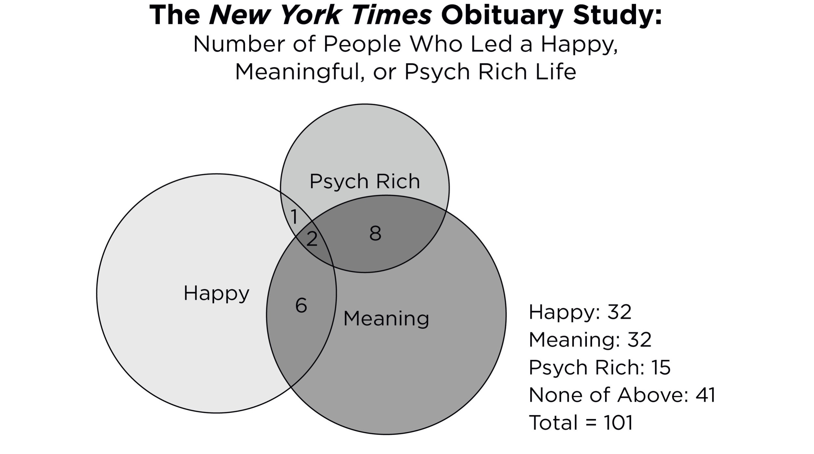
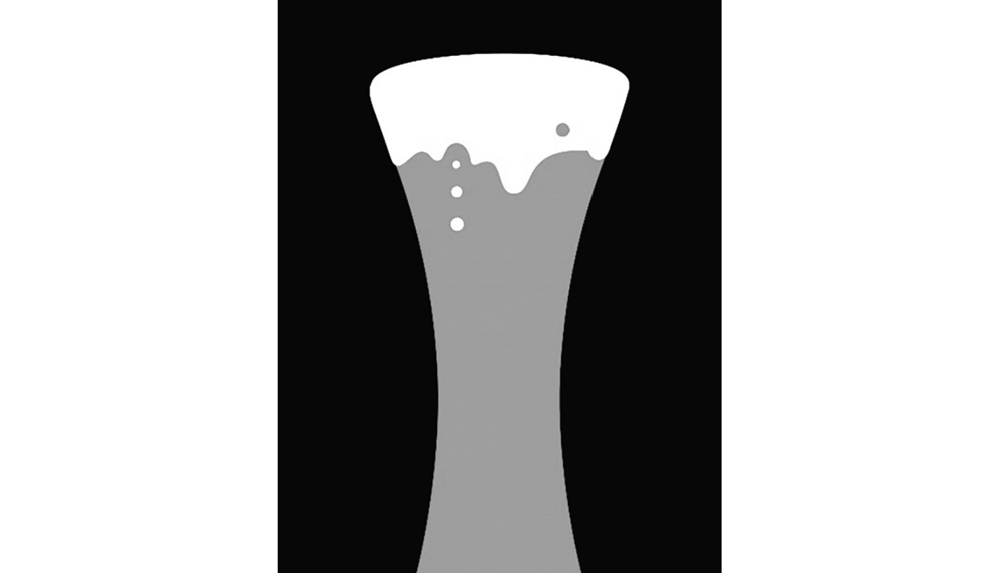
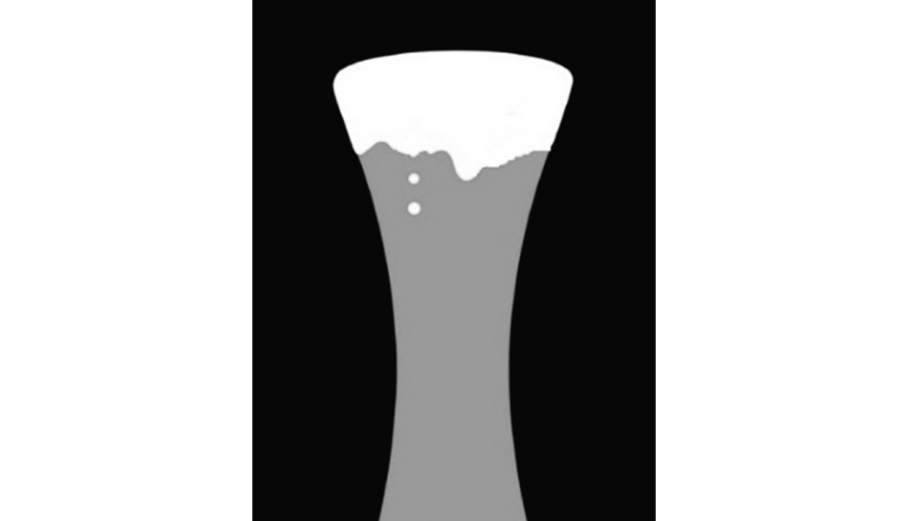
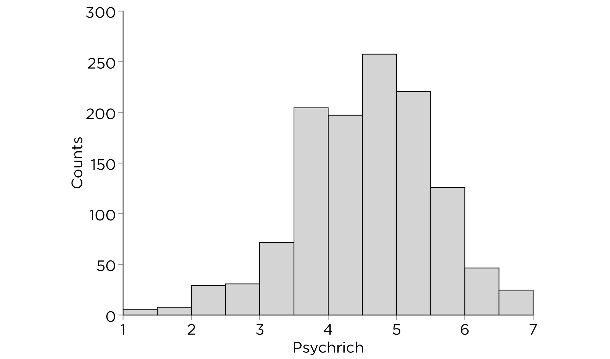

如果我离开，麻烦就会来临
如果我留下，麻烦会加倍。
—冲撞乐队(The Clash)
Yoshi出生在日本九州岛的一个小山城，这里以绿茶和柑橘闻名。和他的父亲、祖父以及之前的每一代男性祖先一样，Yoshi一生都在那里种植水稻和茶叶。他在农业高中读了一年后就选择了这条道路，辍学成为了一名农民。27岁时，Yoshi娶了邻镇的一位女子，育有三个孩子。他在邻里垒球联赛中打球直到五十多岁，每年都会和邻里协会一起去各处温泉旅游。他仍然住在同一个小镇；仍然和同一位妻子在一起；仍然和小学时就认识的那些好友保持着密切的联系。通过做出这些选择，Yoshi遵循了祖先们铺就的道路，不仅通过血缘，更通过职业、地方、期望和生活方式的共同纽带与他们建立了联系。
Yoshi 是我的父亲，而我是他远在他乡的儿子。我十八岁生日后，只用了整整十八天就离开了我们的小镇去东京上大学。大学四年级时，我获得了国际扶轮社(Rotary International)的奖学金，去缅因州留学。在缅因州的项目开始之前,我参加了纽约市斯塔滕岛的暑期英语课程。我刚和东京的女友分手,厌倦了谈恋爱。我只是想提高我的英语。然而,我遇到了一个来自韩国的学生并坠入爱河。她即将在波士顿开始研究生学习。而我即将在缅因州刘易斯顿开始为期一年的学习。在1991-1992学年期间,我每个周末都坐灰狗巴士去波士顿看她。五月份,我不得不回东京。虽然我留学前的职业规划是在日本教育部工作,而且我从未打算在美国读研究生,但那时我决心要回来。1993年6月,毕业后,我永远离开了日本。接下来,我在纽约市、伊利诺伊州香槟市、明尼苏达州明尼阿波利斯市和弗吉尼亚州夏洛茨维尔市停留了不同的时间,然后搬到了芝加哥。一路走来,我和在斯塔滕岛遇到的那个韩国女人结了婚,我们在两个不同的城市生了两个孩子。我已经多年没见过我的任何小学同学了。
离开家乡三十年后,随着年龄的增长,我试图维持我们剩余的家庭联系,我常常发现自己在想,我的生活怎么会与父亲的生活如此不同。我想知道他有机会时为什么没有搬走,而相比之下,我为什么搬了这么多次家。
我父亲的生活稳定、熟悉、舒适。春天赏樱花,夏天参加盂兰盆舞蹈节,秋天赏红叶,冬天泡温泉。这是一种惬意的生活,美好的生活。另一方面,我的生活远没有那么稳定,远没有那么熟悉,压力也大得多,演讲、评分和写作的最后期限不断,还有无数次的拒绝(例如,资助、论文、书籍提案、工作申请)。虽然大多数时候我热爱我的工作,但有时我确实羡慕父亲简单、欢乐的生活;我希望我能每周花一个晚上和老朋友喝清酒,回忆我们的学生时代,谈论农场生活。但在我最诚实的时候,我知道我不可能这样生活:我有一种强烈的渴望去看外面的世界,这种渴望太强烈了,以至于无法遵循祖先们走过的那条生活道路。
我回想起高中毕业时,当时我面临着用The Clash乐队那句不朽的话所表达的问题:“我应该留下还是应该离开?”那时很容易。就是走。然而,随着年龄的增长,这个问题变得越来越困难。几十年来,这个问题一直是我个人生活和学术研究的核心。我想你们大多数人也问过自己同样的问题,不是一两次,而是很多次。你们中的一些人可能像我父亲:忠诚、谨慎、怀旧,优先考虑稳定的生活。其他人可能更像我:易受影响、异想天开、冒险,拥抱充满冒险的生活。当然,稳定的生活和流动的生活、简单的生活和戏剧性的生活、舒适的生活和充满挑战的生活、传统的生活和非传统的生活之间都有权衡。但哪一种让我们更接近美好的生活?
要回答这个问题,我将借鉴心理科学几十年的研究,用文学、电影和哲学的例子来补充现有的数据。但首先我们需要从这个问题开始:什么是美好的生活?
当作家唐娜·塔特(Donna Tartt)被问到她在小说《金翅雀》(The Goldfinch)中正在探讨什么问题时,她说:“什么是美好的生活?…是自己快乐吗?是个人的幸福吗?还是让其他人快乐,即使以牺牲自己的幸福为代价?”塔特的问题很深刻。我们应该努力让自己快乐吗?还是应该在考虑自己之前为他人的幸福而努力?
首先，什么是个人幸福？什么让你感到幸福？做任何你想做的事情的自由？追求并实现你的职业目标？去海滩或水疗中心旅行？我在生活中做过许多自私的决定,包括在我的儿子还在上初中和高中时搬到纽约市,在一所著名大学工作。尽管我的儿子们不想离开他们的朋友和家乡,我还是选择了最大化自己的个人幸福。最终,我并没有发现自己更幸福。另一方面,我的父亲决定留在家乡,也许是为了让我母亲和其他人高兴,牺牲了自己的幸福。如果他搬到同一县的繁荣城市,本可以赚更多的钱。具有讽刺意味的是,多年后,他似乎对自己的决定比我更满意。这听起来可能像是一句中国谚语,但它说明了一个更深刻的道理:心理学研究表明,试图让别人快乐会让你快乐,而试图让自己快乐有时却做不到。事实上,心理学家发现,亲社会支出、写感恩信以及拥有满足者(即对足够好感到满意)心态都能促进幸福。我父亲如此快乐的主要原因可能是他调整了自己的期望,以至于他开始珍惜农场的日常生活,与长期相伴的配偶一起享受更小的乐趣。
也许我父亲美好生活的关键在于他决定把别人的需求——我母亲和家庭传统——置于自己的需求之上。但是一种自我牺牲和美德的生活——我们可以称之为”有意义的生活”——是一种没有遗憾的生活吗？在短期内,人们后悔行动,比如说或做了一些愚蠢的事情。然而,从长远来看,人们后悔不作为,比如没有说”我爱你”或没有回到学校。有些人可能过着自我牺牲和美德的生活,但放弃了最终导致更多遗憾和”如果”的机会。自我牺牲当然是令人钦佩的,但优先考虑它会导致人们忽视自己的欲望和理想,直到他们的生活不再真实。法国哲学家让-保罗·萨特会称这种生活为”自欺(bad faith)“。托妮·莫里森的小说《秀拉》中就有一个例子,内尔·赖特放弃了童年对冒险的梦想,在妻子和母亲的角色中寻求完美,正如她的家庭对她的期望。
在光谱的另一端是神经学家和作家奥利弗·萨克斯,他在开始写作生涯之前是一名热情的地狱天使摩托车手、健美运动员和LSD使用者。他在大学时期与抑郁症作斗争;当他的母亲得知他是同性恋时,告诉他她希望他从未出生;他在成年后的三十五年里独身生活。然而,尽管他经历了一些艰难的岁月,但他的生活充满了冒险和好奇心,挑战了职业界限,在经验和情感上都非常丰富——这是一种真实的生活,萨特会赞同的那种。
奥利弗·萨克斯的故事提出了一个难题。他患有抑郁症,经历了长期的内心挣扎,但他一直在探索新的领域。他2015年的自传恰如其分地命名为《在路上:一生》。个人幸福和满足,或自我牺牲和美德,都不能完全概括萨克斯生活中如此令人钦佩的地方。我们需要一个新术语,我和我的学生决定称之为”心理丰富的生活”。心理丰富的生活是一种充满多样、不寻常、有趣经历的生活,这些经历改变了你的视角;一种充满曲折的生活;一种戏剧性、多事的生活,而不是简单直接的生活;一种具有多样性和复杂性的生活;一种有许多停顿、绕道和转折点的生活;一种感觉像是一次漫长、蜿蜒的徒步旅行,而不是同一赛道上的多圈往返。
一个很好的类比是黑巧克力与甜巧克力。当你吃精致的黑巧克力时,你会立即注意到它与典型的含糖巧克力不同。它是甜的,但也是苦的,甚至是咸的。它让你感到惊喜,具有增强的强度、复杂性和深度。换句话说,它是丰富的。同样,心理丰富的体验不同于典型的体验;有一些意想不到和强大的东西。它具有多种品质,而不仅仅是好或坏。随着时间的推移,心理丰富体验的积累造就了心理丰富的生活,一种具有独特多种味道的生活。心理丰富的生活,在生活经历方面确实是丰富的。
但为什么我们需要这个新术语?为了解释原因,让我们稍微绕个弯,了解一下关于美好生活的心理学研究历史,我认为它有三个阶段。
Ed Diener，我的研究生导师，是最早研究幸福的研究者之一。他在1984年发表了一篇题为”主观幸福感”的论文。Ed和他的学生们，如Randy Larsen和Bob Emmons，在整个1980年代继续发表了一系列关于主观幸福感的论文，使幸福的科学研究在心理学领域获得了合法地位。Martin Seligman和Mihaly Csikszentmihalyi随后建立并推广了积极心理学，该学科基于对幸福以及其他相关主题的研究，如希望、乐观和心流。
1989年，Carol Ryff发表了一篇题为”幸福就是一切，还是不是？“的论文，提出了一个关于美好生活的替代模型，该模型关注自主性、自我接纳、目标、积极关系、环境掌控和个人成长。与Ed Deci和Richard Ryan的自我决定理论一起，Ryff的美好生活方法被称为”幸福主义方法”——简而言之，一种有意义的生活——与Ed Diener、Daniel Kahneman、Dan Gilbert、Sonja Lyubomirsky等人的美好生活方法形成对比，后者被称为”享乐主义方法”——一种快乐的生活。
在过去二十年里，幸福感研究者一直在争论享乐型幸福感与幸福主义型幸福感的相对重要性。例如，那些说自己生活轻松的人往往也说自己快乐，但不一定说自己的生活有意义。工人在休息时比工作时更快乐。然而，他们在工作时比休息时感到更投入。一些研究者甚至声称在享乐型和幸福主义型幸福感之间发现了不同的表观遗传模式，表明我们的基因表达方式是不同的。然而，其他研究者发现，几乎所有说自己快乐的人也倾向于说自己的生活有意义，反之亦然。享乐型和幸福主义型幸福感之间的重叠如此之大，以至于一些研究者认为它们实际上是同一回事。其他人则认为，幸福和生活意义都如此重要，以至于争论哪个更重要毫无意义。
幸福感研究者一直在争论幸福与意义的相对重要性，认为一个比另一个更重要。我自己的看法是，幸福和意义都很重要。但它们无法捕捉像Sacks那样冒险、非传统和戏剧性的生活。因此，心理学家从未有足够的词汇来描述这样的生活。在某种程度上，幸福与意义的争论类似于心理学中关于预测智力最重要因素的争论：先天（遗传）还是后天（环境）。最终，先天和后天都很重要。然后Carol Dweck提出并推广了第三个观点：成长型思维(growth mindset)。她表明，我们如何看待自己的智力——特别是我们是否相信智力可以提高——在预测智力和人类表现方面也很重要。
有一天晚餐时，我妻子问我能否修理客厅里坏掉的窗扇绳索（我们的十九世纪晚期维多利亚式房子有原装的双悬窗，仍然使用窗扇绳索操作）。我回答说：“我们应该雇人来做。我不擅长修理东西。”我们的二儿子，当时在上中学，立即回应说：“爸爸，那是固定型思维(fixed mindset)！你可以变得更好！”原来他刚在学校学习了Dweck的成长型思维。儿子的建议激励我修理了窗户，并成为一个更好的修理工，这是一个小例子，说明了像成长型思维这样的概念如何拓宽我们对自我、他人和世界的思考方式。正如成长型思维揭示了人类智力和能力的新维度，我希望心理丰富性(psychological richness)能够揭示美好生活的新维度。
那么，心理丰富性与幸福和意义有何不同？本书的主体部分详细回答了这个问题（简要总结见表1）。但非常简短地说，幸福是一种主观感受，它会上升和下降以表明一个人的生活状况。它有点像气球。在合适的风和气压下，它会飘得很高。一帆风顺。生活进展顺利。但当天气不好时，它就会泄气。停滞不前。生活进展不顺。从另一个意义上说，幸福就像你在棒球中的打击率。它会上升和下降，但最重要的是你击中的频率。就打击率而言，内场安打和巨大的本垒打一样有价值。你应该追求尽可能多的击中。换句话说，频繁的小型愉快社交互动比偶尔的大晋升更快地积累成长期幸福。
问题在于，幸福——就像击球率一样——会随时间而变化；这个赛季你打得好，另一个赛季可能就不行。在《宗教经验种种》中，威廉·詹姆斯宣称：“首先，这个世界上如此不稳定的成功经验怎么可能提供一个稳定的锚点呢?一条链条的强度取决于它最薄弱的环节，而生活归根结底就是一条链条。即使在最健康、最繁荣的生存状态中，有多少疾病、危险和灾难的环节总是穿插其中?”就是这样。幸福的脆弱性。
另一方面，生活的意义归根结底在于你的生活是否有一个”目标”。当你致力于在世界上产生影响时，你的生活确实有一个目标。你看到了自己劳动的成果，你的遗产。你的存在是有理由的。但当你的努力没有产生明显的影响时，就更难看到你生活的意义。苏格兰创作型歌手刘易斯·卡帕尔迪在歌曲《毫无意义》中唱道:“在我追逐的所有梦想中……没有你，一切都毫无意义。”想象一下他和这个女人分手了。他的付出将被浪费，他的生活会感到毫无意义。
托尔斯泰既幸福又多产。然而，在没有任何明显损失的情况下，他在大约五十岁时(在《战争与和平》出版多年后)突然经历了一场存在主义危机:“我有一个爱我、我也爱的好妻子；有好孩子和大量财产，这些财产在我不费吹灰之力的情况下不断增加。我比以往任何时候都更受亲友和熟人的尊重；我受到陌生人的赞扬；毫不夸张地说，我可以相信我的名字已经很有名了……然而，我无法为我生活中的任何行为赋予合理的意义。”就是这样。意义的不稳定性。
心理丰富性与幸福和意义不同，它不是关于生活走向何方或你生活的意义是什么的整体感受，而是关于一种体验，或者更准确地说，是关于随时间推移的体验积累。就像物质丰富性可以用金钱来量化——你拥有的金钱越多，你在物质上就越富有——心理丰富性可以用体验来量化。你拥有的有趣体验和故事越多，你在心理上就越丰富。正如你可以积累财富并变得物质富有一样，你也可以积累体验并变得心理丰富。如果幸福就像随每场比赛而变化的击球率，那么心理丰富性更像是职业生涯全垒打的总数：它会累加。
| 核心特征 | 隐喻 | |
|---|---|---|
| 幸福 | 快乐、舒适、稳定 | 气球、击球率、甜巧克力 |
| 意义 | 目标、影响、连贯性 | 天使、活动家、僧侣 |
| 丰富性 | 新奇、游戏、视角转变 | 百宝箱、全垒打、黑巧克力 |
心理丰富的生活并不适合每个人。它更适合好奇的人而不是满足的人。幸福或有意义的生活所提供的舒适和安全构成了一张安全网，而心理丰富的生活及其所有未知因素往往缺乏这种安全网。然而，幸福和意义的悖论在于，它们所培养的自满可能会导致一个不完整的生活，充满重大遗憾、怀疑和未解答的问题。值得庆幸的是，我们的生活不是零和游戏，我们不必选择通往美好生活的单一道路；有些人过着幸福、有意义且心理丰富的生活。因此，任何人都可以从心理丰富性研究的教训中受益。通过提醒自己重要的不仅是目的地还有旅程，我们学会了在寻求新体验和新知识中找到价值，希望能过上没有遗憾或至少更少遗憾的生活。
那么，你应该留下还是应该离开?对于那些留下的人来说，心理丰富性将为生活增添新的兴趣维度和韧性。而那些离开的人已经走在通往心理丰富性的道路上了。
心理丰富生活的其他要素是什么?还有谁过着心理丰富的生活?心理丰富的生活与幸福的生活或有意义的生活有何不同?你需要亲身积累体验，还是替代性体验也算数?心理丰富生活的好处是什么?我们如何在心理上丰富我们的生活?本书将深入探讨这些问题。
无论发生什么——如果你有压力、有点沮丧、不堪重负——你都想展现出这种积极的一面。
——Kahaari Kenyatta，宾夕法尼亚大学大四学生，谈论”宾大面孔”文化，即使在悲伤或压力时也表现得快乐和自信的做法，《纽约时报》,2015年7月27日
根据亚里士多德的观点,幸福是目标中的终极目标。当威廉·詹姆斯问自己”人类生活的首要关切是什么?“时,他的答案是:”是幸福。如何获得、如何保持、如何恢复幸福,实际上对大多数人来说,在任何时候都是他们所做的一切和愿意忍受的一切的秘密动机。“这是全球许多人共同的目标;在Ed Diener进行的一项大型国际研究中,69%的受访者将幸福评为极其重要(在1到7分的量表上得到满分7分),超过了金钱、爱情和健康。这是一个值得追求的目标,因为研究表明快乐的人更健康,更具有亲社会性(prosocial)。他们也是更好的工作者,并且比不快乐的人活得更长。
讽刺的是,我们对幸福的盲目追求有时会导致不幸福。我们给自己施加过度的压力和负担,要求自己总是快乐,这反而阻止了我们获得这些好处。以Madison Holleran为例,她是宾夕法尼亚大学一名”受欢迎、有魅力且才华横溢”的一年级学生。据《纽约时报》报道,她”发布的照片显示她微笑着,沐浴在阳光下或在派对上放松。“她的社交媒体体现了幸福。然而她的现实更加脆弱。她向姐姐透露,感觉自己的社交生活不如朋友们。2014年1月17日,Madison从停车场顶部跳下,结束了自己的生命。
自杀是一种极其复杂的行为。Madison的自杀肯定不仅仅是因为感觉社交生活不如朋友,还有许多其他因素。令人震惊的是,她在公开场合假装快乐的能力有多强,以及一个看起来如此适应良好且快乐的人,也有着导致悲剧命运的深刻内心挣扎。她是例外还是常态?
根据美国疾病控制中心(CDC)的生命统计数据,2000年至2018年间,美国人的自杀率增加了38%。自杀仍然相对罕见。在2018年的高峰年,美国人死于自杀的比率达到了每10万人中有14人,这个数字可能使Madison的案例看起来像是例外。然而,自杀意念并非如此。根据CDC的数据,2020年有120万次自杀未遂和1220万美国成年人”认真地”考虑过自杀。这意味着大约每20个美国成年人中就有1人在那一年认真考虑过自杀。这个数字很大。因此,如果你看自杀想法的频率,那么Madison的案例似乎并不罕见。所以,下一个问题是:为什么她感到如此大的压力要表现出快乐的面孔,尽管有自杀的想法?
感到快乐压力的核心是美国文化对幸福的建构,认为幸福是可以实现的。在一项研究中,美国大学生被要求写下他们想到”幸福”时想到的任何事情。许多人写了类似这样的内容:“幸福是对你付出的所有努力的回报”和”幸福是成功的感觉。“一个学生简单地写道幸福是一种”胜利”!也就是说,幸福和成功之间有着强烈的联系。另一项研究要求大学生写下”幸福或不幸福的不同方面、特征或影响。“早期的发现得到了重复:美国大学生倾向于将幸福等同于个人成就。
如果幸福是一种胜利,那么对幸福的追求就等同于对胜利的追求。成功带来幸福。失败导致不幸福。对许多人来说,如果你不快乐,你就不成功。如果你不快乐,你就是一个失败者。快乐的压力可能来自这种将幸福作为成功标志的文化叙事。在Saul Steinberg 1959年标志性的《纽约客》封面中,繁荣赢得了追求幸福的竞赛,暗示需要成功和繁荣才能快乐。
幸福研究者发现的结果与以成就为导向的幸福概念截然不同；一次胜利很少会带来永久的（甚至是长期的）幸福。像晋升这样的重大成就对幸福感的影响似乎会在六个月内消失。数十年关于”情感预测错误(affective forecasting error)“的研究表明，我们倾向于高估成功将带来的幸福感，同时也高估失败将产生的不幸感。在一项研究中，Dan Gilbert和同事们询问未获得终身教职的助理教授，如果他们获得终身教职会有多高兴，以及如果被拒绝授予终身教职会有多不高兴。这听起来是一个显而易见的问题。事实上，所有助理教授都表示，如果获得终身教职他们会非常高兴，如果被拒绝则会非常沮丧。接下来，研究人员采访了确实获得终身教职的前助理教授和没有获得终身教职的其他人。不幸的是，那些获得终身教职的人并不像现任助理教授想象的那样高兴。好消息是，那些被拒绝授予终身教职的人比现任助理教授想象的要快乐得多。
幸福科学的第一个洞察是，人们高估了成功在自身幸福中的作用。大幅晋升、结婚或第一个孩子的喜悦是相对短暂的。带来幸福的不是巨大的胜利。相反，生活中的小事，比如每天和你最好的朋友喝咖啡，才能建立长期的幸福。幸福是积极事件的频率，而非强度。相关研究表明，幸福是亲密关系的产物，而非个人成就。也就是说，幸福不是个人成功，而是人际成功。
那么人们为什么要假装快乐呢？当然，有句话说”假装直到你成功(Fake it till you make it)“。许多人深信，如果你继续假装自己成功，最终你就会成功。昆汀·塔伦蒂诺(Quentin Tarantino)后来编剧并导演了标志性电影《低俗小说》等作品，当时他在加州曼哈顿海滩的一家音像店担任店员，为了得到他在好莱坞的第一份制作助理工作，他撒谎说自己曾在电影行业工作过。史蒂夫·乔布斯(Steve Jobs)也是假装直到成功的。第一代iPhone有内存问题。它无法同时运行多个程序。在第一代iPhone的产品发布会上，史蒂夫·乔布斯使用了多部iPhone，一旦旧的在演示过程中崩溃就立即切换到新的。它还有带宽问题。因此，当台上的iPhone连接不佳时，他们造假并始终显示五格信号。最终，苹果解决了内存问题。同样，许多美国人是否也认为，如果他们假装快乐，最终就会变得快乐？
我们无法确定大多数美国人是否认为假装快乐会让他们快乐。即便如此，有一个著名的实验，参与者在嘴里含着一支笔，以模仿微笑或不微笑。然后他们观看几幅漫画并评价它们有多好笑。研究人员的发现相当令人震惊。“微笑”条件下的人将相同的漫画评价为比非微笑条件下的人更好笑！仅仅移动他们的面部肌肉做出笑脸就让他们更享受漫画。一些研究未能复制原始发现，尽管其他研究能够复制它们。尽管如此，原始实验已在主要新闻媒体中被提及。因此，许多人认为当你悲伤时，你应该装出快乐的表情。
还有许多实验要求参与者表现得像外向者。之后，他们报告的幸福感高于那些被要求正常表现的人。令人惊讶的是，这种干预甚至对天生的内向者也有效。同样，当人们被要求与陌生人交谈（即表现得像外向者）时，人们感到比他们预期的快乐得多。这些发现已被复制。因此，表现得像外向者确实倾向于让人们更快乐，即使假装微笑不会。
这里的关键要点是，在某些情况下我们感到悲伤、愤怒和焦虑是很自然的。对幸福的过度强调导致了一个危险的误解，即不快乐是失败的标志。在一项实验中，参与者被要求在有或没有快乐压力的情况下解决字谜。字谜是不可能解决的，每个人都失败了。被施加快乐压力的参与者比对照组的参与者更多地反复思考失败，对照组没有快乐的压力。当你相信自己应该快乐时，同样的失败感觉更糟。
一项大型国际研究发现，美国人平均比日本人、乌克兰人和德国人感受到更大的快乐压力。有趣的是，在那些快乐更多地与好运和财富而非个人成就相关的国家(如日本和德国),人们感受到的快乐压力似乎更小。此外,这些研究人员发现,那些感到必须快乐的人也同样感到不能悲伤和愤怒的压力。简而言之,许多美国人陷入了快乐陷阱。
快乐陷阱有两面性。首先,快乐的压力使得悲伤、愤怒和痛苦显得不可取和疏离。然而,避免负面情绪是不可能的。当你错过火车时,当有人批评你时,当你的孩子对你的付出毫无感激之情时,你会感觉糟糕。这很正常。
例如,我在纽约市生活时多次遇到过这样的经历。我住在一栋没有门卫的楼里。有一天,当我从当地中餐馆带着外卖回到楼里时,一位年轻女士为我开了门。于是我说:“谢谢!” 当她回答”谢谢你!“时,我完全懵了。然后我意识到:她以为我是给她送餐的中餐配送员。这种事在我还是研究生时发生过,在我成为正教授后也发生过。我感到受辱。但事情总会发生,对吧?
说到研究生院,当我还是博士五年级学生时,我的导师告诉我以下故事。丹尼尔·卡尼曼(Daniel Kahneman),普林斯顿大学的著名心理学家,打电话给我的导师埃德·迪纳(Ed Diener),询问关于我的情况。当时,普林斯顿有一个助理教授职位,我申请了。他们聊了一会儿后,卡尼曼问我的导师:“Shige自负吗?” 我的导师说:“不,他不自负。” 卡尼曼说:“嗯,要在普林斯顿生存,你必须自负。” 然后我的导师做了一个好导师应该做的事,我想。“我有另一个学生很自负。” 一周后,我发现自己没有获得普林斯顿的面试机会,而我那位”自负”的实验室同事得到了!世界并不总是公平的,不是吗?
当这些事情发生时,你会感觉糟糕。当你感觉糟糕时,你会怎么做?
感到必须快乐的人会尝试几乎任何方法来修复自己的情绪。有些人做非常健康的事情,比如锻炼和徒步旅行,而其他人则做非常不健康的事情,比如过度饮酒或冲动购物。在《美丽新世界》中,奥尔德斯·赫胥黎写道:“你需要的是一克索麻(soma)”,一种”具有基督教和酒精的所有优点,却没有它们的缺点”的药丸。就我个人而言,当我感到沮丧时,我会听我最喜欢的歌曲。有时我甚至会跟着唱。其他时候,我会和妻子聊天。如果她不在身边,我就小睡一会儿。
对于处理持续的负面情绪,还有更复杂的方法。情绪调节研究人员将它们分为几个主要类别。例如,人们可以尝试对事件进行积极的重新解释。一位有两个年幼孩子的离异父亲可能会将离婚重新解释为上帝赐予的机会,让他在前妻抚养孩子时有更多时间投入自己的爱好。其他人可能会尝试与离婚保持距离,开始从对方的角度看待同一事件,这可以减弱他们对触发事件的负面反应。还有人试图从未来自我的角度看待自己。五年后,我还会以同样的方式受苦吗?在未来,这件事可能感觉就像道路上的一个小坎坷。
相比之下,那些不感到必须快乐的人不会花太多精力修复负面情绪,因为他们认为偶尔感觉糟糕是很自然的。这里有更多的情绪接纳。这些人相信时间能治愈一切。他们是对的。虽然重新评估和自我疏离等主动情绪调节策略是有效的,但人类确实具有从负面情绪状态中自然治愈和恢复的能力。这就是丹·吉尔伯特(Dan Gilbert)、蒂姆·威尔逊(Tim Wilson)及其同事所说的”心理免疫系统”。就像病毒进入身体时生物免疫系统会启动一样,当不良事件发生时,心理免疫系统会自动启动。
令人惊讶的是,人们严重低估了自己心理免疫系统的力量,反而严重依赖自制的情绪修复方法,从酒精到甜食再到购物。如果我们不感到那么大的快乐压力,只是让负面情绪稍微持续一会儿,我们自己的心理免疫系统就会启动,攻击不快乐的”心理病毒”并将其清除。快乐陷阱的这一要素会把我们引向一条潜在的破坏性的不健康应对之路。
幸福陷阱的第二个要素是，如果你对幸福的期望不要太高，实际上更容易获得幸福。社会心理学家巴里·施瓦茨(Barry Schwartz)发现了”足够好”的力量。如果你是那种经常接受”足够好”的人，也被称为”满足者(satisficer)“——一个为了满意的选择而牺牲最佳选择的人——你更有可能对自己的决定感到满意。假设你是一名高中毕业生。你的平均绩点几乎完美。你有很高的SAT分数。你参加了一堆课外活动。你想去哪所大学？你可能想去你能进入的最好的大学。所以你申请了十所学校。如果这是你，你就是一个”最大化者(maximizer)“。现在，假设你是一个满足者。你可能能进入常春藤盟校或像杜克这样的超级精英学校之一。但你却说：”我认为弗吉尼亚大学拥有我想要的一切。而且，我可以享受州内学费。“你只申请了弗吉尼亚大学并被录取了。
假设其中一个最大化者进入了康奈尔大学，而满足者去了弗吉尼亚大学。在第一年结束时，哪一个可能更快乐？一项以类似场景为特色的研究发现，去弗吉尼亚大学的人可能比去康奈尔大学的人更快乐。这与弗吉尼亚大学和康奈尔大学无关，而是与替代选项的概念有关。康奈尔大学的学生申请了十所学校，这意味着他们有九个反事实(counterfactual)。如果我的SAT成绩再高20分，我可能就能进入耶鲁了。如果我再多一项课外活动，我可能就能进入普林斯顿了。相比之下，弗吉尼亚大学的满足者学生有零个反事实，因为这个人找到了一所满足所有要求的学校，并且没有申请任何其他学校。没有替代选项，没有反事实，没有遗憾。一些美国人强烈认为，上一所精英学校是通往幸福生活的道路，而实际上拥有一个”足够好”的心态才是更可靠的途径。如果你没有进入你的首选学校，停止思考它，开始寻找你现在的学校有什么好的地方。说起来容易做起来难，但这会让你更快乐。
与最大化者心态密切相关，向上的社会比较(upward social comparison)是另一个不快乐的来源。联合创立网景公司(Netscape)的吉姆·克拉克(Jim Clark)作为硅谷企业家取得了一系列成功。他向记者迈克尔·刘易斯(Michael Lewis)讲述了他最初如何认为如果早期能赚到1000万美元就会感到快乐。但后来网景取得了巨大的成功。他现在认为如果能赚到1亿美元就会快乐。但后来又有了另一个巨大的成功，他现在认为如果能赚到10亿美元就会真正快乐。然后他确实赚到了10亿美元。现在他说：“我想要…比拉里·埃里森(Larry Ellison)更多的钱。然后我就会停止。”根据《福布斯》，2023年克拉克的净资产为38亿美元，而拉里·埃里森的净资产为1580亿美元。我想知道吉姆·克拉克是否曾经得到过满足，尽管他取得了巨大的成功。在这一点上，研究发现非常清楚。索尼娅·柳博米尔斯基(Sonja Lyubomirsky)和李·罗斯(Lee Ross)发现，不进行向上社会比较的人比那些痴迷于社会比较的人更快乐。
有了社交媒体，我们被精心策划的他人形象所轰炸。其他人似乎都在度过他们生命中最美好的时光!很难避免向上的社会比较。但这是可能的。我记得夏洛茨维尔布福德中学(Buford Middle School)校长约翰逊先生(Mr. Johnson)向我们家长和学生讲述的一个故事，关于他在弗吉尼亚大学当大学生的时候。在搬入日那天，约翰逊是一位来自田纳西州的非裔美国人，他用一堆黑色垃圾袋搬运他的东西。他注意到其他弗吉尼亚大学的孩子们用手提箱搬运他们的东西。所以他问他的父亲，一位油漆工，“为什么我们没有手提箱？”他父亲的回答是什么？“儿子，与众不同是可以的。”当你在社交媒体上感到不如那些炫耀的人时，记住约翰逊先生的父亲。与众不同是可以的。
由于丹麦经常被列为世界上最幸福的国家之一，BBC前往丹麦人那里寻找幸福的关键。秘诀是什么？许多丹麦人说他们对生活期望不高。降低你的期望。对你拥有的感到满足，丹麦智慧建议。像我父亲一样，许多丹麦人珍视hygge，生活的舒适和小乐趣，以及满足生活的理念。
这是否意味着我们应该提倡满足者心态而不是最大化者心态？我不这么认为。满足者心态在生活中有一个重要的位置。当我购买东西、计划什么或做日常决策时，我会积极使用它。但这种心态也可能有阴暗面。例如，它让你满足于现状，这反过来又阻碍你接受必要的挑战和个人成长。这是幸福陷阱的第二部分：满足于少于你能实现的。注意《美丽新世界》中”野蛮人”约翰的警告，他说：“好吧，我宁愿不快乐，也不愿拥有你们在这里拥有的那种虚假的、撒谎的幸福。”
弗里德里希·尼采会赞同约翰的宣言。他认为大多数人被欺骗而感到幸福和有道德。在《查拉图斯特拉如是说》中，他这样描述过幸福和有道德生活的诱惑：“他们会赞美并诱惑我进入一种小美德；他们会说服我的脚步走向小幸福的滴答声。我行走在这些人中间，我睁大眼睛：他们变得更小了，而且正变得越来越小；但这是由于他们关于幸福和美德的教条。因为他们在美德上也是谦逊的——因为他们想要满足。但只有谦逊的美德才能与满足相处。……谦逊地拥抱一个小幸福——他们称之为’顺从’——他们谦逊地斜视着整体以寻求另一个小幸福。从根本上说，这些单纯的人最想要的是一件事：没有人应该伤害他们。因此他们试图取悦和满足每个人。然而，这是懦弱，即使它被称为美德。”
尼采倡导的不是传统的、简单的、舒适的生活，而是流浪者(wanderer)的生活。查拉图斯特拉对自己说：“我是一个流浪者和登山者……只有现在你才走上通往伟大的道路！顶峰和深渊——现在它们连在一起了。你正走在通往伟大的道路上：现在那曾经是你最大危险的东西已经成为你最终的避难所。”查拉图斯特拉是”所有远行者的朋友，不喜欢生活在没有危险的地方……对你们这些大胆的搜寻者、研究者，以及用狡猾的帆驶向可怕海洋的人——对你们这些沉醉于谜题、喜欢黄昏、灵魂的笛声将你们引向每一个漩涡的人，因为你们不想用懦弱的手沿着威胁摸索；在你们可以猜测的地方，你们讨厌推断——只对你们我讲述我看到的谜题，最孤独者的幻象。“小幸福和意义是危险的，因为它们是如此诱人。几乎是无意识地，大多数人被吸引到传统中，这样他们就可以过上和谐、无冲突的生活。对查拉图斯特拉来说，这不是一种值得过的生活。
如果你感到一直要感到幸福的压力，请记住，偶尔感到悲伤、愤怒或恐惧是可以的。这些情绪为你的内心生活增添了复杂性和丰富性。如果你已经对自己的生活感到满意，那你做得很好。但花点时间反思一下你的满足者(satisficer)心态。也许生活中可以有比舒适和小快乐更多的东西，至少偶尔如此。正如我们将看到的，幸福并不是过上美好生活的唯一方式。
你必须找到你所爱的。这对你的工作和爱人都同样适用。你的工作将占据你生活的很大一部分，唯一真正满足的方式是做你认为是伟大的工作。而做伟大工作的唯一方法是热爱你所做的事。如果你还没有找到它，继续寻找。不要妥协。就像所有心灵的事情一样，当你找到它时你会知道的。
——史蒂夫·乔布斯，2005年斯坦福大学毕业典礼演讲
幸福有很多拥趸。但也有许多怀疑者，从斯多葛学派到古斯塔夫·福楼拜。福楼拜写信给路易丝·科莱特说：“愚蠢、自私和身体健康是幸福的三个要求，尽管如果缺少愚蠢，一切都会失去。”以类似的精神，托尼·施瓦茨在《哈佛商业评论》上写了一篇题为”幸福被高估了”的文章，说：“’快乐’的人是我认识的最乏味的人之一。”谢尔·西尔弗斯坦的诗《快乐之地》可能是对幸福最尖锐的批评。他将快乐之地描述为一个每个人都快乐、一切都欢乐的地方。他以这样的话结束他的诗：“真是无聊。”
为什么对幸福如此消极？一个常见的批评是，幸福的生活可能是自私的。实际上，有很多证据表明并非如此。例如，把钱花在别人身上而不是自己身上会增加幸福感。快乐的人比不快乐的人更多地做志愿者。但是，现在让我们假设”幸福即自私”的批评是成立的，并继续提出一个问题：如果不是幸福，什么才能成就美好的生活？
小说家唐娜·塔特建议是”让其他人快乐，即使以牺牲自己的幸福为代价”——换句话说，许多学者所说的”有意义的生活”。生活中的意义通常由重要性(significance)、目的(purpose)和连贯性(coherence)来定义。首先，有意义的生活是一种重要的生活。它不仅对一个人的家人和朋友重要，对陌生人也同样重要。有意义的生活是一种在世界上产生影响的生活。其次，有意义的生活有明确的目标。过有意义生活的人知道他们要去哪里。有明确的方向感和指导原则。第三，有意义的生活是组织良好的。一个人所有不同的经历都在他们自己的指导原则下结合在一起。
相比之下,无意义的生活是一种对世界没有任何影响的生活。人类学家David Graeber在他的著作《毫无意义的工作:一种理论》(Bullshit Jobs: A Theory)中指出,全世界有数百万人正在无意义的工作中虚度一生。他将毫无意义的工作定义为:从事该工作的人无法真正证明该工作存在的合理性。根据Graeber的说法,无意义的工作不仅包括重复性的工厂或文员工作,还包括企业律师、公关顾问、电话推销员和品牌经理。例如,他声称大多数企业律师私下认为,如果他们不存在,这个世界可能会更美好。当然,人们可以在工作之外对世界产生影响。所以这并不意味着企业律师和公关顾问过着无意义的生活。但如果你没有对世界产生任何积极的影响,你的生活可能会感到毫无意义。同样,无意义的生活没有明确的目标。没有明确目标的人往往漫无目的地度过一生。最后,无意义的生活感觉支离破碎、高度分裂。一个人扮演的不同角色无法构成一个连贯的整体。
不用说,有意义的生活听起来比无意义的生活更有吸引力。因此,人们说你应该找到生活的理由——无论是通过职业、宗教、社会角色(例如为人父母)、科学发现还是社会变革。许多毕业典礼演讲者都沿着这些思路布道,包括Michelle Obama在2016年纽约城市大学毕业典礼上的演讲:“成就伟大。为自己建立伟大的生活……并且请,请永远、永远尽你的本分帮助他人做到同样的事。”
Donna Adams-Pickett博士正是实践了Michele Obama所倡导的理念。小时候,她得知她的祖母住在一个烟草农场,在分娩时去世了。婴儿也死了,她的父亲在十二岁时失去了母亲。听到这个故事后,她决心成为一名妇产科医生。正如她与PBS NewsHour分享的,Adams-Pickett博士在过去二十年里在佐治亚州奥古斯塔地区接生了超过6,000名婴儿,该地区位于孕产妇护理荒漠地带。她的生活无疑是有意义的,因为她有明确的目标(为佐治亚州的人们,尤其是黑人女性提供良好的孕产妇护理,她们在分娩前后的孕产妇死亡率远高于其他女性)和重要性(如果没有她的护理,一些母亲和婴儿可能已经死亡)。她的家庭悲剧也为她的人生历程提供了令人信服的叙事和连贯性。
当我们想到过着有意义生活的人时,我们可能会想到那些做了伟大事情的人,比如Donna Adams-Pickett博士、Michelle Obama或Barack Obama——那些发表毕业演讲的人!这些都是非凡的成就。这些人是英雄。然而,这些成就如此罕见,以至于很难想象能够实现这样的壮举。就像幸福陷阱一样,也存在一个意义陷阱。意义陷阱的第一个要素是,与有意义的生活相关的成就类型是如此宏大,以至于以此为目标会让我们注定失败。
意义陷阱的第二个要素是人们往往误解了所需的条件。这些拥有超大雄心壮志的英雄形象不一定符合研究发现。尽管许多人认为过着有意义生活的人数量很少,但调查数据显示,事实上,大多数人说他们确实拥有有意义的生活。在标题巧妙的论文《生活相当有意义》(Life Is Pretty Meaningful)中,Samantha Heintzelman和Laura King报告称,根据盖洛普世界民意调查,90%的美国人说他们的生活有意义。
我们怎么可能一方面认为有意义的生活是为成就卓越的英雄准备的,而另一方面大多数人又说他们的生活是有意义的呢?一个答案可能在于如何询问关于生活意义的问题。盖洛普调查是这样措辞的:“你是否觉得你的生活有重要的目标或意义?”采用是或否的回答格式。说”不,我的生活既没有目标也没有意义”,几乎等于说自己的生活毫无意义。那些不觉得自己的生活完全毫无意义的人很可能会对这个问题回答是。这意味着即使有人不觉得他们的生活特别有意义,他们也可能回答是。
另一项专注于目标的盖洛普调查(“我的生活有真正的目标”)发现,28.5%的美国人”强烈”同意(在1到5分制中打5分),而1.1%的人”强烈”不同意(在同样的1到5分制中打1分),9.1%的人不同意(在1到5分制中打2分)。强烈不同意或不同意”我的生活有真正的目标”这一陈述的人的百分比与最初的盖洛普数据相当吻合(10%的人说否 vs. 10.2%的人不同意)。
尽管如此，28.5%的美国人报告说他们的生活有真正的目标，另有54.9%的人报告说他们的生活或多或少有真正的目标，这一事实令人印象深刻。在美国真的有这么多英雄人物在做出改变吗？还是这只是某种过度积极的幻觉？事实证明，这不仅仅是自我报告偏差。心理学家Michael Steger及其同事要求参与者报告他们觉得自己的生活有多少意义。此外，他还要求他们的朋友和家人报告参与者的生活意义。如果高比例的自我报告生活意义只是一种幻觉，知情人报告就不会与自我报告相关。他发现的结果却不同：自我报告的生活意义与知情人报告的生活意义相关。生活意义的自我-知情人相关性与测试更熟悉的人格特质（如外向性和神经质（过度担忧的倾向））的研究相似。因此，从科学角度来看，自我报告的生活意义是相当有效的。
那么，这28.5%说他们的生活有意义的美国人是谁？首先，他们往往是有宗教信仰的人。有宗教信仰的人遵循某些信仰原则，这些原则帮助他们相应地解释困难的生活处境并给予他们清晰度。2005年，当飓风卡特里娜席卷新奥尔良的一些社区时，许多居民努力理解为什么会发生这种事。有宗教信仰的人比没有宗教信仰的人更能在心理上应对这场灾难。因此，你不必像史蒂夫·乔布斯那样成为一个特立独行的发明家才能感觉到你的生活有意义。找到意义的一种方式是遵循传统宗教。
Steger的研究还发现，说他们拥有有意义生活的人往往对未来持乐观态度，外向，不神经质，随和，尽责，并且有高自尊。生活意义本质上是非常主观的。一些备受尊敬、受人喜爱、获奖的科学家仍然认为他们的生活毫无意义并选择自杀。相比之下，一些普通人认为他们的生活与一项重要使命相联系。在一个著名的民间传说中，约翰·肯尼迪曾经访问NASA时对一位清洁工说：“嗨，我是杰克·肯尼迪。你在做什么？”清洁工回答说：“嗯，总统先生，我正在帮助把人类送上月球！”
其次，拥有高自尊的人比那些不喜欢自己的人更有可能说他们的生活很重要。不神经质的人（那些不太担心或压力不太大的人）比神经质的人更有可能说他们的生活有明确的目标和方向。尽责的人比不尽责的人实现更多目标。因此，他们也比不尽责的人更有可能感到自己正在朝着生活中更大的目标前进。他们可能会觉得自己的生活有方向感、目标感和意义感。在大多数美国人拥有高自尊、对未来持乐观态度、并说他们外向、不神经质、随和和尽责的程度上，很多人说他们的生活有意义是有道理的。
这些人格特质和态度以可预测的方式表现出来。人们倾向于选择一两个他们深切关心的事业（例如，施粥所、教堂），在同一地点长期志愿服务，并通过努力在一个明确定义的领域做出改变来获得意义。其他人从他们的工作、家庭和社区中获得生活意义，同样是一个狭义定义的生活领域。关于生活意义的研究表明，成功实现有意义的生活往往伴随着专注和狭隘。在大多数情况下，这不是问题。
然而，这有一些令人不安的含义。想想一个假设的军事监狱看守，Mason。他深切关心美国国家安全。Mason想要将自己的生命奉献给保护美国人民。他被分配到一所主要关押恐怖主义嫌疑人的监狱。他虐待这些恐怖主义嫌疑人，就像阿布格莱布臭名昭著的监狱虐待案件一样。Mason认为他正在过着有意义的生活，因为他通过保护美国人民而在世界上做出改变。但这是美好的生活吗？在这种情况下，它可能在主观上是有意义的，但客观上并不那么好。
到目前为止，军事监狱官员Mason的案例只是假设。对于这种错位的生活意义现象，是否有任何科学证据？最近的研究发现，生活意义与右翼威权主义(right-wing authoritarianism)相关，这是一种信念体系，定义为对权威的不加批判的服从，对那些违反社会规范的人的侵略感，以及严格遵守传统价值观。也就是说，右翼威权主义者报告的生活意义水平高于非威权主义者。他们以自己的方式做大量的公民工作。但他们的事业可能非常狭隘，并且可能对他们认为是局外人的人持敌对态度。同样，多项研究发现，政治保守派（他们以在内群体和外群体之间划清界限而闻名）报告的生活意义水平以及幸福感高于政治自由派。
或者考虑终极的反社会行为——恐怖主义。犯罪学家西蒙·科蒂(Simon Cottee)认为，人们加入恐怖组织的主要原因之一是对终极意义的渴望：“恐怖组织为其成员提供了重要的身份认同和目标感，而……这很可能是促使人们加入它们的部分动机。恐怖组织不仅为其新成员提供了一套包罗万象的叙事来理解世界及其运作方式……它还为他们提供了一套叙事来理解他们自己在这个更广阔世界中的位置。在这套叙事中,生活中的基本存在性问题得到了一个极其明确的答案。”那么,这些最新研究表明,许多人的有意义生活可能建立在狭隘的群体内偏袒和传统之上,而以牺牲群体外成员为代价。
与幸福陷阱一样,意义陷阱也有两个部分。首先,对于我们大多数既没有发明任何东西也没有参加过和平队的人来说,面对要变得伟大的呼召,很容易感到失败。改变世界的压力可能在情感上令人疲惫,就像追求幸福的压力一样。我们大多数人偶尔会有这种感觉。如果你觉得自己没有对世界产生任何有意义的影响,不妨考虑通过投身于某个事业来实现意义,从你的社区小事做起。慢慢来,从长远来看你会产生影响的。意义陷阱的第二部分是,追求有意义的生活可能会促成狭隘的观点。正如研究所示,生活的意义有时是通过对小群体内的亲社会行为,以及对群体外的反社会行为或冷漠来实现的。如果你在狭义上过着有意义的生活,你可能需要考虑拓展你的视野。
数十年的心理学研究,包括我自己的一些研究,无疑已经确立了幸福和意义是通向美好生活的途径,并带来无数益处。然而,通过将自己局限于这两条道路,我们已经使太多人无法企及美好生活。还有另一种实现美好生活的方式。它可能不稳定或舒适,但令人振奋。它可能不充满满足感,但很戏剧化。它有起伏,有曲折,但到最后,它提供了一种遗憾更少的生活;一种充满冒险、玩乐、自发性、意外发现和学习的生活;一种顺其自然、踏上少有人走的道路的生活——换句话说,一种充满体验的生活。通向美好生活的第三条道路是心理丰富的生活,它是超越幸福和意义陷阱的一种方式。
世界是一本伟大的书,那些从不离家的人只读了其中一页。
——归于圣奥古斯丁
到目前为止,我已经告诉了你一些获得生活幸福和意义的秘诀。带来幸福的不是大的胜利,而是生活中的小快乐,比如和你最好的朋友喝茶。通常带来长期幸福的不是事业成功,而是人际成功。同样,生活的意义来自于对你深切关心的特定事业的奉献,以及在所选领域做出改变。总的来说,稳定的生活,而不是探索和变化的生活,让你更接近生活中的幸福和意义。如果稳定生活的好处是幸福和意义,那么探索生活的好处可能是什么呢?
赫尔曼·黑塞(Hermann Hesse),二十世纪最有影响力的德国小说家之一和1946年诺贝尔奖获得者,在几部小说中描绘了令人难忘的人物,他们努力寻找通向美好生活的道路。《纳西索斯与戈尔德蒙德》是最受欢迎的黑塞小说之一,该小说在2020年也被改编成电影。标题人物之一纳西索斯,是那些选择稳定生活的人之一。他聪明又受欢迎。他对自己与世隔绝的生活感到满意,并觉得自己简单的宗教生活非常有意义。纳西索斯成为了一位备受尊敬的亚里士多德学者和修道院院长。从表面上看,纳西索斯是成功的典范。
与此同时,他儿时的朋友戈尔德蒙德渴望修道院外的生活,决定过流浪艺术家的生活,缺乏食物、住所和稳定的伙伴。在他的旅途中,他目睹了无数因大流行病而死亡的人。在某个时刻,他质疑自己的决定:“所有这些有意义吗?值得经历吗?”与纳西索斯不同,戈尔德蒙德经常感到内疚、不快乐,并觉得自己的生活毫无意义。最终,他受到一尊圣母木雕的启发:发现这尊雕像”难以言喻的美丽”,他决定成为一名雕塑家的徒弟,开始雕刻自己的雕像。
在小说的结尾，Narcissus开始怀疑自己幸福而有意义的生活是否缺少了什么。Narcissus知道，那些留在修道院的人认为他的生活远比Goldmund充满探索和道德越界的生活”更好、更正确、更稳定、更有秩序、更值得效仿”。然而Narcissus不禁思考：“这种秩序和纪律的模范生活……真的比Goldmund的生活更好吗？”Narcissus希望自己曾有过更有趣的人生经历。他的生活幸福而有意义，但完全缺少体验的丰富性。相比之下，Goldmund的生活艰辛，但自发、创造性且不可预测：这是一种心理丰富的生活。在Hesse看来，探索的生活是美好的生活，即使要付出许多幸福或意义的代价。你会选择哪种生活？
Hesse并不是唯一一位强调探索重要性的作家。与《Narcissus and Goldmund》一样，Søren Kierkegaard的《Either/Or》核心也围绕着这个困境：我们应该追求美学的生活还是美德的生活？这本书以作者A（可能是一位年轻人）和作者B（可能是一位退休法官）之间的通信形式写成。A推崇美学的生活，即美与冒险的生活。他认为自发性和接受随意性是这种生活的关键。人应该始终留意偶然：“所谓的社交娱乐，需要提前八天或十四天准备，并没有多大意思。相反，通过偶然，即使是最微不足道的事情也能成为丰富的乐趣来源。”不出所料，A反对婚姻，将其描述为可怕的单调、永恒的相同和可怕的静止。相比之下，B推崇美德的生活，为婚姻辩护称”婚姻是性格的学校；人结婚是为了提升和改善自己的性格。“像Goldmund一样，A选择了美学的、偶然的和expeditus（拉丁语，意为”随时准备出发”）的生活，更拥抱可能性而非责任。
一次又一次，这些小说关注的是对探索生活的迷恋和钦佩。James Joyce的《A Portrait of the Artist as a Young Man》中的Stephen Dedalus也选择了美学生活而非美德。他少年时的座右铭”优雅、美德和幸福的生活！“演变成了他成年后的座右铭：Per aspera ad astra——历经艰辛，终达星辰。在众多文学作品中都有像Stephen Dedalus这样的角色，从Homer的《Odyssey》和Cervantes的《Don Quixote》到Voltaire的《Candide》和Melville的《Moby-Dick》，再到Lewis Carroll的《Alice’s Adventures in Wonderland》和Toni Morrison的《Sula》。在关键时刻，这些小说中的主人公选择不确定性而非确定性，选择自由而非安全，选择自我表达而非责任，最终选择离开而非停留。这些小说的流行告诉我们，这种探索的生活受到许多人的钦佩。即便如此，这些都是虚构的角色。现实中有像Goldmund和Sula这样的人吗？
在2015年《The Atlantic》的一篇文章中，加州大学伯克利分校世界知名的心理学教授Alison Gopnik写道：“2006年，我50岁——我正在崩溃。”当她的孩子们去上大学时，她与丈夫的长期婚姻破裂了。她搬出了”宽敞的教授住宅”，住进了”一栋破旧老房子的一个房间”，独自生活。就在那时，她发现自己喜欢女性。然而，当她与一位女性的恋情结束后，抑郁症随之而来：“定义我的一切都消失了。我不再是科学家、哲学家、妻子、母亲或爱人。”她的医生为她开了百忧解、瑜伽和冥想的处方。她讨厌前两者，但最后一个坚持了下来。
Gopnik对佛教新产生的兴趣引发了一个问题，这个问题将引领她进入一个类似《Alice in Wonderland》的智力兔子洞。当她阅读更多佛教哲学时，她注意到其思想与David Hume的《Treatise of Human Nature》相似，她开始思考西方启蒙运动是否有东方根源。于是她开始探索Ippolito Desideri（一位1728年写过关于佛教文章的西藏耶稣会传教士）与1738年完成《Treatise》的David Hume之间的联系。尽管她的研究能力和巧妙的实验设计使她成为著名的发展心理学家，但这个历史项目代表了一种全新类型的学术研究。
Gopnik查阅了Ernest Mossner所著的Hume传记，发现Hume在创作《Treatise》期间住在法国La Flèche。她还了解到La Flèche是耶稣会皇家学院的所在地。Ippolito Desideri在那段时间是否也住在耶稣会皇家学院？当她开始思考这个问题时，她发现自己自抑郁发作以来第一次期待明天的到来。
伊波利托·德西德里的生平充满神秘色彩，而戈普尼克关于德西德里的疑问远比关于休谟的问题更难回答。2007年，她开始休假，在加州理工学院度过这段时间,在那里她遇到了一位17和18世纪耶稣会历史专家。这位专家告诉她,耶稣会记录了一切。根据这个线索,戈普尼克前往罗马的耶稣会档案馆。在罗马的最后一天,她了解到德西德里曾在大卫·休谟在校期间再次访问过皇家学院。此外,戈普尼克还发现了另一个联系:1680年代法国驻暹罗佛教王国的大使多卢于1723年退休后定居拉弗莱什。她的问题有了答案:大卫·休谟一定是在拉弗莱什读到了关于佛教的内容。她将东方哲学与西方启蒙运动联系了起来。
戈普尼克在她的《大西洋月刊》文章结尾写道:“我再次成为一个异常幸运和快乐的女人,充满非理性的热情和日常的喜悦。但这不是我的全部。我发现我既可以爱女人也可以爱男人,既热爱历史也热爱科学,我可以走过悲伤和孤独,而不仅仅是快乐……我在人类思想无尽的好奇心——以及人类经验无尽的多样性中找到了我的救赎。”
戈普尼克在危机时期面临着幸福感和意义感的丧失。但并非一切都失去了。戏剧性的人生变化带来了不断改变她视角的起伏。结果是,在中年时期,她发现了新的激情、全新的智识视野和智慧。如今,她过着一种心理丰富的生活,她珍视这种生活”纯粹无尽的多样性”。
史蒂夫·乔布斯是另一个选择探索生活的人。他出生于阿卜杜勒法塔·詹达利和乔安妮·席贝尔,被保罗和克拉拉·乔布斯夫妇收养。他很聪明但讨厌上学。他喜欢和父亲在车库里度过时光,修理和制作东西。在高中时,他恶作剧并举办带有精心制作的电子灯光秀的派对。
从大学辍学后,乔布斯在苹果园工作,并对东方灵性和LSD产生了浓厚兴趣。19岁时,他去了印度,花了七个月寻找导师和精神启蒙。他在印度没有找到启蒙。相反,他得了痢疾,一周内瘦了40磅。但是,他在旅途中确实获得了新的视角。几十年后他回忆道:“对我来说,回到美国比去印度更像是一种文化冲击。印度乡村的人们不像我们那样使用他们的智力,他们使用直觉,而且他们的直觉比世界其他地方发达得多……在印度的村庄里……他们学到了其他东西,这在某些方面同样有价值,但在其他方面却不是。那就是直觉和经验智慧的力量。”
乔布斯最终掌握了如何同时使用他的智力和直觉。当然,他的职业生涯并非一帆风顺。30岁时,他凭借麦金塔电脑的推出取得了巨大成功。但在1985年,他被自己创立的公司解雇了。于是,他创办了自己的计算机公司NeXT,但销售令人失望。与此同时,他在1986年1月收购了卢卡斯影业的计算机图形部门。它的第一部长片《玩具总动员》(1995年)取得了巨大成功,但他花了近十年时间才到达那里。1997年,乔布斯重返苹果,并在2001年推出iPod、2002年推出iMac、2007年推出iPhone和2010年推出iPad后有了传奇般的表现。2003年,当他48岁时,医生在他的胰腺发现了一个肿瘤。
临终前,史蒂夫·乔布斯邀请苹果1980年代初的人力资源总监安·鲍尔到他的床边。他问她:“告诉我,我年轻时是什么样子?”鲍尔斯回答:“你非常冲动,非常难相处。但你的愿景很有说服力。你告诉我们,’旅程本身就是奖励。’这被证明是真的。”乔布斯回应道:“我确实在这过程中学到了一些东西……我确实学到了一些东西。我真的学到了。”乔布斯对他的传记作者沃尔特·艾萨克森说:“我有一个非常幸运的职业生涯,一个非常幸运的人生。我已经做了我能做的一切。”
在临终之际,史蒂夫·乔布斯似乎没有任何遗憾。这是心理丰富生活的一个决定性特征。
这些是外表非凡、成就卓著的人的故事。那么我们每天都会遇到的那种人的故事呢?
在过去的67年里,乔伊·瑞安一直住在俄亥俄州邓肯瀑布镇的同一所房子里,这个小镇只有两个红绿灯。她在1949年结婚,在那里养育了三个孩子。她简单的生活充满了悲剧;她的丈夫在1994年死于癌症,十年后她失去了两个成年子女。当她在80多岁时还在杂货店工作时,她与家人渐行渐远,健康状况也每况愈下。但随后,一个疏远已久的孙子的电话打断了她单调的生活。
布拉德·瑞安当时34岁。作为一名与心理健康问题作斗争的兽医学院学生,他最近因为一位同学的自杀而深受震动。所以有一天,在做香蕉面包的时候,他打电话给奶奶寻求建议。在疏远了十年之后,他才刚刚开始与她交谈。
这通电话让Brad发现了一个惊人的事实：Joy活了85年，却从未见过山脉或海洋，更别说冰川、沙漠、野牛或鲸鱼了。这激发他们去山区旅行，原本计划在大烟山露营28天，最终变成了一场穿越美国所有国家公园的和解之旅。这段旅程并非一帆风顺；Brad父母的一场不愉快的离婚导致了Brad和Joy之间的裂痕。但当他们在路上共度数小时解决过去的冲突时，他们分享了非凡的经历：在黄石公园被野牛群困住，在加州海岸外的海峡群岛看到座头鲸在他们的船前跃出水面，乘直升机飞越阿拉斯加的冰川。Joy成为了在西弗吉尼亚州新河峡国家公园玩滑索的最年长者。
观看Brad和Joy接受PBS NewsHour采访时，人们不禁注意到他们描述探险时眼中闪烁的惊奇光芒。就在九年前，Joy还过着平淡的生活，与Brad疏远，并与抑郁症作斗争。Joy的生活远非心理丰富。用她自己的话说：
很难想象你在外面发现的所有美丽、奇妙的事物…这简直是奇迹般的。我享受其中的每一分钟…当我老了，它给了我可以坐下来谈论的东西。
现在94岁的Joy有许多关于她极其丰富——心理丰富的生活的故事可以讲述。
2022年3月11日，我从加州河滨市的酒店乘出租车去机场。司机——我就叫她Linda吧——向我讲述了她的人生故事，那真是一个了不起的故事。她曾在县政府工作，多年前退休了。她兼职开车是为了让自己忙碌并赚些额外的钱。她问我为什么来河滨市（答案：访问加州大学河滨分校）以及我的工作是什么（答案：当时是弗吉尼亚大学的教授）。这让她谈起了刚搬到河滨市的小女儿，然后是她的其他孩子，其中一个住在华盛顿特区。她问我是否有家庭（答案：是的，两个孩子），并分享说她有四个孩子和七个孙子孙女，其中两个是她生下的。等等，她怀过她的孙子孙女？我简直不敢相信我听到的。于是她继续解释：她成为了女儿和女婿的代孕母亲（妊娠载体），也就是说，当她52岁和55岁时，通过体外受精（IVF）用女婿的精子和女儿的卵子受孕！她这样做是因为她女儿有医疗状况，使怀孕和分娩危及生命。
Linda讲述这个故事时几乎要哭了。她为每个孙子孙女的出生做了剖腹产，并哺育了每一个。当我问她是否觉得他们像自己的孩子时，她承认，虽然所有七个孙子孙女都很特别，但她与自己怀过的那两个有着特殊的纽带。
她的故事从那里变得更加有趣。她提到她捐了一个肾给前夫。我说她一定极其无私，她回答说，不，这只是正确的事情。她的回答让我想起了Abigail Marsh对非凡利他主义者的研究，她发现他们倾向于淡化自己的善行。Linda解释说，如果没有她（现在的前）丈夫提供的稳定性，她永远无法抚养四个孩子并让他们都非常成功。她在18岁时生了四个中的两个（双胞胎！），那是在他们相遇之前。给他一个肾是正确的事情。
她继续赞美加州，那里有山脉、沙漠和海洋，并说她喜欢退休后能够每年旅行两到三个月。她刚从法国回来待了三个月，前一年在越南、柬埔寨和泰国待了两个月。她提前退休是因为她不是为工作而活；她是为生活而工作。一旦她有了足够的钱，她就想享受生活：偶尔工作，按照自己想要的方式安排生活。她每天都和四个成年子女交谈，他们经常互相拜访。
多么有趣的生活，我想。Linda可能不是财务上富有，但她在心理上和经验上是丰富的。我认为可以公平地说，她是快乐的，她也过着有意义的生活。尽管她早年作为单身母亲遇到困难，但她现在似乎在所有三个维度上生活。
每天阅读别人没有读过的东西。每天思考别人没有思考过的东西。每天做一些别人不会傻到去做的事情。持续成为一致性的一部分对思想是有害的。
——Christopher Morley
如果探索的生活往往导致心理丰富的生活，那么心理丰富的要素到底是什么？什么样的经历有助于心理丰富？什么样的经历在心理上是贫乏的？
为了找到答案,我在2015年9月举办了两场焦点小组会议。一组由我的本科研究助理组成,另一组由我在弗吉尼亚大学的研究生和博士后组成。首先,我让他们回顾自己的周末并思考做了什么。然后我问什么是最快乐的事。大多数人回答说和朋友或家人外出是他们最快乐的事。接着我问什么是最有意义的事。大多数答案涉及帮助某人、参加宗教仪式或志愿服务。最后,我问什么是心理上最丰富的事。我将其解释为不寻常且有趣的事件,而不仅仅是快乐或有意义本身。
Grace和Rachel给出了最令人难忘的答案。Grace是来自华盛顿特区郊区的大二学生。她在周末和朋友一起去看了她的第一场职业摔跤比赛。她去的时候期待的是典型的假暴力和俗套的戏剧。令她惊讶的是,她离开时发现职业摔跤手可以成为儿童的励志榜样,因为世界摔跤娱乐(WWE)非常致力于儿童慈善事业。她笑了、欢呼了、感到愤怒和痛苦,最终被这次经历深深打动。除了第一次参加摔跤比赛的新鲜感之外,她意想不到的视角转变使这次经历比典型的外出活动丰富得多。
Rachel是弗吉尼亚大学的另一位大二学生,来自弗吉尼亚中部。同一个周末,她去了公寓楼的休息室,遇到了一些不寻常的事情。一个年轻男子(很可能是另一位弗吉尼亚大学学生)正在用笔记本电脑写东西。奇怪的是他没穿上衣。休息室并不暖和。他似乎也不是在炫耀自己的上半身,因为他的身材并不是特别健美。这让Rachel感到困惑。她无法完全弄清楚他为什么要在公共区域光着上身工作。
在你看来,哪种体验在心理上更丰富,Grace的WWE外出还是Rachel的光膀子男?Grace和Rachel的经历都有新奇和意外的元素。Grace之前从未看过职业摔跤比赛,Rachel也从未在公寓楼的公共区域看到过一个普通男子光着上身打字。两者无疑都是有趣的经历。但它们丰富吗?首先,Grace体验了许多不同的强烈情绪,如兴奋、快乐、恐惧、愤怒和惊讶,而Rachel只体验了轻微的惊讶和忧虑。所以Grace的WWE体验在情感上比Rachel的要复杂得多。其次,Grace在体验之前对WWE比赛会是什么样子有一些先入为主的观念,但回来后有了不同的视角,例如了解到WWE支持反欺凌运动,许多孩子崇拜摔跤手。也就是说,Grace的视角在活动后发生了变化。相比之下,Rachel的经历是新颖和不寻常的,但它并没有以任何方式改变她的视角。总体而言,这两场焦点小组会议揭示了心理丰富的体验不仅涉及新奇性,还涉及强度、复杂性和视角的转变。
既然我们已经弄清楚了是什么让周末外出在心理上丰富,那么心理丰富的一天呢?是什么让一天在心理上丰富或不丰富?相关地,是什么让一天快乐或有意义?
在他的诗歌《幸福》中,Raymond Carver描述了他的早晨例行事务。他坐在窗边喝着一杯咖啡并向外看。他看到送报的男孩和朋友走向他的车道,只是微笑着:“幸福。它意外地到来。而且真的超越了任何关于它的清晨谈话。”Carver在这个平凡的场景中找到了幸福。这是一个可预测的、可重复的场景。然而它也是突然和短暂的。如果你不注意,可能会错过它。快乐的一天来自注意到一些温暖人心的事情,与朋友开怀大笑,并且根据Carver的说法,不去思考死亡、野心、爱或任何太深刻的东西。
什么是有意义的一天?这个问题稍微难回答一些。当你把问题翻转过来问什么是无意义的一天时,突然间就变得容易回答得多了。无意义的一天是浪费的一天,完全无意义的一天。就像听一场关于你已经很熟悉的材料的讲座,无意义的一天不会给你的生活增添多少。有意义的一天是相反的。那一天有意义。你完成了一些事情。也许你写了一封信。你帮助了某人。你洗了衣服或锻炼了身体。你完成了一些事情,这一天没有完全浪费。即使你没有完成太多事情,也许你得到了一些急需的休息,为另一天的辛勤工作做准备。有很多方法可以让一天变得有意义。
像Raymond Carver一样,Jane Kenyon在她的诗歌《否则》中写了她的例行事务。她起床、吃早餐、吃午餐、小睡、吃晚餐和睡觉。没什么特别的,除了她本可能无法起床,无法做所有这些例行事务。《否则》中有许多反事实。情况本可能糟糕得多,这使得这平凡的一天变得珍贵。很明显,她珍惜自己平凡的生活。有意义的一天不仅仅是有明确收获的一天。它也是你欣赏的一天,因为”总有一天,我知道,它会是另一番景象。”
心理丰富的一天呢？Mary Oliver在她的诗作《野雁》中告诉我们，我们不必非要特别优秀或有德行，绝望是生活的一部分，而渺小也是存在的一部分。即便如此，她鼓励我们像野雁一样：“世界将自己呈现给你的想象力。”世界有太多可以提供和探索的东西：“严酷而令人兴奋。”心理丰富的一天是指你体验到不熟悉的事物、感受到广泛的情绪，并对生活获得新视角的一天。
我想知道，基于上述诗歌我所确定的快乐的一天、有意义的一天和心理丰富的一天的关键因素，是否真的能让普通大学生的日子分别变得快乐、有意义或心理丰富。Hyewon Choi和我要求两百多名大学生连续十四天记录他们做了什么以及他们的感受，最终得到了超过2,600份日常报告。除了询问快乐、意义和心理丰富程度外，我们还询问他们每一天是典型还是非典型的、他们参与了多少日常活动、他们有多少空闲时间，以及他们是否做了新的事情、遇见了新的人或吃了新的东西。我们还向他们提供了一份活动清单，询问他们是否参加了志愿活动、去听了音乐会、徒步旅行、玩了电子游戏等等。这些日常报告为我们提供了学生们如何度过日子的清晰画面。
首先，我们发现了与幸福感三个方面都相关的一些共同因素。事实证明，做新的事情、吃新的东西或遇见新的人不仅增强了心理丰富性，还增强了快乐和意义。也就是说，大多数学生报告说，在做了新的事情、吃了新的东西或遇见了新的人的那一天，他们的日子更快乐、更有意义、更丰富。
其次，我们发现了心理丰富的一天的一些独特预测因素。例如，非典型的一天在心理上比典型的一天更丰富，但非典型的一天并不比典型的一天更快乐。拥有更多空闲时间的一天在心理上比空闲时间较少的一天更丰富。相比之下，空闲的一天并不比不那么空闲的一天更有意义。最后，有更多必要工作的一天比工作较少的一天更快乐、更有意义。也就是说，完成事情让一天更快乐、更有意义，而做一些不寻常的事情让一天在心理上更丰富。无论你是短途旅行去葡萄园、在城市不熟悉的地方散步、去看棒球比赛，还是给小学时的老朋友打电话，做你通常不做的事情比做你每天都做的事情更有趣、心理上更丰富。
随后的分析还表明，快乐的一天是参与者体验到很多积极情绪而没有感受到很多消极情绪的一天。相比之下，心理丰富的一天是他们感受到比典型的一天更多情绪——包括积极和消极情绪——的一天。例如，如果你是自由派，观看Fox News可能会让你不高兴，但它会比观看CNN或其他更贴近你观点的电视网更有趣。
如果新颖性(novelty)、复杂性(complexity)和视角转变(perspective change)是心理丰富性的关键要素，那么出国留学一定在心理丰富事件的排名中名列前茅。毕竟，出国留学意味着将自己置身于一个不熟悉的文化中，那里有不同的风景、习俗和规范——一种全新的生活方式。这在许多层面上既令人兴奋又充满挑战。
根据国际教育协会的数据，在2018-2019学年期间，有344,099名美国人出国留学。由于全球疫情，在2020-2021学年期间，出国留学的美国人总数减少了近96%，降至14,549人，这表明COVID时代有多少大学生被剥夺了探索的机会。
留学费用高昂。机票、食宿、新衣服等等。因此，社会经济地位较低的学生更难参与。如果没有获得国际扶轮奖学金(Rotary International scholarship)（该奖学金支付全部学费、食宿、教科书、往返机票，甚至还有一个月的暑期英语课程！），我自己也无法做到。当我获得这个奖学金时，我问我的本科导师原教授(Professor Hara)应该去哪里。他非常喜欢文理学院(liberal arts colleges)，并推荐了缅因州的三所。他的假设是我不会见到其他日本学生，在那里能最好地学习英语。1991年7月，我离开东京前往纽约市。我在史坦顿岛的瓦格纳学院(Wagner College)学习了一个月英语。然后在8月飞往缅因州波特兰。迪恩·詹姆斯·里斯(Dean James Reese)在机场接我，开车送我们去刘易斯顿的贝茨学院(Bates College)。三十多年后，我仍然记得那个温暖的下午我们在车里的对话。
“你最喜欢什么音乐？”里斯院长问。
“爵士乐，”我说。
身为黑人的里斯院长回答说：“我也喜欢爵士乐！”然后他问：“你最喜欢的音乐家是谁？”
不知为何，那一刻我想不起最知名的名字，比如查理·帕克(Charlie Parker)和迈尔斯·戴维斯(Miles Davis)。停顿了很长时间后，我说：“比尔·埃文斯(Bill Evans)。”
里斯院长立即说：“别开玩笑！”
我吓坏了。我以为他是让我立刻下车。然后他解释说，另一位前日本学生最喜欢的音乐家也是比尔·埃文斯！
我不记得那段时间在东京与教授、院长甚至朋友的许多对话。然而，留学期间发生的许多事情至今仍历历在目。例如，我和一个叫迈克(Mike)的学生合住宿舍。我经常接到电话，听到”迈克在吗？“我会说”不在。“然后电话那头的声音通常会说：”你能告诉他某某打过电话吗？“由于我还在学习英语，我总是听不清是谁，所以我需要问：”你能拼出来吗？“这样我就可以写下来。
有一天，我接到一个电话，按照同样的流程进行。当我问打电话人的名字时，他拼出：“H-I-S-F-A-T-H-E-R。”
我重复道：“H-I-S-F-A-T-H-E-R？”
“是的。”
“好的，谢谢。”
我挂了电话。直到我放下电话才意识到那是迈克的父亲！我当然知道”his”和”father”这两个词。我只是无法在电话里理解这些词。那时我的英语听力理解能力非常低。这很丢脸。事实上，我从未如此丢脸过。但这件事让我意识到，美国的许多移民也经历过类似的羞辱，日本许多不那么幸运的人也是如此。
在我的”his father”事件之前，我没有想过作为交换生的经历会与移民在美国的经历相似。在那之前，我根本没有把自己与其他移民联系起来。当然，我在留学期间也有很多美妙的经历，比如去阿卡迪亚国家公园(Acadia National Park)和玛莎葡萄园岛(Martha’s Vineyard)，在那里我第一次看到岩石海滩和灯塔。这种广泛的意外经历和不寻常的情感使留学在心理上极其丰富，从长远来看非常有益。作为游客出国旅行也很新奇有趣，但作为游客，你很少与当地人有真实的互动。在国外生活更具挑战性，会唤起更广泛的情感。简而言之，心理丰富性(psychological richness)需要很多要素，不仅需要新奇感，还需要挑战和视角转变。
考虑到这一点，杰米·库尔茨(Jaime Kurtz)和我招募了一个学期在国外学习的学生，以及对留学感兴趣但留在校园的学生。每周，国外和校园的参与者都会完成一项简短的调查，类似于本章前面描述的每日日记调查。在学期开始时，留学学生和校园学生在幸福感、生活意义和心理丰富性方面的水平相似。然而，十三周后，留学学生报告的心理丰富性高于校园学生，尽管他们在幸福感或生活意义方面没有差异。
为什么会这样？我们深入研究了每周报告，发现留学学生更有可能参与艺术活动(artistic activities)（例如，去听音乐会和参观博物馆）、购物、聚会和短途旅行。与校园学生相比，他们参与俱乐部会议、体育赛事、电子游戏或志愿者活动的可能性要小得多。分析显示，他们参与的艺术活动越多，在学期末报告的生活就越丰富。其他活动最终与心理丰富性无关。也许艺术活动比购物、聚会或短途旅行更能挑战你拓展视角。
在她的畅销书《苦乐参半》(Bittersweet)中，苏珊·凯恩(Susan Cain)认为”光明与黑暗，生与死——苦与甜——永远成双成对”，悲伤和渴望等负面情绪”使我们完整”。她认为负面情绪在我们的情感生活中起着核心作用，使我们更有同理心，甚至更有创造力。同样，我认为悲伤和渴望等负面情绪，连同积极情绪，使我们的生活在心理上更加丰富。
情绪复杂性在心理丰富性中扮演什么角色？在六项研究中，我们探索了积极情绪和消极情绪在幸福感、意义感和心理丰富性中的作用。在所有六项研究中，过着幸福生活的人体验到了大量的快乐、满足和愉悦，但很少体验悲伤、愤怒和恐惧。过着有意义生活的人与过着幸福生活的人非常相似，他们的积极情绪多于消极情绪。有趣的是，那些过着心理丰富生活的人体验到了大量的积极情绪，但也经常体验到消极情绪。
在最后一个实验中，我们测试了是否可以让人们觉得自己度过了更丰富的一周。一些参与者写下了他们在过去七天中经历的最好的事件和最糟糕的事件，而其他参与者则写下了他们最好的事件和第二好的事件。在写作任务之后，他们评估了过去一周的生活，反思写作任务在多大程度上让他们对自己和世界有了不同的思考（换句话说，就是观点转变(perspective change)）。我们发现，与写两个积极事件的参与者相比，那些同时写最好和最糟糕事件的人报告了更大程度的观点转变。简而言之，写最糟糕的事件增加了观点转变的可能性。最重要的是，他们报告的观点转变越多，他们报告的生活心理丰富性就越高。有趣的是，他们报告的观点转变越多，他们报告的幸福感就越少。就像恐惧和嫉妒等消极情绪为书籍和电影增添戏剧性一样，最糟糕的事件引发了观点转变，并使参与者的生活在心理上更加丰富。
那么心理丰富性的要素是什么？本章中的例子，从Grace的WWE之行到非典型的一天，再到国外学期，都有一些共同的元素。新颖性(Novelty)：有一些不同于老一套的东西。多样性(Diversity)：调动了广泛的注意力和情绪。挑战性(Challenge)：生活比平常更困难和复杂。令人难忘(Memorable)：生活是生动的。最重要的是，你学到了新东西。你获得了一些新的观点。总的来说，我们的研究结果描绘了一幅清晰的图景（另见第一章的表1）。简化生活以获得可靠的积极体验或满足感，是幸福的关键。以同情心将自己的生活奉献给他人，是意义的关键。体验不寻常的事物、挑战自己、学习新事物——尽管有时令人沮丧和不愉快——是心理丰富性的关键。
与其富死，不如富生。
——塞缪尔·约翰逊(Samuel Johnson)
尽管Joy Ryan和Linda的生活很有趣，但它们也显得很特殊。普通人过上心理丰富生活的情况有多普遍？是否有科学证据表明相当多的人正在过着心理丰富的生活？我们的实验室着手量化人们生活中的心理丰富性，并确定它有多普遍。
我们意识到，通过讣告(obituaries)这个工具，可以在人们生命的终点评估他们的生活。每一份讣告都讲述了一个人生故事。也许通过分析它们的内容，我们可以弄清楚一个人的生活有多幸福、多有意义、多心理丰富。通过对数百份讣告的不同生活特征进行编码，我们可以覆盖广泛的人群，从CEO和政治家到音乐家和运动员。
我们聘请了三名研究助理，要求他们使用十二个不同的主题阅读并评价2016年6月《纽约时报》的101份讣告。在不知道我们假设的情况下，他们对每份讣告中描述的生活的幸福感、意义感和心理丰富性进行了评分。我们首先给评分者明确定义了幸福生活（一个人感到舒适、满足和快乐的生活）、有意义的生活（一个人对社会做出贡献并产生影响的生活）和心理丰富的生活（一个人遇到许多不同寻常经历的生活）。然后我们要求他们通过回答诸如”这个人的生活有多幸福？““多充实？”“多有趣？”等问题，以1到5的评分标准对每一种生活进行评分。在分析数据之前，我们检查了三名研究助理之间的评分是否一致。
首先，有多少被描述的人过着幸福的生活、有意义的生活或心理丰富的生活？为了将一个人的生活归类为幸福、有意义或心理丰富，三位评分者必须在四个项目上给出平均至少3.67分（满分5分）的评分。这是一个相当高的标准。根据这一标准，当月《纽约时报》刊登的101份讣告中，有15人过着心理丰富的生活。相比之下，32人过着幸福的生活，另外32人过着有意义的生活（见图1）。总的来说，过着幸福或有意义生活的人比过着心理丰富生活的人更多。

图1. 有多少人过着幸福、有意义或心理丰富的生活？
我们还研究了有多少人过着既幸福、又有意义、同时心理丰富的生活。有两个人做到了这一切：Nicholas Clinch(律师、登山家和塞拉俱乐部前执行董事)和Simon Ramo(工程师、发明家和作家)。从下面的维恩图可以看出,有十个人过着丰富而有意义的生活,八个人过着幸福而有意义的生活,三个人过着丰富而幸福的生活。遗憾的是,四十一位研究对象被评为既不幸福、也无意义、更无心理丰富的生活(当然,他们的讣告可能没有描述相关事件)。
话虽如此,《纽约时报》的讣告往往刊登像穆罕默德·阿里这样的杰出人物。他们的生活当然不能代表普通大众。因此,接下来我们聘请了另外三名研究助理,对2016年6月、7月和8月弗吉尼亚州夏洛茨维尔当地报纸《每日进步报》中的116份讣告进行编码。在分析数据之前,我们再次确保评级的可靠性。
这些弗吉尼亚人中有多少被认为过着心理丰富的生活？使用相同的标准(1到5分量表上平均分为3.67或更高),只有116人中的5人(4.3%)符合条件。《每日进步报》刊登的人物真的不太可能过着心理丰富的生活吗？可能是这些人过的生活不如《纽约时报》刊登的世界主义者那样富有冒险精神。另一种解释是《每日进步报》的讣告比《纽约时报》的讣告短,省略了可能有趣的细节。另一方面,值得注意的是,有六十六人(占受试者的56.9%)被评为过着幸福的生活。同样,九十六人(82.8%)被评为过着有意义的生活。有一个人被评为过着既幸福、又有意义、同时心理丰富的生活：Henry Saint Dahl(布宜诺斯艾利斯人,美洲律师协会前秘书长,西班牙语和法语法律词典作者)。
尽管这些发现很有趣,但《纽约时报》和《每日进步报》主要刊登美国人。我们想知道美国以外的人是否过着更加心理丰富的生活。我们让另外两名研究助理对新加坡报纸《海峡时报》的111份讣告进行编码。《海峡时报》中有多少人被评为过着心理丰富的生活？四十人！也就是说,《海峡时报》讣告中34.5%的人被评为过着丰富的生活,远高于前两份报纸。同时,二十五人(21.6%)被评为过着幸福的生活,六十五人(56.5%)被评为过着有意义的生活。八个人(6.9%)被认为拥有一切:既幸福、又有意义、同时心理丰富,包括贝聿铭(建筑师)和Tow Siang Hwa(妇科医生和牧师)。我们的研究表明,相当多的人过着心理丰富的生活。
这让我们回到了一个重大问题:没有幸福或意义,有可能过上美好的生活吗？例如,戈德蒙德的生活在幸福和意义方面的评分可能很低,但在心理丰富度方面评分很高。讣告研究中显示的三种美好生活形式的相对独立性表明,没有幸福或意义也可以过心理丰富的生活。实际上,在《纽约时报》讣告中被评为过着心理丰富生活的十五个人中,我们发现有四个人过着既无幸福也无意义但心理丰富的生活。
此外,我们在《纽约时报》讣告中确定了八个被评为过着丰富而有意义生活的人。史蒂夫·乔布斯就是一个现实例子。他经常发怒并疏远了身边的许多人。他可能没有过着幸福的生活,但那是有趣的一生,充满了冒险和学习。他的生活在幸福方面评分很低,但在意义和心理丰富度方面评分很高。
同样重要的是,有些人确实过着既心理丰富又幸福且有意义的生活。艾莉森·戈普尼克中年危机后的生活就是如此。出租车司机琳达的生活也是如此。总之,我们的研究支持探索的生活是一种独特的美好生活,一种心理丰富的生活。但它也表明,拥有美好生活的两个或三个维度是可能的。
有什么人格特征能将过着心理丰富生活的人与过着幸福或有意义生活的人区分开来吗？要回答这个问题,我们需要了解人格心理学的基础知识。由于我曾经教授人格心理学入门课程,我有能力进行这场关于大五人格特质的五分钟讲座。
首先回顾一些历史。1936年,心理学家Gordon W. Allport和Henry S. Odbert着手从韦氏1925年版《新国际词典》中识别所有描述人格或个人行为的词汇。那本词典包含大约40万个词条,他们从中找到17,953个个人描述词,占该词典收录英语词汇的4.5%。人格通常被定义为思维、情感和行为的特征性模式,因此研究人员删除了所有关于暂时状态的词,如”frantic”(狂乱的)和”rejoicing”(欣喜的)。Allport和Odbert还将人格与道德性、评价性的”品格”概念区分开来。他们的想法是,为了建立人格心理学的科学领域,需要一个不带评判、相对中立的词汇表以避免偏见。因此他们删除了所有品格评价类词汇,如”excellent”(优秀的)、“acceptable”(可接受的)和”insignificant”(微不足道的)。Allport和Odbert最终得到了4,504个英语中的”纯粹”人格特质词。换句话说,他们发现基于词典收录,有4,504种不同的方式来描述一个人的人格。
但为什么要依靠词汇来阐明内在特质呢?Allport和Odbert认为,“如果许多人实际上并不自我中心、好斗或胆怯,这些称谓就不会在语言中占据永久位置。如果特质确实存在,给它们命名就是自然且恰当的。”如果存在一个特质名称,就必然对应着某种行为、思维或情感模式。
一些人批评Allport和Odbert的研究,声称存在太多同义词。例如,纯粹人格特质列表中同时包含”adventurous”(冒险的)和”venturous”(大胆的)。它们是两个独立的人格特质吗?(实际上不是。)其他人认为许多词汇,如”aery”和”breme”,都是古词,大多数人不使用它们。(确实,这些词并不很有用。)还有人认为词汇存在巨大的个体差异,应该删除生僻术语。(可能是对的。)尽管受到各种批评,Allport和Odbert早期编目人格特质词汇的努力仍作为人格的”词汇学方法”(lexical approach)延续下来。
后来,心理学家让大量参与者使用许多原始的Allport-Odbert词汇进行自我评价,然后应用因子分析(factor analysis)的统计技术将这些词汇归类为更大的组别或”因子”(factors)。例如,Lew Goldberg让187名大学生对自己使用1,710个词汇进行评价:“你总体上有多快乐?你总体上有多内敛?你总体上有多虐待倾向?”等等。
Goldberg的研究及其他类似研究发现,许多人格特质整齐地聚类为以下五个因子:外向性(extraversion)(如快乐的、健谈的、善交际的、活跃的)、神经质(neuroticism)(如敏感的、恐惧的、自我批评的)、尽责性(conscientiousness)(如坚持不懈的、整洁的、可靠的)、宜人性(agreeableness)(如慷慨的、善良的、信任他人的)和经验开放性(openness to experience)(如文学性的、有洞察力的、敏锐的)。从某种意义上说,人格心理学家创建了一张地图。就像世界各地的城市和城镇一样,有无数描述人格的词汇。通过将所有这些词汇分类为五个因子,人格心理学家本质上将它们组织成地图上的”大陆”。这些因子被称为”大五人格”(Big Five),是1980年代和1990年代初人格心理学中最具影响力的发现。
周末去看职业摔跤比赛的人可能与避免此类活动的人是截然不同的类型。出国留学的人可能与不出国的人非常不同。心理丰富者有独特的人格特征吗?如果有,大五人格中的哪些因子与心理丰富的生活相关?
为了回答这些问题,我们从美国、韩国和印度的七个独立样本中收集了5,000多名受访者的数据。我们向他们提出了一系列关于心理丰富生活的问题(如”我有过很多有趣的经历”、“在临终之际,我可能会说’我见识和学到了很多’”;完整列表见附录1,并找出你自己的心理丰富性得分)、一系列关于幸福生活的问题(如”我对生活感到满意”、“到目前为止,我已经得到了我想要的重要东西”),以及一系列关于有意义生活的问题(如”我很清楚什么使我的生活有意义”、“我的生活有明确的目标感”)。此外,我们询问了受访者的人格:每个词在多大程度上描述了他们总体上的样子:富有想象力的、有条理的、健谈的、有同情心的、紧张的,等等。
心理丰富生活的两个主要人格预测因素是经验开放性(openness to experiences)和外向性(extraversion)（所有相关性见附录2）。经验开放性与心理丰富度之间的0.47相关性类似于父亲和儿子身高之间的相关性，这种相关性相当强，尽管远非绝对。也就是说,开放的人往往过着心理丰富的生活，就像父亲高的儿子往往也很高一样。但是，正如有些儿子的身高与父亲差异很大一样，这里也有很多例外：经验开放性低的人过着心理丰富的生活，以及经验开放性高的人却没有过心理丰富的生活。现在，让我们关注经验开放性与心理丰富度之间的联系。
为什么经验开放性高的人往往过着心理丰富的生活？开放的人富有想象力、好奇心强，对智力和艺术追求感兴趣。经验开放性低的人比较传统和务实，更喜欢常规，对智力或艺术追求不太感兴趣。经验开放性高的学生比经验开放性低的学生更有可能出国留学，而出国留学是一项能增强心理丰富度的活动。有趣的是，出国留学的学生比没有出国留学的学生随着时间推移变得更加开放。基于这些信息，我们得出结论：经验开放性与心理丰富度之间存在相互关系，经验开放性增加了一个人参与增强丰富度活动的机会，这反过来又进一步提升了一个人的开放性。不过，你的人格并非你的命运；本书后面的章节专门介绍了每个人，无论你的人格如何，都可以实施的策略，以使你的生活在心理上更加丰富。
0.47的相关性也意味着拥有开放的人格并不一定保证你会过上心理丰富的生活。我们在第四章遇到的九十四岁国家公园爱好者Joy Ryan可能一直对经验持开放态度。但是，直到她八十五岁之前，她还没有很多机会探索世界。一旦她接触到大烟山国家公园，她就被吸引住了。她对更多新体验变得开放，此后想要参观所有的国家公园。换句话说，拥有开放的人格加上机会和资源，就打开了通往心理丰富体验的大门。
除了机会和资源，智力和艺术能力也是因素。Simon Ramo的《纽约时报》讣告被评为特别具有心理丰富度，他是一位航空航天工程师。他从加州理工学院获得了物理和工程博士学位，后来开发了洲际弹道导弹(ICBM)。他一生出版了六十二本书；在三十岁之前拥有二十五项专利，并在一百岁时获得了最后一项专利。他在103岁时去世。Simon最初为大公司工作，但厌倦了官僚主义。于是他在一个前理发店里创办了自己的公司，在那里他开发了洲际弹道导弹的初始原型。他还对其他主题感兴趣，包括网球策略——后来他也写了一本关于这方面的书。他还有很强的幽默感。当被问及他的政治立场时，他回答说：“我是一个注册的机会主义者。”Ramo对世界的迷恋不能被任何特定的信仰体系所限定。他兴趣广泛，智力惊人。
另一个过着心理丰富生活的人是小说家查良镛(也称为金庸)，他的讣告刊登在《海峡时报》上。查良镛出生于中国，最初在上海担任记者，后来在1950年代转到其报社的香港办公室。从1955年到1972年，他创作了一系列受武侠历史启发的极受欢迎的小说。尽管很受欢迎，但查良镛在这段时期之后没有写任何新小说。相反，他重读自己的小说并继续修订它们。他会在读到自己小说中最喜欢的角色分手时哭泣。他非传统，甚至反叛。在1960年代末，他写了一系列反毛文章，这使查良镛被列入中国共产党的暗杀名单。他逃到新加坡并在那里待了将近一年以躲避暗杀。查良镛动荡的生活很难被描述为快乐或无忧无虑。然而他过着独特而有趣的生活。
人格心理学家将经验开放性分为两个子因素：开放性(openness)和智力(intellect)。开放性高的人往往在艺术方面有更多创造性成就，而智力高的人往往在艺术和科学方面都有更多创造性成就。Simon Ramo在经验开放性的智力维度上一定很高，因为他探索并找到了许多不同工程问题的创造性解决方案，而查良镛在开放性维度上一定很高，因为他过着情感丰富、富有想象力的生活。
虽然开放性(Openness to Experience)与心理丰富性之间的联系显而易见,但外向性(Extraversion)在心理丰富生活中的作用可能并不明显。理解这种联系最简单的方式是将外向性视为探索社交世界的兴趣。也就是说,如果开放性关注的是对感官和抽象信息的探索,那么外向性关注的则是对人际信息的探索。如果开放的人对想法感到好奇,外向的人则对他人感到好奇。因为每个人都是不同的,你与越多的人互动,你拥有的体验就越多样化,你的生活也就变得越丰富。
在派对上,你会和谁交谈?我是个内向的人,所以我倾向于找我已经认识的人。我通常只和一两个人待在一起,试图进行更深入的对话。外向的人有着截然不同的策略。他们会与许多新认识的人交谈,结交更多朋友。外向的人会成为其他外向者的朋友,这种现象被称为”网络外向性偏差”(Network Extraversion Bias)。由于外向的人比内向的人拥有更多朋友,结交一个外向的朋友比结交一个内向的朋友更有可能扩大你的社交网络。因此,从长远来看,外向的人比像我这样的内向者更有可能遇到不同类型的人,也更有可能学到新东西。这是外向性与心理丰富生活相关联的一种方式。
从根本上说,为什么外向的人会更多地探索社交世界?一个因素是他们的自信和自我确信。当你有自信时,遇到一个新的人并不会让人感到威胁。有什么可失去的呢?你不会担心被这个人负面评价或留下不好的印象。相反,你会考虑其中的好处:认识新的人、学习新的东西、分享有趣的故事。这里存在一个正向螺旋。你越自信,就越有可能开启一段新的对话。你开启的新对话越多,派对对你来说就越具有心理丰富性。一个在某次派对上获得心理丰富体验的人更有可能去参加另一场派对。
外向性中可能与心理丰富性相关的另一个方面是精力。外向的人往往比内向的人更有活力。一个人拥有的精力越多,能够参与的活动就越多。例如,一项研究发现,外向的人比内向的人参与更多的大学活动,如校内体育运动、校园社团以及服务和志愿者俱乐部。Joy Ryan再次成为一个很好的例子。与其他九十多岁的老人相比,她充满活力。正因如此,她能够造访偏远的国家公园,享受不寻常的、心理丰富的体验。
幸福的人与心理丰富的人有何不同?一个”幸福”的人的例子是《罗杰斯先生的邻居》(Mister Rogers’ Neighborhood)中的罗杰斯先生。在这个节目中,他是一个友好的邻居,脸上挂着愉快的笑容。节目包含大量的唱歌、跳舞和木偶表演。这非常有趣!谁不想和一个唱着”请问,你愿意做我的邻居吗?“的人一起玩呢?
罗杰斯先生展示了幸福之人的基本特征:外向、情绪稳定(缺乏神经质)、尽责和友善。心理丰富性的相关模式与幸福的相关模式截然不同。根据Anglim及其同事的元分析,幸福的生活以情绪稳定性、外向性、尽责性和友善性为特征,但不以开放性为特征。
幸福生活的两个最强人格预测因素是情绪稳定性和外向性。一些人格学者将外向性概念化为积极情感(Positive Affectivity,良好的情绪),将神经质概念化为消极情感(Negative Affectivity,糟糕的情绪)。从定义上讲,幸福的生活是积极情绪占主导且相对缺乏消极情绪,因此外向性和情绪稳定性最能代表幸福的生活是有道理的。
总体而言,幸福人格与心理丰富人格之间的关键区别在于,幸福的人不一定对体验持开放态度,而心理丰富的人则相当开放。这意味着,像旅行作家Rick Steves那样既幸福又开放的人,与像厨师兼旅行纪录片制作人Anthony Bourdain那样不太幸福但开放的人几乎一样多。
为什么情绪稳定性、外向性、尽责性和友善性有利于幸福生活?主要是因为社交关系的质量是幸福的重要预测因素。谁拥有良好的社交关系?嗯,像罗杰斯先生这样的人:友好、稳定、可靠、善良。一个情绪不稳定、内向、不可靠、爱争论的人不会赢得很多朋友。
其次,财务稳定和关系稳定对幸福生活很重要。为了实现这些,我们必须努力经营财务和人际关系。我们需要记住各种任务的截止日期以及孩子和姻亲的生日。我们需要做一些自己不想做的事情。因此,尽责性(conscientiousness)确实有帮助。宜人性(agreeableness)能改善工作关系和家庭关系。如果你的老板喜欢你,你更有可能获得加薪或晋升。
第三,外向性相关的积极性在我们面对困难生活状况时很有帮助。情绪稳定性将帮助我们更快地从负面消息中恢复过来。坏事也会发生在好人身上。但当这种情况发生时,外向性和情绪稳定性是一种恩赐(我们的心理免疫系统无论如何都会提供帮助)。
最后,为什么经验开放性与幸福生活无关?一个潜在原因是开放性高的人有更强的探索动机。当探索(例如尝试一家新餐厅)带来积极结果时,会带来更高的幸福感。但当探索带来负面体验时则不会。探索也与作为幸福生活基础的稳定性相矛盾。
现在让我们思考什么类型的人过着有意义的生活。瑞典环保活动家格蕾塔·通贝里(Greta Thunberg)浮现在脑海中。在政治光谱的另一端,迈克·赫卡比(Mike Huckabee)也浮现在脑海中。他们的人格有什么共同点?
十五岁时,格蕾塔开始每周五在瑞典议会前抗议,举着写有”为气候罢课”的标语。她的运动被称为”周五为未来”,传播到世界各地。她催化了大量青年气候行动,至今仍在倡导减少碳排放和提高可持续性。格蕾塔对她的工作无限投入。2019年,她甚至从学校休学,将所有精力投入到行动主义中。她将环保行动主义工作置于其他承诺之上,不懈努力。一位坚定信念的女性。
迈克·赫卡比出生在阿肯色州。他在大学学习宗教,然后成为电视布道家詹姆斯·罗宾逊(James Robison)的工作人员,后来成为特克萨卡纳的牧师。作为牧师,他听到太多与政策相关的个人困境故事,于是转向政治,成为阿肯色州州长。他从宗教信仰的角度思考政策问题(例如,他相信宽恕,因此支持宽大的赦免政策),并经常使用食物比喻(例如,关于美国是否应该接受叙利亚难民,他说:“如果你买了一袋5磅的花生,你知道这5磅花生中大约有10颗是致命毒药,你会喂给你的孩子吗?答案是不会”)。他可能认为自己的生活有意义,因为他将生命奉献给了宗教事业,他改变了他人的生活,他的生活一直由明确的原则指引。一位坚定信念的男性。
实现有意义生活的路径有很多,但人格研究表明,过着有意义生活的人首先表现出尽责性,其次是情绪稳定性、外向性、宜人性,与幸福的人一样,经验开放性最低。
尽责的人组织有序、谨慎周到。他们有明确的目标并勤奋追求。因此,为了成功追求你的目标,你不能过度担心成功的各种障碍,也不能在事情进展不顺时太容易气馁。因此,较低的神经质水平(不过度担心)很有帮助。有趣的是,格蕾塔·通贝里似乎比大多数人更神经质。她强烈担忧环境灾难和气候变化。然而,她似乎利用焦虑来推动她的工作。只要一个人的神经质不是压倒性的,有意义的生活是可能的。
相比之下,经验开放性对于有坚定信念的人来说很困难。很容易对自己的事业产生自以为是的态度。迈克·赫卡比不太可能对来自穆斯林国家的移民持开放态度,因为他坚信少数人可能是恐怖分子。格蕾塔·通贝里不太可能对气候变化否认者的意见持开放态度,因为她确信气候变化是由人类活动驱动的。
那么，谁更可能过上心理丰富的生活？从人格特质来看，经验开放性(openness to experience)高和外向性(extraversion)强的人最有可能过上心理丰富的生活。他们更可能做一些新的事情，认识新的人，或学习新的知识，就像《纳尔齐斯与歌尔德蒙》中的歌尔德蒙一样。然而，这些关系并非绝对的。也有很多内向的人过着心理丰富的生活。艾莉森·戈普尼克所经历的那种智力探索之旅，对于寻求新知识的内向者同样可行。同样，乔伊·瑞安和她的孙子布拉德去了那么多国家公园。在像布拉德这样的人的带领下，内向的人也可能做一些不寻常的事情。需要注意的是，责任心(conscientiousness)、宜人性(agreeableness)和情绪稳定性(emotional stability)是心理丰富生活的次要预测因素。这意味着你可以设定一个目标，让自己对新体验保持开放，并认真地朝着这个目标努力，从而过上心理丰富的生活。你可以接受朋友和伴侣对新冒险的建议，拓展自己的视野。真的有很多方法可以过上心理丰富的生活。
谁是快乐的？外向和情绪稳定的人往往过着快乐的生活，部分原因可能是他们倾向于拥有良好的人际关系，并在大多数情况下发现积极的一面。责任心强的人也往往是快乐的，也许是因为他们倾向于实现自己的目标，而宜人性高的人往往快乐，部分原因是他们与他人有温暖、无冲突的关系。
最后，谁过着有意义的生活？责任心强和情绪稳定的人往往如此，部分原因是他们可以在较长时间内专注于少数几个事业而不会过度担忧，最终在世界上产生影响。
简而言之，经验开放性代表了心理丰富生活的人格相关因素与快乐和有意义生活的人格相关因素之间最显著的差异。虽然经验开放性在快乐和意义中扮演相对次要的角色,但它在心理丰富生活中扮演主要角色。关于心理丰富性的人格研究表明，通过对新体验保持开放，存在一条通向美好生活的道路。那么，从人格心理学中得到的教训是，了解你是谁很重要(你可以在我的网站上进行大五人格测试!)。了解哪些人格特质与美好生活的每个维度相关也很重要。利用对我们人格的理解以及与心理丰富性、快乐和意义相关的人格特质，制定实现美好生活的策略。接下来的章节将给出一些建议，告诉我们所有人如何将一点心理丰富性融入我们的日常生活。即使你神经质、不友善、缺乏责任心、内向且对新体验封闭，人格也可以通过努力改变。不要放弃。继续阅读！
只工作不玩耍，聪明的杰克也变傻。
—斯坦利·库布里克的《闪灵》
心理丰富人格的核心是经验开放性和外向性。然而，有人可能会问：我们这些没有这些基本人格特质的人如何变得更加开放和外向？一个答案是拥抱游戏性。在1980年的一项研究中，当罗伯特·麦克雷和保罗·科斯塔要求240名男性完成各种句子，如”让我陷入麻烦的是…“和”当他的妻子要求他做家务时…“，思想开放的男性的回答比思想封闭的男性的回答更具游戏性。例如，一个经验开放性高的男人说：”当我妻子要求我做家务时，我编造了一个紧急的借口。“而一个思想封闭的人会回答：”当我妻子要求我做家务时，我不情愿地做了。“麦克雷和科斯塔观察到，”开放男性的最后一个显著特征是一种顽皮的、有时古怪的幽默感。意义可能会被轻微扭曲，并且经常对测试提出明显的玩笑性反对意见。“因此，游戏性、古怪和轻松愉快可能是开放性和心理丰富性的核心。
但究竟什么是游戏性？精神分析学家埃里克·埃里克森对此描述得最好：当你富有游戏性时，你是在”从社会和经济现实中度假”。我们所有成年人都有很多社会和经济责任。这是现实。但埃里克森鼓励我们偶尔去到幻想和现实之间的某个地方。让自己从职责和责任中解放出来。打篮球并模仿斯蒂芬·库里。看电影并假装自己像罗杰·艾伯特。看晚间新闻并模仿总统。跟着碧昂丝一起唱歌。
游戏性的重要性在利害攸关的事件中最为明显。例如，奥运会。迈克尔·菲尔普斯在个人项目中赢得了十三枚奥运金牌，被广泛认为是有史以来最好的游泳运动员之一。他八岁时就已经开始训练，并打破了各种年龄组记录。从十一岁起，菲尔普斯继续在鲍勃·鲍曼教练的指导下刻苦训练。他的姐姐希拉里也是一名奥运级别的游泳运动员。他在竞技游泳的世界中长大。菲尔普斯每周六天，每天游泳约六个小时。他还举重和拉伸。迈克尔·菲尔普斯极具天赋，充满毅力。
Simone Biles是另一位杰出的运动员。她在2016年里约奥运会上赢得了全能、跳马和自由体操项目的金牌。总体而言，她赢得的奥运奖牌数量超过了任何其他美国体操运动员。与菲尔普斯一样，拜尔斯从八岁开始认真训练。她拥有巨大的天赋。西蒙妮在家接受教育，以便每周可以训练二十到三十二小时。她对体操展现了无与伦比的投入。
除了艰苦的训练之外,非常细微的细节在游泳和体操中都至关重要。在游泳中,胜负差距真的只是一瞬间的事。在体操中,任何失误或最轻微的失衡都可能毁掉你的表现。换句话说,它们是压力极大的运动。一个微小的错误可能让你失去奖牌。此外,奥运会每四年举办一次,所以准备周期极其漫长。一个瞬间可能剥夺你的梦想和十年的付出。尽管取得了惊人的成功,迈克尔·菲尔普斯和西蒙妮·拜尔斯都遭受过焦虑和抑郁的困扰。他们对自己擅长的运动失去了兴趣。一心一意的专注固然令人钦佩,甚至是一种美德。但是,过度的专注可能会剥夺你仅仅因为能够跳跃、奔跑或游泳而产生的简单快乐。
在精英运动员的世界里,练习、练习、再练习是核心。玩耍的空间并不多。然而,玩耍和游戏性对于儿童的健康发展至关重要。Alison Gopnik认为,人类有着极其漫长的童年时期,在此期间他们可以尝试很多事情,然后才被迫在成年后专注于某一领域。这段延长的探索期是游戏的时期,对于在非正式环境中学习社会规范和多样化技能至关重要。
最近的一项研究考察了通过一心一意专注于一项主要运动,还是在专注于一项运动之前参与多项运动,是否能获得更高的表现。这项研究对五十五项研究进行了元分析,涉及6,096名运动员,包括772名世界顶尖表现者(定义为奥运会、世界田径锦标赛或泛美运动会等国际比赛的前十名表现者)、3,028名国家级表现者(国家选拔队或小组成员,或在全国锦标赛中进入前十名)、1,706名地区级运动员(小联盟棒球、NCAA一级联赛)和590名地方或县级运动员。
研究人员发现,在人生后期才参与多项运动的精英运动员,比早期就开始专业化的精英运动员更不容易倦怠,也更有可能在成年后的全国和国际比赛中取得成功。每一个迈克尔·菲尔普斯和西蒙妮·拜尔斯背后,都有像迈克尔·乔丹和亚历克斯·摩根这样的运动员。迈克尔·乔丹在高中时打过棒球、橄榄球以及篮球。在哀悼父亲期间,他在职业生涯的巅峰时期从篮球界休息了两年去打棒球。亚历克斯·摩根在成长过程中参与多项运动,直到十四岁才加入俱乐部队。她在高中时打排球、跑田径以及踢足球。
这项研究的另一个关键发现是,青少年比赛层面的成功率由较早的起始年龄预测(越早越成功),而成年比赛层面的成功率则由较晚的起始年龄预测。也就是说,在成年精英比赛中,较晚开始这项运动的运动员比早开始的运动员更成功。相关地,世界级运动员达到重要里程碑(例如,首次参加全国锦标赛、首次获得选拔队/小组提名)的时间明显晚于国家级运动员。
从短期来看,专业化带来成功。然而,从长期来看,它并不总是有回报。事实上,这项研究发现,在运动员主要运动之外,更多的青少年主导的游戏(例如,临时组织的比赛)与成年运动员更高的表现相关。令人惊讶的是,大量的主要运动练习时间与世界级成年运动员更低的表现相关。这些发现,结合其他运动中青少年主导游戏的发现,表明如果你是一名精英运动员,最好增加在其他运动中的游戏性参与,并减少主要运动的教练主导练习时间。
有趣的是,早期专业化效应在一个完全不同的专业领域得到了重复:科学。另一项研究比较了四十八位德国诺贝尔物理学、化学、经济学和医学/生理学奖得主与莱布尼茨奖得主,后者是德国最高的国家科学奖。四十八位诺贝尔奖得主中有四十二位从事过多学科研究或工作经历,表明专业化较晚。没有获得诺贝尔奖的莱布尼茨奖得主比后来获得诺贝尔奖的人更早取得成功。例如,莱布尼茨奖得主比诺贝尔奖得主更有可能在学生时期获得奖学金。我最喜欢的发现:最终获得诺贝尔奖的人获得正教授职位的时间明显长于莱布尼茨奖得主。因此,诺贝尔奖得主探索了更多样化的研究领域,进展比莱布尼茨奖得主慢,但最终达到了顶峰而没有倦怠。
在《看哪!这人》中的”人性的,太人性的”一文中,弗里德里希·尼采这样写道德国专业化:“我发现大量年轻人经历着同样的困扰:一个违背自然的步骤几乎必然导致第二个。在德国,帝国——坦率地说——太多人被迫过早地选择职业,然后在一个他们再也无法摆脱的重担下消耗殆尽。这些人需要瓦格纳作为鸦片:他们忘记自己,他们暂时摆脱了自己——我说什么呢?是五到六个小时!”
威廉·詹姆斯·西迪斯的故事提供了另一个警示。他常被认为是有史以来最聪明的人。八岁时,他通过了哈佛医学院的解剖学考试以及麻省理工学院的入学考试。当西迪斯十一岁时,他在哈佛做了一场关于天体物理学的讲座。一位在场的麻省理工学院物理学教授评论说,西迪斯将成为一位伟大的天文数学家和科学领袖。但教授的预测错了。西迪斯精疲力竭了。过早专业化可能会消除对生活中其他活动的兴趣,并可能导致早期倦怠。精英运动员和学者中倦怠和抑郁的高发率让我思考,是否单一的毅力需要与玩心相配对。
美国职业棒球大联盟的赛季漫长而艰苦,包括33场春季训练赛、162场常规赛和最多22场季后赛——总共217场比赛!这个赛程对道奇队的大谷翔平来说尤其艰巨,因为他在大多数比赛中击球,并且每周至少投球一次。他有毅力和信心。但他也有玩心。
大谷翔平在2022赛季作为击球手有一个糟糕的开局,24次打击只击出3次安打(打击率0.125)。这样的数据可能会让一个棒球运动员感到沮丧。但在一场比赛中,在他再次未能击出安打并返回休息区的路上,大谷翔平开玩笑地给他的球棒做心肺复苏。他在面对困难时的幽默感似乎帮助大谷翔平放松并持续保持精英水平的表现。随着美国职业棒球大联盟越来越多地被数据分析主导,比赛变得越来越逻辑化;它正在变成一种国际象棋游戏而不是”国民消遣”。轻松愉快打破了单调,为工作带回了乐趣。
沙奎尔·奥尼尔是另一位作为球员既令人敬畏又受人喜爱的精英运动员。与以艰苦工作态度著称的队友科比·布莱恩特不同,沙奎尔以不那么努力工作而闻名。在与帕特里克·贝特-大卫的采访中,沙奎尔说:“科比是个野兽,没有人比他更努力工作……你看,科比刚结婚并开始组建家庭,而我已经有四个孩子了。所以在我投入两到三个小时的工作后,现在我必须做爸爸,现在我必须做丈夫,现在我必须处理生意。”在许多方面,沙奎尔更加放松、轻松愉快和异想天开。他在采访中继续说:“我认为你可以通过多种方式找到成功。”大谷翔平和沙奎尔都非常成功。大谷翔平是2018年美国联盟年度新秀和2021年及2023年的MVP(最有价值球员)。沙奎尔是1993年的年度新秀和2000年的MVP,并赢得了四次NBA总冠军。如果沙奎尔有科比的工作态度,沙奎尔作为篮球运动员可能会取得更多成就。但他也可能在职业生涯早期就精疲力竭了。众所周知,工作态度对于在职业体育和竞争性职业中崭露头角至关重要。即便如此,玩心可能是长期成功的一个被低估的贡献因素。
是否有任何实证证据表明玩心实际上是有益的?瑞士心理学家勒内·普罗耶比我认识的任何人都更深入地研究成人玩心。他发现玩心是开放性和外向性的混合,以及相对缺乏尽责性和神经质。它是”一种对做傻瓜的开放,这是不担心能力、不自视甚高、不把规范视为神圣以及将模糊性和双重性视为智慧和愉悦源泉的结合。“总的来说,有玩心的人不会太把自己当回事,他们似乎知道何时放松、何时认真。
在2013年的一篇论文中,普罗耶发现有玩心的人对生活的满意度略高于那些缺乏玩心的人。他还发现快乐的人喜欢与自然交流,而有玩心的人则不然。相反,快乐的人并不特别喜欢度假,而有玩心的人则喜欢。最近的一项研究随机分配一些参与者在一周内每天计算他们做的有趣的事情,而其他人没有收到计数的指示。那些追踪自己玩心体验的人报告的生活满意度更高,抑郁程度更低,不仅在干预结束后立即如此,而且在长达三个月后仍然如此。作者没有测量意义或心理丰富性,但我怀疑玩心干预在增强心理丰富性方面特别有效,因为玩心可能会为一个人的生活带来新颖、有趣的体验。
就像玩心一样,自发性可以丰富我们的生活。《老友记》和《宋飞正传》等情景喜剧至今仍然如此受欢迎的原因之一,就是它们描绘了一个幻想世界,在那里你可以随时进出朋友的公寓,无需预约,每天都可以做一些计划外的事情。如果你天生不够自发,结交像《欲望都市》中的萨曼莎这样的朋友可以为你的生活带来玩心和自发性。
现在来一个难题:你上次和某人自发地外出是什么时候?我和妻子在可能的时候仍然会有一些自发的外出,但我已经好多年没有和朋友做过那样的事了。在研究生院时,当我的大多数朋友都在学校时,我会顺便去实验室同学的办公室,然后我们会穿过街道去皇家咖啡馆喝杯咖啡。几乎每天,我都会和某人喝咖啡。几乎每天,我都会和某人一起吃午饭,没有计划。
当我在明尼苏达大学获得教职时,我希望做同样的事情,于是顺便去了附近一位助理教授的办公室。我敲了敲门说:“嗨,鲍勃,你想去喝杯咖啡吗?”他说:“不行,我不能去。我现在没时间。”然后他搜了搜口袋,拿出一个PDA(这是2000年9月),仔细看了看他的日程,说:“两周后怎么样?”我惊呆了。我想,这就是当教授和当研究生的区别。教授们不仅很忙,而且非常保护自己的时间。一位资深教授后来建议我对自己的时间要吝啬。否则,我就不会有生产力。
我们生活在一个高度安排好的时代。我们的日历被塞得满满的,几乎没有自发活动的机会。疫情时代向远程工作的转变进一步限制了自发互动。斯坦福商学院专门研究工作团队、协作和创新的教授帕梅拉·辛兹想知道,由多个地点的人组成的工作团队是否能够以与所有人都在同一地点的工作团队相同的速度进行协作和创新。辛兹与马克·莫滕森合作,对一家跨国公司研发部门的49个团队进行了调查。结果显示,地理分散的团队比地理集中的团队的自发沟通少得多,共同身份认同感更少,任务冲突也多得多。辛兹和莫滕森得出结论:“自发沟通有助于形成共同身份,促进共同情境的创建,并帮助分散的团队在冲突升级之前识别和解决冲突。”随着工作会议越来越多地通过Zoom和其他在线形式举行,与他人发起自发互动变得越来越困难。
当我们试图在成年后结交新朋友时,自发性带来了另一个挑战。大学朋友和大学毕业后的朋友有什么区别?大学朋友是你住得很近的朋友,甚至可能在同一间宿舍,你和他们有重复的、计划外的互动。你大学毕业后的朋友可能是同事或你孩子朋友的父母。你和他们变得多亲近了?如果你能结交到像大学时代的最好朋友那样亲密的新朋友,我会感到惊讶。
在《为什么30岁以后很难交朋友?》一文中,《纽约时报》记者亚历克斯·威廉姆斯总结道:“无论你交了多少朋友,一种宿命感都会悄然而至:就像你在十几岁或二十出头时那样结交最好朋友的时期,基本上已经结束了。是时候让自己接受情境性朋友了:KOF(有点像朋友的朋友)——暂时如此。”在工作中,你可能因为参与同一个项目而与某人变得亲近。但是,除非你再次和这个人在同一个项目中,否则很难保持联系。在这篇文章中,威廉姆斯写到NBC系列剧《彻夜不眠》的一位编剧,她与团队中的另一位女性变得非常亲近:“但试播集一结束,如果没有那种持续的日常互动,就很难像以前那样亲密;没有了那些漫长的下午,然后延续到晚上在海滩闲逛,然后去酒吧。”如果你有伴侣,那么你的伴侣也必须喜欢任何新朋友,这使得事情变得更加困难。当你把一两个孩子加入到等式中时,在以后的生活中交朋友几乎感觉是不可能的。换句话说,大学毕业后,要找到一个住得很近、可以每天见面并有自发外出的人,真的很有挑战性。
当然，我们可以自发地行动。哲学家 Jason D’Cruz 曾用”易变的理性”(volatile reason)这个术语来探讨计划内与计划外的行动。他以一个名叫 Moritz 的假设人物为例。在这个场景中，Moritz 有一张从柏林到德累斯顿的火车票，要去见他的朋友们。他的朋友们正在准备晚餐，Moritz 还买了当晚音乐会的票给自己和朋友们；换句话说，他有计划和责任。然而，在火车上，他看到了列车时刻表，意识到如果他不在德累斯顿下车，就可以继续前往陌生的城市齐陶。当火车到达德累斯顿时，他自发地决定留在车上去齐陶游览，心想他可以打电话给朋友们取消计划并道歉。就在火车离开德累斯顿后，Moritz 感到一种强烈的兴奋和自由感。D’Cruz 认为这不是一个经过深思熟虑的行动，但这个自发的行动却满足了 Moritz 过上有趣生活的深层渴望。自发性高于责任感。我们可以也应该偶尔像 Moritz 那样。
我们大多数人都努力在工作中做得更好。作为一名研究者，我试图跟上最新的文献、统计、数据可视化等等。这些都是严肃的事情。它需要仔细的关注、时间投入和奉献精神。如此专注的情况下，很容易就会度过很长时间而没有乐趣或笑声。这可能是世界上许多顶尖运动员，如 Michael Phelps、Simone Biles 和 Naomi Osaka，遭受倦怠的原因之一。他们有天赋、决心和大量的毅力。然而，在某个时刻，他们热爱的运动变成了他们的工作和生计，从中抽走了所有的乐趣。当然，还有其他重要因素导致了他们的心理健康问题，比如 Phelps 父母的离婚，或者 Biles 遭受的性虐待。可以肯定的是，不仅仅是严肃和奉献导致了他们的倦怠和抑郁。然而，底线是精英运动员的生活很艰难。他们必须刻苦训练。他们必须不断竞争和表演。任何罕见的平淡表现都会被记录和播出。难怪他们如此热爱并擅长的运动会失去吸引力。
要明确的是，专业化和职业精神对于技能习得和提升非常重要。但请记住 Stanley Kubrick 电影《闪灵》中 Jack（由 Jack Nicholson 饰演）的命运：只工作不玩耍不仅让 Jack 变得无趣，最后还让他发疯。当胜利成为一切时，生活就变得太沉重了。好玩的心态可以帮助心理上陷入困境的人走出低谷，享受旅程，而不仅仅是结果。一个自发的行动可以帮助我们在没有事先计划的情况下体验生活。我们拥有的一些最有趣的经历往往是我们心血来潮做的事情。就我而言，有一天我开车载着家人从巴尔的摩到夏洛茨维尔，看到了安纳波利斯的标志。我问妻子和两个孩子：“有人想去安纳波利斯吗？”令我惊讶的是，每个人都说：“为什么不呢！”于是我们去了安纳波利斯，完全没有计划。我们在城里闲逛，跳上了一艘游船，我儿子至今还在谈论这件事。
总之，仅凭性格特征并不能决定我们心理丰富性的能力：我们都可以学会通过好玩的心态和自发性来培养心理丰富性。在这方面，心理丰富的生活再次与以幸福和意义为导向的生活形成对比，后者更优先考虑严肃的活动。为了获得生活的意义，你必须致力于一个重要的事业，花时间做一些常常艰难的任务来造福他人。幸福也是严肃的。心理学家报告说，有毅力、善良、善于交际和专注可以帮助你获得幸福。这些都是值得赞赏的目标，但有毅力或专注需要持续的注意力，并不总是容易的。这样的努力并不适合每个人，也不适合每一天。像 Shaq 一样，有些人更喜欢好玩的心态而不是专注，更喜欢调皮而不是严肃。毅力显然可以帮助一个人实现目标，但一心一意可能会从生活中抽走乐趣和丰富性。Simone Biles 退出了东京奥运会。恐惧和焦虑压倒了她。但在休息一段时间后，她强势归来，精神焕发。
作为过度严肃的解药，我们需要好玩的心态和自发性。爱好高于义务。娱乐高于承诺。放松高于奉献。试着每天至少在工作或在家时有一次玩笑。试着让你的伴侣、朋友或同事笑。在回家的路上绕个弯。跳进水坑。去游泳。弄湿自己；弄脏自己。偶尔像个小孩子。当你做一些自发的事情时，你会让生活变得丰富而难忘。
劳动生产力的最大改进，以及在任何地方指导或应用劳动的大部分技能、灵巧和判断力，似乎都是分工的结果。
——亚当·斯密，《国富论》
到目前为止，我已经讨论了促进心理丰富生活的因素，如游戏心态和”expeditus”（随时准备前进）的态度。与上一章讨论的早期专业化的潜在危害密切相关，我现在要谈论另一种可能吸走你生活中心理丰富性的力量——对生产力的痴迷，以及可以让你的生活充满心理丰富性的反作用力：自己动手(Do-It-Yourself)。
我们中的许多人在摄入咖啡因的同时查看待办事项清单来开启一天。“America Runs on Dunkin’”之所以成为如此成功的广告活动，部分原因是它将Dunkin’ Donuts定位为一家帮助你开始行动的公司。我们生活在一种崇拜高产、井井有条、能把事情做成的个人的文化中。生产力提升很好，但代价是什么？我们对效率的痴迷可能带来哪些意想不到的心理后果？
我很喜欢亚当·斯密的《国富论》。我买的那本书有杰出经济学家艾伦·克鲁格写的精彩导言，他在其中说了类似这样的话：经济学学生很幸运，因为现代经济学的奠基著作是由一位伟大的故事讲述者写成的。我完全同意。《国富论》读起来出奇地引人入胜。如果我在威廉·詹姆斯的《心理学原理》之前读到它，我可能会选择经济学而不是心理学。我甚至将我用英文写的第一本书命名为《国家的心理财富》。
就像任何好书一样，《国富论》以一个绝妙的观察开始。想象一个别针工厂。如果一个工人完成生产一枚别针所需的所有操作，这个工人可能一天只能生产一枚别针。这意味着十个工人独立工作，一天只能生产十枚别针。但如果这十个工人各自专注于一两个操作会怎样？例如，一个人拉制铁丝，另一个人把它弄直，另一个人切割它，另一个人削尖它的顶端，等等。亚当·斯密估计，这样一来，这十个工人一天可以生产48,000枚别针，即每个工人4,800枚。因此，非常简单的劳动分工(division of labor)可以将生产力提高4,800倍！难怪现代化常常等同于专业化和劳动分工。
《国富论》出版于1776年，即美国宣布独立的那一年。当时，美国主要是一个没有任何工厂的农业社会。1908年，亨利·福特开始生产流行的T型车。起初，他的工厂每天只能生产几辆车。然而，在福特于1913年引入装配线——一种效率高得多的劳动分工——之后，他的工厂最终能够每天生产超过10,000辆。现在，在这项发明问世一百多年后，你可能认为我们已经达到了最大生产力。毕竟，我们还能把每个操作做得多小？然而，像亚马逊和Target这样的公司仍在不断寻找提高效率的更多方法，从人员配置变化到实时库存。
过去，劳动分工主要局限于工厂、农场和餐馆等工作场所。在家里，直到1990年代，大多数人都自己做饭、打扫和洗衣服，尽管微波炉、洗衣机和洗碗机让家务变得更容易、更省时。然而，在过去的二十年里，节约习惯已经彻底渗透到我们的生活中，导致劳动分工进一步细化。外包(Outsourcing)不再是跨国公司或富人的专用术语。许多中产阶级家庭外包家庭清洁、草坪护理，甚至杂货购物。忙碌的专业人士使用AI进行日程安排、规划，甚至金融投资。
在学术界，大团队科学正在取代传统的小实验室科学，需要很大程度的劳动分工。在大团队社会心理学中，有人必须准备实验材料，有人必须运行研究，有人必须清理数据，有人必须分析数据，有人必须解释数据，等等。每个团队成员完成自己的部分；然后团队快速组装所有部分并转向下一篇论文。这样做，他们每年可以产出几十篇论文。
已故哈佛心理学家杰罗姆·卡根对这一趋势表示遗憾，他说：“在我读研究生期间，典型的科学家会在大学建筑的地下室，在一名研究生的帮助下，撰写和改写一篇报告有趣结果的论文……两个头脑和四只手，通常没有外部资金，完成所有工作。在这些条件下，如果实验成功，享受到的自豪感，或者如果不成功，挫折和悲伤的混合，仅限于一对参与者。当数百名专家设计由团队执行的实验时，这些情绪就会被严重稀释。”
为了说明这一点,卡根并不是在抱怨团队科学家的生产力。相反,他是在感叹当今从事科学研究的心理和体验方面。卡尔·马克思曾著名地推测过劳动分工的各种负面后果。例如,他担心劳动分工会使人类变得单一化:“劳动分工不仅侵占经济领域,而且侵占社会的其他各个领域,并在各处为那种包罗万象的专业化和人员分类系统奠定基础,使人的某一单一能力得到发展,而以牺牲所有其他能力为代价。”马克思进一步担心劳动分工会使劳动者变成愚人:“它增加了劳动的社会生产力,但这不是为了劳动者的利益,而是为了资本家的利益,而且它通过削弱个体劳动者来实现这一点。”马克思认为劳动分工”摧残身体,毁灭心智。”
在1985年美国社会学协会的主席演讲中,凯·埃里克森讨论了马克思的异化理论在现代职场中如何仍然具有相关性。具体而言,他认为异化的主要来源归结为”现代职场中将劳动细分为越来越窄的专业的结构,其次是现代职场中限制工人对其所做工作控制权的结构。“文职人员受到配额、常规程序以及管理者持续监督的约束。埃里克森鼓励我们将现代劳动分工视为”人类冷漠、残酷、疲惫、冷酷和麻木”的潜在诱因。
社会学家梅尔文·科恩发现了一些支持马克思推测的证据。例如,他查看了来自3,101名受雇于民用职业的美国人的调查数据。他测量了劳动的三个维度:监督的紧密程度、工作的例行化程度和工作的实质复杂性,以及异化的四个具体方面:无力感、自我疏离、无规范感和文化疏离。那些受到严密监督、工作例行化以及缺乏工作复杂性的受访者更有可能报告感到自己对生活没有任何控制力并感到无力,感到漫无目的并与大多数人在生活中所重视的东西疏远,以及不在乎什么是对错。
卡根的”稀释的情感”(diluted emotion)概念与马克思的异化概念并不完全相同;马克思的异化要黑暗得多。此外,成为大团队的一部分并执行诸如数据分析之类的专业化任务,也许不像在工厂流水线上工作那样令人异化。成为比自己更大的事物的一部分可能很有趣。在阅读了科恩的研究后,我对劳动分工的心理后果感到好奇,特别是它对幸福感、意义感和心理丰富性(psychological richness)的影响。劳动分工是否会剥夺全方位的情感体验,转而追求机器般的效率?专业化是否会降低心理丰富性并增加无聊感?还是说只要你做好自己的工作就一切都好?
为了回答这些问题,我和我的研究生车英才设计了一个在线组装任务。参与者被邀请在预定时间访问指定的Zoom链接,我们的研究助理在那里迎接他们。每个实验环节有三名参与者,他们被告知将作为一个团队在线组装摩托车。他们首先花一些时间为团队起名字,作为团队建设活动。然后他们被告知已被分配到组装的某一方面(劳动分工条件)或自己完成整个生产(每个人组装摩托车的所有部件;一旦完成组装一辆摩托车,就继续组装下一辆)。这项分配是在团队层面进行的。因此,一个环节是劳动分工条件,下一个是整体生产条件。我们鼓励参与者尽可能多地生产摩托车。在实验结束时,我们询问他们感觉有多快乐,认为任务有多有意义,以及感觉心理上有多丰富。在生产力方面,劳动分工条件下的参与者比整体生产条件下的参与者表现好得多。当每个成员独自完成整个生产时,他们平均只能组装五辆摩托车。对于三人团队,这意味着平均十五辆摩托车。相比之下,劳动分工团队在相同的时间内平均生产了六十辆摩托车。劳动分工使产量增加了四倍!
但劳动分工是否有任何心理代价?在幸福感方面,没有。两种条件下的参与者报告了相似的愉悦和幸福水平。在意义方面,也没有代价。当被问及任务时,两种条件下的参与者报告了相似的意义感水平。然而,劳动分工条件下的参与者报告的心理丰富性水平显著低于整体生产条件下的参与者。也就是说,劳动分工使任务变得更加无聊、单调且缺乏趣味。自己组装整辆摩托车效率不高。事实上,恰恰相反。即便如此,这是一种更有趣的体验。
想象一下在咨询公司工作，被分配到一个有很多人参与的大型协作项目中。在这个团队里，想象你专注于某一个领域，每天重复类似的任务。这样的工作会是什么样的？
现在想象在咨询公司工作，但你是独立工作。你被分配到一个需要完成各种任务的大型项目。独立工作意味着你必须成为一个通才(generalist)，自己完成许多不同的任务。这样的工作会是什么样的？
在一项测试中，我们让弗吉尼亚大学一半的学生样本想象第一种场景，另一半想象第二种场景。令我们惊讶的是，学生们预期在协作项目中从事专业化工作会比在独立项目中从事通才工作更快乐。他们预测两者的意义感水平相似。但最重要的是，学生们认为通才工作会比专业化工作在心理上更丰富。通过这种方式，我们复制了在线组装实验的结果：就像那些处于分工条件下的参与者一样，专业化工作的参与者认为他们的工作不如通才工作的参与者有趣。
当然，参与者对想象生活的预测并不总是正确的。为了解决这个问题，我们进行了另一项实验，这次测量行为好奇心。我们保持这项研究的实验设置与咨询场景实验相同。然而，我们没有询问他们想象在咨询公司工作时的感受，而是要求参与者完成一个小测验任务。这个任务包含这样的问题：哪位美国总统是唯一一位还拥有发明专利的？在这个任务中，问题呈现后，有两个响应选项：等待按钮和跳过按钮。如果参与者点击跳过按钮，则不显示答案，他们继续下一个问题。如果他们点击等待按钮，则必须等待一段时间（具体时间在10到15秒之间随机设定）才能得到答案（例如，亚伯拉罕·林肯）。通常，好奇的人想知道答案，所以他们愿意等待。我们的实验包含15个问题。一个人等待的答案越多，他们就越好奇。
想象自己是通才的参与者在行为上表现出更强的好奇心，也更愿意等待答案，相比那些想象专业化工作的参与者，这在概念上复制了心理丰富性的发现。换句话说，当你被分配从事专业化工作时，你会对其他看似无关的事情失去兴趣。当你被分配从事通才工作时，你会对其他事情更加好奇。
但为什么呢？当你专注于某个领域时，你会选择性地关注与你的专业相关的内容，并试图忽略无关信息。例如，如果你是医疗保健顾问，你需要学习大量关于医疗保健行业的知识，可能需要忽略与该行业无关的信息。专业化为你在某些主题上提供了深厚的知识和可销售的技能。但无意中，专业化让你对生活的其他领域失去兴趣。这就像去卢浮宫，如此专注于《蒙娜丽莎》，以至于忘记看向左右和后方，错过了所有其他杰作！
外包是一种更高效生活的现代方式。专业人员完成诸如修剪草坪和清理排水沟等工作，比个人做得更好更快。这种情况下外包的主要目标是节省时间。例如，你花200美元请人打扫房子，节省了几个小时的自由时间，这大概可以转化为更多的快乐。阿什莉·威兰斯(Ashley Whillans)及其同事发现，在4,469名受访者中，那些每月花一些钱来节省自由时间的人比不这样做的人更快乐。这部分可以通过时间压力来解释，测量提示如”我今天感到时间紧迫”。也就是说，那些在节省时间的服务上花钱的人对时间的压力较小，而对时间压力越小的人，对整体生活的满意度就越高。
威兰斯及其同事随后进行了一项实验，测试节省时间支出的因果作用。他们给参与者80美元，让他们在一个周末花40美元购买节省时间的服务，在另一个周末花另外40美元购买物质商品。参与者在花费40美元的当天被联系。参与者报告说，在节省时间的支出后比在物质购买后体验到更多积极情绪和更少消极情绪。同样，参与者在节省时间的服务后感到时间压力更小，他们感受到的时间压力越小，报告的快乐就越多。
与分工不同，外包不涉及重复性任务和不人道的工作条件（至少对付钱的人来说不是）。这完全是为了释放时间。只要你付钱让别人做你不想做的任务，并因此获得自由时间，就应该增加你的快乐。但外包是否会像专业化和分工一样减少心理丰富性呢？我们还没有对此进行实证测试，但外包有可能降低心理丰富性。
不久前，我和妻子考虑把我们杂乱的侧院改造成砖砌露台。在获得几个报价后，我们找到的最低价格是9,000美元。我们查看了材料成本，大约是4,000美元。我们心想,如果能节省至少5,000美元,我们难道不能自己完成所有的挖掘和劳动吗?我们看了几个YouTube视频,似乎是可行的。出于节俭,我们决定自己动手。接下来就是典型的DIY故事了。工作量比我们预想的要大得多。挖掘一个20英尺×24英尺、倾斜的、布满树根的、坚硬如岩石的粘土院子,深度达9英寸,非常困难。夯实地面以创建坚固平整的砖块基础非常费力。我们的房子坐落在山顶上,工作场地在车道的另一边,用独轮车运输300袋砾石和沙子是一项极其艰难的任务。更不用说搬运2,000块砖了——这简直让人腰都直不起来。有很多个早晨我因为背痛无法起床。我们多次质疑自己的决定。我们多次互相责怪。我们后悔没有雇人来做。我们花了将近三个月才完成。最终,结果相当不错,但显然不如花9,000美元在三到四天内完成的效果好!考虑到我们在这个项目上花费的时间,我们也不确定最终是否真的省了多少钱。
然而,多年后,我们仍然谈论着露台项目的回忆。有一天挖掘时,我看到一条蛇,尖叫起来!我有蛇恐惧症,所以我跳了起来,尽管那只是一条冬眠的花园蛇。在我们的项目之前,我从未铺过砖。总的来说,我不太擅长手工活,所以我在这方面的自尊心相当低。但通过我们的努力,我发现自己在砌砖边缘方面还不错——这是对自己的新发现。如果我们雇人为我们做所有事情,我还会谈论它吗?可能不会,因为我不会发现冬眠的蛇,也不会发现我未知的砌砖技能。是的,我们的露台项目在那三个月里产生了很多压力、身体疼痛和不快。外包本可以在短期内增加幸福感。然而,从长远来看,我们现在有更多的故事可以告诉朋友,以及纯粹的自豪情感、成就感,以及痛苦和磨难的记忆。
外包日常清洁不会在心理丰富性方面产生机会成本。毕竟,自己打扫房子可能不会产生很多有趣的故事。那么,除了省钱之外,还有什么意义呢?相比之下,外包像建造砖砌露台这样的项目可能是一个错误,因为它可能会在心理丰富性方面产生一些机会成本。雇人做这项工作可能会无意中剥夺你获得有趣经历的机会,而这些经历可以为你的人生故事增添丰富性。
为了培养生活中的心理丰富性,我们必须倾向于不熟悉的、有风险的和具有挑战性的事物。组装一辆完整的摩托车比组装其中的一部分要困难和耗时得多。建造砖砌露台比雇人做要难得多。成为通才需要比成为专家更广阔的视角。熟悉会产生可靠的幸福感,但不会产生太多丰富性。相比之下,虽然具有挑战性的项目在短期内可能产生许多负面情绪,但从长远来看,它也可以增加心理丰富性。在雇人做某项工作之前,问问自己:我能自己做吗?如果我自己做,我会有有趣的故事可讲吗?效率就是一切吗?偶尔逃离生产力陷阱。想一个更慢的方法来做同样的事情——自己烤面包;手工研磨咖啡豆……自己动手,为生活增添一些趣味。
我总是去书柜再啜饮一口神圣的特效药。
——弗吉尼亚·伍尔夫,《海浪》
到目前为止,我讨论的大多数心理丰富体验都是第一手的、直接的体验,比如出国留学和建造露台。阅读小说等审美体验能产生同样的心理丰富性吗?
穆罕默德·阿齐兹肯定会说是的。阿齐兹是摩洛哥拉巴特麦地那的一位72岁书商。他6岁时成为孤儿。他成为渔民,试图谋生并实现高中毕业的梦想。然而,在15岁时,教科书的高昂费用迫使他辍学。他将这种挫折转化为售书事业,最初只有一块地毯和9本书,在树荫下摆摊。现在他拥有一家书店,每天花6到8小时阅读。在一次采访中,他说:“我的生活围绕着阅读……我读过4,000多本书,所以我活了4,000多次人生。”阿齐兹每天工作12小时,很少休假。尽管如此,他通过4,000本书活过的4,000次人生,积累了丰富的心理丰富体验。
在《追忆似水年华》的开篇卷《在斯万家那边》中,马塞尔·普鲁斯特回顾了自己的阅读经历:“那些下午充满了比一生中经常发生的更多戏剧性事件。这些就是我正在读的书中发生的事件。”他接着描述了小说家所施展的魔力,评论道”在一个小时的时间里,他(小说家)在我们内心释放出世间所有的欢乐与悲伤,其中只有少数是我们需要花费数年实际生活才能了解的,而最强烈的那些我们永远也不会体验到。“所以,是的,通过书籍过上心理丰富的生活是可能的。
对我来说,石黑一雄的《长日留痕》不仅仅是一部关于史蒂文斯先生的引人入胜的小说——这位英国管家一直为贵族达林顿勋爵工作直到二战结束;它也关乎道德困境和生命的意义。在小说中,史蒂文斯先生(在电影版中由安东尼·霍普金斯饰演)尽其所能地服侍达林顿勋爵。在他职业生涯的巅峰时期,他管理着二十八名员工,因为达林顿勋爵在二战期间主持了许多重要会议。他最大的骄傲是他的专业精神和精心策划、完美执行所有家务的能力。然而,战后,达林顿家族世代相传的达林顿庄园最终被卖给了一位美国商人法拉第先生,史蒂文斯先生只能管理四名员工了。在他的职业生涯中,史蒂文斯先生第一次获得了真正的假期,他决定去英格兰西部旅行。他第一次有时间回顾自己至今的人生以及为达林顿勋爵服务的时光。
史蒂文斯先生将他的整个人生都献给了达林顿勋爵和达林顿庄园。他的人生有目标。他的人生有意义——直到战争结束,达林顿勋爵被证明是一个纳粹同情者和一个天真的业余外交官,他的行为最终伤害了英格兰。这是否让史蒂文斯先生的人生完全成为一种浪费,还是他的奉献本身就有价值?在小说的结尾,史蒂文斯先生说:“达林顿勋爵不是一个坏人。他完全不是一个坏人……勋爵是一个勇敢的人。他在人生中选择了某条道路,结果证明那是一条错误的道路,但是,他选择了它,至少他可以这么说。至于我自己,我甚至不能这样说。你看,我信任。我信任勋爵的智慧。在我服侍他的那些年里,我相信我在做一些有价值的事情。”
在阅读这部小说时,我的思绪被带到了达林顿庄园以及1930年代和1940年代初的事件中。我第一次想到,我对某事的奉献会不会完全被误导,对人类的伤害大于帮助?作为日本人,我一直认为日本帝国的上校和政客是纯粹的邪恶,但我从未考虑过那些为他们工作、将生命献给支持他们的人的道德性。《长日留痕》挑战了我对二战期间一些日本上校和其他处于妥协境地的人的看法:他们可能只是在做他们的工作,(错误地)相信他们是在为更大的利益服务。这本书确实改变了我看待日本历史的方式。在他们的处境下,我可能也会是一个邪恶的上校,这种可能性是我以前从未想过的。这不是一个令人愉快的想法,但仍然使阅读体验更加深刻和丰富。
正如上面的例子所示,通过书籍、电影和艺术间接获得心理丰富是可能的。但并非所有的阅读或观看体验都是丰富的。那么心理丰富的审美体验的关键是什么呢?首先,在阅读或观看时,人们如此沉浸在故事所描述的叙事世界中,以至于他们不会注意到周围物理世界的微小变化(例如,有人进入房间):注意力、想象和感觉的完全融合,心理学家称之为”传送”(transportation)。他们必须被传送到叙事世界中,体验故事中的事件,就好像他们自己身在其中一样。其次,就像在身体体验中一样,并非每一次沉浸式体验都是心理丰富的。它还必须是令人难忘的。很多次我在周末看了一部电影,却在几天后就忘记了情节。为了使阅读或观看体验丰富,它必须在一个人的记忆中保持鲜活。换句话说,除非这些体验保留在你的脑海中,否则它们不会丰富你的生活。
正如物质财富需要金钱的积累一样,心理丰富需要有趣经历的积累,无论是直接的还是间接的。一些寻求刺激的人走遍世界,却发现这些多样化的经历似乎并没有累积成令人满意的生活。他们不断需要新的体验。他们就像把赚到的所有钱都花掉的高收入者。正如高收入者需要存钱才能在物质上富有一样,心理丰富的人需要记住和珍惜他们的经历。记忆至关重要。
最后，为了让阅读和观看变得丰富，它必须具有一定的复杂性并最终改变你的视角。电影《小鬼当家》(Home Alone)非常有沉浸感、有趣，甚至令人难忘。但它在心理上并不那么丰富，主要是因为它没有太多复杂性，也没有改变我的人生观。
你看过哪些心理丰富的电影？对我来说，黑泽明1950年的电影《罗生门》(Rashomon)属于这类丰富的审美体验。这部电影围绕一个单一事件展开——一名武士被谋杀，但四个主要角色各自提供了完全不同的事件版本。每个角色都让观众相信他们的版本是真相，但下一个版本又同样令人信服地否定了前一个版本。最后，正当电影似乎要以对人性残酷和人类记忆易错性的悲观基调结束时，一个体现人性善良的最终事件突然出现。在我开始将世界视为一个可怕的地方的时期，这部电影让我相信世界反而是一个充满希望的地方。我发现《罗生门》是一部深刻、有趣且心理丰富的电影。
如果你觉得《罗生门》太老，让我们考虑一下《黑客帝国》(The Matrix, 1999)。这部电影在许多方面都令人难忘：标志性的红色药丸和蓝色药丸的选择；现实与虚拟现实之间的混淆。墨菲斯说：“矩阵无处不在。它就在我们周围。即使现在，在这个房间里。当你看向窗外时你就能看到它……它是被拉到你眼前蒙蔽你看不到真相的世界。”“什么真相？”尼奥问道。墨菲斯回答：“你是个奴隶，尼奥。像其他人一样，你生来就被束缚。在一个你无法品尝、看见或触摸的监狱里。一个禁锢你思想的监狱。”渐渐地，你开始注意到所有角色身上真正发生的事情。
如果你觉得《黑客帝国》太老，那《寄生虫》(Parasite, 2019)怎么样？这部电影讲述了两个家庭：贫穷的金家和富有的朴家，两家都有一个儿子和一个女儿。不知何故，金家的四名成员都开始为朴家工作，并发现了富人的生活。与将穷人描绘为绝望和无能的刻板印象相反，金家的两个孩子聪明、时尚且狡猾。他们向朴家撒谎，声称自己是艺术家和精英大学生，以便分别被聘为美术老师和英语老师。另一方面，与将富人描绘为精明和算计的刻板印象相反，朴家人善良而天真。在一个令人难忘的场景中，金先生描述朴太太时说：“她很有钱，但仍然很好。”金太太回答：“不是’有钱，但仍然很好’。她好是因为她有钱。见鬼，如果我有这么多钱，我也会很好的！”这部电影让我们以一种新的方式思考富人和穷人、能力和机会、公平和道德。
在他的《判断力批判》(Critique of Judgment)中，伊曼努尔·康德区分了美的艺术和令人愉快的艺术。他将令人愉快的艺术描述为”那些仅仅指向享受的艺术。这一类包括所有那些能在餐桌上让一群人愉快的迷人艺术……这一类包括所有除了让时间不知不觉地流逝之外没有进一步兴趣的游戏。“相比之下，”美的艺术是一种本身就有目的的表现模式，虽然缺乏[明确的]目的，但在社会交流方面促进了心智力量的培养。“在这里，康德将审美体验定义为一种比单纯感官享受更伟大的东西，而是对他所谓的”反思性判断”(reflective judgment)的享受，这涉及感知与现实之间的某种差距，以及对一个对象的新的心理表征和理解。
当传奇爵士萨克斯管演奏家索尼·罗林斯(Sonny Rollins)被问及艺术以及更具体地说艺术为什么重要时，他的回答唤起了康德式的审美判断：“技术不是救世主。我们可以吃饭、睡觉、看屏幕、赚钱——我们身体存在的所有方面——但这并不意味着什么。艺术恰恰相反。它是无限的，没有它，世界就不会像现在这样存在。它代表了非物质的灵魂：直觉，我们内心感受到的东西。今天艺术比以往任何时候都更重要，因为它超越了笼罩在一切之上的争议性政治表象……同样，艺术既激励我们走出去寻找新事物，又突出了我们不知道的东西。”
在他的文章《政治时代中艺术的力量》(The Power of Art in a Political Age)中，大卫·布鲁克斯(David Brooks)呼应了索尼·罗林斯的观点。布鲁克斯写道：“像很多人一样，我花了太多时间沉浸在政治中……所以我正在采取对策。我逃向艺术。”他说，艺术”促使你停下脚步，深呼吸，打开自己，这样你就能接收它所提供的东西，通常带着一种孩童般的敬畏和崇敬……艺术作品拓宽了你的情感范围。当你读一首诗或看一件雕塑时，你并没有学到新的事实，但你拥有了新的体验。“我们不仅可以通过阅读小说和诗歌向新体验敞开自己，还可以通过欣赏艺术来实现。
罗林斯和布鲁克斯对艺术的看法让我想起了马丁·海德格尔的”Das Gerede”(闲谈)。在《存在与时间》中,海德格尔认为我们生活在”流言蜚语和传话”的路径中,日常生活中无休止的闲谈掩盖了真正重要的东西。在”Das Gerede”的世界里,我们不经深入思考就理解了一切。我们被”持续分散注意力的可能性”所轰炸。社交媒体是无休止的闲谈。闲聊是无休止的闲谈。这种闲谈让生活感觉失根、无基础、飘浮不定。在待办事项清单和无尽的干扰之间,我们很少有时间深入思考,或与崇高事物相遇。
对我来说,艺术和体育提供了逃离日常生活无休止闲谈的难得时刻。观看马克·罗斯科的《No. 13 (白色、红色在黄色上)》和他其他的色域绘画总是一种独特的、发自内心的体验。简单的色彩和模糊的线条令人平静、吸引人、甚至感人,也许是因为我知道罗斯科患有抑郁症并最终自杀了。或者也许这与这些背景知识无关。我在大都会艺术博物馆的《No. 13》前坐过很多次。它吸引着我,让我忘记了其他一切。正如马克·罗斯科曾经说过的,“一幅画不是关于一种体验。它就是一种体验。”
在他1971年的著作《美学与心理生物学》中,丹尼尔·贝林(Daniel Berlyne)总结了一系列关于美学判断的实验。他的主要发现是,愉悦性和趣味性存在不同的最佳复杂度水平。简单的几何图形通常被认为比复杂的更令人愉悦,而复杂的图形通常被认为比简单的更有趣。
在一个实验中,贝林操纵了几何图形的两个因素:第一个是对称性(即元素的对称性和均匀性),另一个是元素数量(即一到五个元素与众多元素)。一些图形简单且对称,一些简单且不对称,一些复杂且对称,其他则复杂且不对称。参与者将简单且对称的图形评为最令人愉悦的,其次是复杂且对称的、简单且不对称的,以及复杂且不对称的。对称性是愉悦性的关键。然而,贝林发现参与者将简单且对称的图形(被评为最令人愉悦的)也评为最不有趣的。复杂性和不对称性增加了趣味性,而它们减损了愉悦性。
最近,保罗·西尔维亚(Paul Silvia)和小塞缪尔·特纳(Samuel Turner Jr.)进行了一项关于美学判断的有趣实验。参与者观看了十三幅古典画作,其中六幅是平静的,如埃德加·德加的《歌剧院的舞蹈休息室》和克劳德·莫奈的《睡莲池》。另外七幅则令人不安,如弗朗西斯·培根的《与肉的人物》(教皇在恐惧中被两具牛尸体包围)和弗朗西斯科·戈雅的《萨图恩吞噬其子》(是的,一位神在吃人肉)。这些画作相当震撼和怪诞,特别是与莫奈那幅著名的宁静、温暖的画作相比。在观看每幅画后,参与者报告了每幅画有多有趣或无趣、无聊或吸引人、愉快或不愉快、令人愉悦或令人不悦、可理解或不可理解、熟悉或不熟悉。结果显示,愉悦度评分由可理解性、熟悉度和简单性预测。换句话说,画作越容易理解、越简单,就越令人愉悦。相反,趣味性评分由令人不安性和不愉快性预测。也就是说,越令人不安和不愉快,画作就越有趣。
在另一个实验中,西尔维亚探索了理解的作用。例如,参与者被要求阅读斯科特·麦克劳德(Scott MacLeod)那首著名的抽象诗《海菲施的一生》。那些没有获得任何背景信息的人无法理解它,也不觉得它有趣。相反,其他阅读同一首诗但获得更多背景信息的参与者,如标题和”Haifisch”在德语中意为”鲨鱼”的解释,发现它更容易理解,也更有趣得多。这是一条微妙的界线。要让艺术被欣赏,它必须至少是最低限度可理解的。
在弗吉尼亚大学时,我有机会与两位学生埃琳·韦斯特盖特(Erin Westgate)和尼克·巴特里克(Nick Buttrick)合作,我们一起阅读了关于实验美学的现有文献,如保罗·西尔维亚的研究。我们想知道在生命早期阅读各种书籍是否帮助读者欣赏更多复杂性并过上智力丰富的生活。因此,我们询问了5000多人关于他们童年时期的阅读习惯、当前的认知风格以及他们感知到的心理丰富度水平。我们假设阅读总体上会与更灵活的认知风格和更多的心理丰富度相关。我们的发现比我们预期的更复杂。
首先，正如预测的那样，从小阅读大量文学小说的人确实具有更高的归因复杂性(attributional complexity)（即能够思考某人可能以某种方式行事的多种原因），并且比那些没有这样做的人在成年后过着心理上更丰富的生活。其次，出乎意料的是，从小阅读大量言情小说的人在归因复杂性方面显著低于那些没有阅读的人。这些读者似乎比那些阅读较少言情小说的人更倾向于”本质化”。例如,早期言情小说读者往往对世界持有更简单化的看法：乔是个混蛋，吉尔是个天使，棒球很无聊，歌剧是老年人的专属，等等。相比之下，从小阅读大量文学小说的人不太可能本质化，更可能认为乔可能对某些人是混蛋，但对无家可归者也可能很温柔和慷慨。第三，使用其他测量方法（如本质主义量表）重复了这些发现。在统计上控制了参与者的年龄、性别、教育程度、收入和政治倾向后，这些发现仍然显著——阅读大量文学小说与认知复杂性之间的联系确实存在，但不是因为这些读者受过更多教育、年龄更大或政治上更自由。
最终，我们找到了实证支持，证明了莱昂内尔·特里林(Lionel Trilling)在其1950年著作《自由的想象》中的主要论点：“文学是最充分、最精确地考虑多样性、可能性、复杂性和困难的人类活动。”我们的研究是相关性研究，因此阅读文学的因果作用需要在未来进行测试。总的来说，阅读文学与更高的认知复杂性和更好的观点采择技能(perspective-taking skills)（从他人的视角而非观察者视角看待他人行为的技能和能力）相关，并且似乎有助于我们欣赏自己生活的起伏。
我反复论证，视角转换是心理丰富体验的关键，尽管到目前为止我还没有为这一主张提供实证证据。在一系列实验中，乔丹·阿克斯特(Jordan Axt)、崔惠媛(Hyewon Choi)和我测试了具有多重视图的图形（如图底绘画）是否比只有一个视图的图形在视觉上更丰富。

图2. 诺玛·巴尔的《宿醉》。已获得诺玛·巴尔的版权许可
看看诺玛·巴尔(Noma Bar)画的一个细长高杯装满啤酒的图画（上图2）。顶部的泡沫形状经过设计，从特定角度看，它像一张脸。在一个实验中，我们在屏幕上展示了这张图片并向参与者提出一个问题：“你看到了什么？”在他们写下答案后，他们转到另一页，看到一个新问题：“现在，你还看到了什么？”大多数人首先看到一杯啤酒。但之后，许多人看到了一张脸——也就是一只眼睛、鼻子和嘴巴。根据你的视角，你看到啤酒或一张脸。
另一组参与者看到了啤酒杯的修改图像（图3）。除了这个杯子里的泡沫看起来不像脸之外，其他都一样，因为我移除了第一张图中作为”眼睛”的气泡。也就是说，修改后的图像只是一杯装满啤酒的杯子。我们问了同样的两个问题：“你看到了什么？”然后，“你还看到了什么？”同样，他们大多数人看到了一杯啤酒。但他们都没有看到脸。第一组参与者一次看到一系列图底绘画，并被要求写下他们看到的东西。第二组看到了一系列稍微修改过的绘画——本质上与第一组看到的图像相同，但缺少次要对象——并被要求写下他们看到的东西。然后，所有参与者被要求评估这些绘画并报告他们当前的情绪。

图3. 诺玛·巴尔《宿醉》的修改图像
在一系列实验中，我们发现看到图底绘画的参与者发现它们在心理上更丰富——也就是说，更有趣、更引人入胜、更令人耳目一新，更少无聊和陈腐——相比那些看到有清晰主要图形的绘画的人。微妙的视觉差异在两组之间造成了巨大的心理差异。图底组在一幅画中看到了多个东西。也许他们一开始感到困惑，有一种模糊的感觉，觉得有些不同。然后这种感觉变成了对次要视图更确定的识别。相比之下，对照组看到的绘画是单一的、清晰的和明确的。值得注意的是，图底绘画在任何实验中都没有唤起不同的情绪。对照组的参与者和图底组的参与者一样快乐。即便如此，复杂性和意外性的轻微增加增强了视觉和感知的丰富性，就像一种美学调味料。
对于一些人来说，体育运动只是一种消遣，康德称之为”除了让时间不知不觉地流逝之外，不带来任何进一步兴趣的游戏”。对于另一些人来说，体育运动不仅仅是娱乐。体育运动是特别强大的戏剧来源，主要因为结果并非预先编排的。你永远不知道会发生什么。当你认为自己赢得了世界职业棒球大赛时，一位明星一垒手可能会漏接一个常规地滚球，让球从他的腿间穿过；接下来，另一支球队就赢得了冠军（这在1986年真实发生过）。还有魔术师约翰逊不可思议的传球，迈克尔·乔丹和勒布朗·詹姆斯在最不可能的时刻令人难以置信的扣篮。高水平的体育运动中有戏剧性和美感。事实上，观看体育运动可以被理解为一种审美体验，正如哲学家斯蒂芬·芒福德在他2012年的著作《观看体育：美学、伦理与情感》中详细描述的那样。
对我来说，来美国的真正动力之一是有机会观看美国职业篮球联赛（NBA）和美国职业棒球大联盟（MLB）。以下是1995年我最喜欢的球队休斯顿火箭队发生的一次戏剧性转折。火箭队在1993-1994赛季赢得了他们的第一个NBA总冠军，由我最喜欢的球员哈基姆·奥拉朱旺领衔。第二年，在1994-1995赛季，火箭队以连胜九场比赛开局，在所有人看来这又是一个冠军赛季。
但随后他们的进攻陷入困境。火箭队最终以47胜35负的战绩结束常规赛，在西部联盟季后赛中排名第六。这是一个令人失望的常规赛结局。在季后赛第一轮，他们面对排名第三的犹他爵士队，爵士队以60胜22负的战绩结束常规赛，阵容中有卡尔·马龙和约翰·斯托克顿。犹他最初在五场系列赛中以2比1领先。再赢一场，犹他就能晋级。然而，在第四场比赛中休斯顿获胜：系列赛现在战成2比2平。第五场比赛，他们回到犹他。犹他的主场优势会结束火箭队的赛季吗？没有，休斯顿以95比91击败犹他。
在季后赛第二轮，休斯顿面对排名第二的凤凰城太阳队。凤凰城在七场系列赛中以3比1领先。同样，再输一场，休斯顿的赛季就结束了。他们必须连赢三场比赛才能赢得系列赛。凤凰城本有机会赢得第五场比赛，但他们的明星前锋查尔斯·巴克利在常规时间结束前反常地两次罚球都没有命中，比赛进入加时。最终，休斯顿在凤凰城赢得了第五场比赛，其余的就成为历史了。他们在主场赢得了第六场比赛，在凤凰城赢得了第七场比赛。在联盟决赛中，休斯顿击败了排名第一的圣安东尼奥马刺队。然后他们在总决赛中横扫奥兰多魔术队，赢得了他们连续第二个NBA总冠军。
排名第六的球队最终夺冠确实令人难以置信，但在五场三胜制系列赛中从1-2落后逆转，在七场四胜制系列赛中从1-3落后逆转，这几乎是闻所未闻的。在季后赛期间有很多时刻我认为一切都结束了。但事实并非如此。主教练鲁迪·汤姆贾诺维奇有句名言：“永远不要低估冠军的心！”1995年的季后赛令人动容、充满戏剧性，在心理层面上比观看排名第一的球队赢得冠军要丰富得多。像这样的弱者胜利扩展了你对可能性的认知。
所以，是的，阅读一首诗或小说、观看一部电影、观赏一件艺术品，或观看令人敬畏的运动表演都会增加心理丰富性(Psychological Richness)。这需要我们对诗人、小说家、电影制作人或艺术家的个人信念和表达进行自己的解读，以及对运动员非凡行为中美的认识。从这个意义上说，它不同于通过个人冒险获得的第一手经验。尽管如此，在适当的情况下，我们仍然可以通过艺术和体育运动获得非常真实、即时的体验。
在《追忆似水年华》最后一卷《重现的时光》的结尾，普鲁斯特更广泛地谈到了艺术的作用：“只有通过艺术，我们才能走出自我，了解另一个人眼中的宇宙，那个与我们的宇宙不同的宇宙，如果没有艺术，那些风景对我们来说就像月球上可能存在的风景一样陌生。多亏了艺术，我们不是只看到一个世界，即我们自己的世界，而是看到那个世界成倍增加，我们拥有和原创艺术家一样多的世界，这些世界彼此之间的差异，比那些在无限空间中旋转的世界还要大，这些世界在其光芒最初发出的火焰熄灭几个世纪之后——无论它被称为伦勃朗还是维米尔——仍然向我们发送各自特殊的光芒。”在现实生活中，普鲁斯特经常生病，不愿远行。即便如此，他通过艺术体验了跨越时间和地理的多个世界。
影评人罗杰·埃伯特观看了超过10,000部电影，撰写了超过6,000篇评论。他最终忘记了大部分电影，但记住了那些他认为值得记住的。埃伯特解释说：“如果你用心关注电影，它们会告诉你人们在内心深处最渴望和最恐惧的是什么。至少，好电影会这样做。这就是我们去看电影的原因，希望在那些秘密之处被触动。”你在那些秘密之处被触动得越多，你的内心生活就变得越丰富。埃伯特出生于伊利诺伊州厄巴纳，毕业于伊利诺伊大学厄巴纳-香槟分校，成年后一直生活在芝加哥，他可能没有过一种身体上、地理上的探索生活，但他确实过着一种美学和智识探索的生活。
当我们沉浸在一个复杂的叙事世界或体育运动的非脚本世界中时，我们被传送和转化。这是一种超越性的体验，不同于我们典型的日常经历，会产生一套不同的思想和情感，有时让我们瞥见一种未曾预见的可能性和对生活的新视角。简而言之，这是一种心理丰富的体验。
毕竟，生活的目的就是去生活，去充分品味体验，去热切地、无畏地追求更新更丰富的体验。只有当你拥有好奇心和永不熄灭的冒险精神时，你才能做到这一点。
——埃莉诺·罗斯福，《在生活中学习》
一场WWE摔跤比赛可能是一次有趣的周末郊游。参观国家公园可能会唤起你在日常生活中很少体验到的敬畏和惊奇。《辛德勒的名单》会让你哭得稀里哗啦。“那又怎样?”你可能会问(尽管读了上一章)。这些活动不都是哲学家布莱兹·帕斯卡所说的”消遣”吗?除了填补人们的时间以避免无聊，这些活动有任何真正的好处吗?换句话说，探索的意义是什么?
大自然可能有答案。大山雀(Parus major)是山雀科的一种鸟类，体长约五英寸。它是欧洲、北非、中东和中亚的常见物种。英国动物学家约翰·理查德·克雷布斯及其同事测试了当两片植被在食物可获得性方面存在差异时，大山雀是否”知道”在哪里觅食。当一片植被远好于另一片时(例如，食物可获得性相差50%)，大山雀会稍微探索一下(大约十次跳跃)，弄清楚哪一片更好，然后坚持选择更好的那片，或者说”利用”它。当食物可获得性差异很小时(例如，相差10%)，它们在选定略好的那片之前会探索更多(平均超过四十次跳跃)。
科学家们还进行了计算机模拟，并将模拟的最优结果与大山雀的实际实验数据进行了比较。令人震惊的是，大山雀的选择几乎与理想的模拟行为完全相同。也就是说，大山雀本能地使用了一种理想的”先探索后利用”的觅食策略，并根据不同植被片区的食物可获得性水平调整探索程度。
从定义上讲，心理丰富的生活倾向于”探索”策略而非”利用”策略。像大山雀一样，人们似乎会根据自己的处境调整策略。2019年秋季，当我们询问585名弗吉尼亚大学学生他们想要什么样的大学生活时，我们发现他们选择心理丰富生活的程度因所在年级而大不相同。
| ### 心理丰富度 | ### 幸福感 | ### 意义感 | |
|---|---|---|---|
| ### 大一新生 | 43.4% | 34.1% | 22.5% |
| ### 大二学生 | 37.5% | 41.2% | 21.3% |
大四学生 {#senior .para-tbch} | 13.6% | 40.9% | 45.5% |
|||
| 图4. 理想的大学生活：大学生的偏好（来自弗吉尼亚大学的强制选择数据） | | | | |
在大一新生中，心理丰富的大学生活是最受欢迎的选择，快乐生活排第二，有意义的生活排最后。在大二学生中，快乐生活是首选，其次是心理丰富的生活。在大三学生中，这三个选项同样具有吸引力。最后，在大四学生中，有意义的生活最受欢迎，快乐生活紧随其后。在早期阶段，许多大学生更喜欢探索。然而，就像大山雀一样，一旦他们弄清楚自己想做什么，他们的优先事项似乎会转向致力于实现有意义的生活。我们了解到，弗吉尼亚大学的学生倾向于像大山雀一样，使用”先探索后利用”策略。
但这些弗吉尼亚大学的学生是否遵循了最优策略？人类通常是否使用最优的探索-利用策略？认知心理学家彼得·托德和杰弗里·米勒比我更有资格回答这些问题，因为他们是各种决策情境中最优探索-利用策略的专家。他们撰写了一篇有趣且信息丰富的文章，题为《从傲慢与偏见到劝导：择偶搜索中的满意化》。
这一章以德国天文学家和数学家约翰内斯·开普勒的故事开始。他的第一任妻子于1611年死于霍乱；开普勒并没有过多哀悼，因为他的第一次婚姻并不幸福。不久之后，他开始有条不紊地寻找新妻子。在两年时间里，他彻底追求并面试了十一位女性。朋友们敦促他选择第四号候选人，一位地位高、嫁妆丰厚的女性。然而，她拒绝了他的求婚，因为他让她等得太久了。于是他选择了他个人最喜欢的第五号候选人。虽然她不是来自最富有的家庭，但她受过良好教育，据说为开普勒创造了良好的家庭条件，使他创作了另外四部重要著作。开普勒从容不迫，广泛探索，为搜索带来了兴奋和活力，并很好地选择了他的第二任妻子。他婚姻幸福。
开普勒是他那个时代的顶尖数学家，所以他可能对概率定理有非常好的理解。在统计学中，有一个著名的问题叫做”秘书问题”。在这个任务中，你应该根据一系列面试做出最佳的招聘决定。研究人员衡量在决定雇用特定个人之前，你从候选人池中面试了多少人。你不能回到之前的面试者，并且必须做出二元决策（是或否），直到你做出肯定（雇用）决定。计算机模拟显示，这里的最优策略是面试前37%的候选人（即对他们全部说不），然后从那时起决定新候选人是否比前37%中的最佳候选人更好。这被称为”37%法则”。实际上有多少人遵循37%法则？很少。
如果你有100个潜在伴侣，你会至少和其中37个人约会一次，然后开始使用37%法则直到找到最佳的那个吗？可能不会。这是因为和这么多人约会代价高昂，不仅在经济上，而且在心理上也是如此。此外，即使当你最终认为你找到了真命天子/天女时，那个人可能会拒绝你的求婚。那么你的广泛搜索就白费了。更合理的做法是选择你足够喜欢并且也喜欢你的第一个人。
然而，有趣的是，心理学家们进行了大量秘书问题（SP）实验，这些实验将额外的搜索成本降到最低（例如，只是翻另一张卡片，而不是寻找时间和地点去约会）。即使在搜索成本很低的人工实验室实验中，也只有一小部分人使用最优搜索策略。例如，只有30%的大学生在实验条件下遵循37%法则，尽管大学生的表现略好于鸽子，后者只有17%遵循该法则。Herbranson及其同事得出如下结论：“在三个实验中，鸽子和人类都未能始终如一地使用秘书问题的最优解决方案。最重要的是，两个物种以相同的方式失败：它们过早做出选择，没有考虑理想数量的选项。”
如果人们在搜索成本很低的任务中过早做出选择，那么他们在搜索成本高且拒绝概率大的真实择偶任务中更有可能过早做出选择。事实上，经济学家认为，人们在择偶中做出次优选择是因为他们探索得不够充分。对大多数人来说，探索得越多，做出的选择就越好。
心理学家Samantha Cohen和Peter Todd分析了疾病控制中心收集的全国代表性数据，以深入了解真实婚姻决策中的探索-利用权衡。他们发现，有些人在结婚前花很长时间约会几个人，而另一些人则花很短时间约会几个人就迅速安定下来。用探索-利用权衡术语来说，第一组在利用之前探索了很长时间，而第二组在利用之前探索了很短时间。动物行为文献和计算机模拟都表明，探索不足会导致更多错误。当然，如果一个配偶远比其他人好，就不需要探索——选择将是显而易见的。但在真实的择偶环境中，有许多潜在配偶，他们在整体价值上只有轻微差异。这意味着在确定一个配偶之前最好多探索。CDC数据表明，那些花较少时间探索的人（那些在开始认真恋爱后迅速结婚的人）确实比那些在婚前花更多时间探索的人更有可能以离婚结束婚姻。因此，平均而言，探索越多，婚姻越稳定。
CDC数据与37%法则一致。然而，Peter Todd和Geoffrey Miller对37%法则提出了几点异议。例如，动物实际上无法区分最佳配偶和前10%的配偶。此外，对动物来说，找到最佳配偶并不重要。相反，能够找到最佳选项之一才重要（例如，前10%）。如果我们将标准从最佳选项改为最佳选项之一会怎样？现在，当潜在配偶数量设定为100时，更粗略的搜索——查看前14%而不是前37%——会产生最高的成功概率。当潜在配偶数量设定为1,000时，仅搜索3%这一更粗略的搜索就能产生从前10%中找到某人的最高概率。换句话说，如果有100个潜在配偶，你只需要仔细查看前14个配偶，然后选择比前14个中最好的更好的下一个配偶。在1,000个潜在配偶的情况下，你需要仔细查看30个配偶，并选择比前30个中最好的更好的下一个。比37%法则合理得多。
最后，Todd和Miller认为，无论问题集如何，“看十二个”启发式在找到前10%选项方面都做得相当好。这意味着当你下次寻找新的恋爱伴侣或新公寓时，最好在做决定之前至少考虑十二个。尽管它比37%法则容易得多，“看十二个”启发式仍然相当苛刻。人们如何在婚前拥有十二段认真的关系？开普勒在两年内相当彻底地考虑了十一位候选人——非常接近Todd和Miller的”看十二个”启发式。
如果开普勒和上述统计学家已经找出了我们许多决策的最优解决方案，我们为什么不多探索呢？除了搜索成本和拒绝概率，还有什么是关键的？它能告诉我们关于心理丰富生活的什么？
答案可能在于社会学和社会心理学。宾夕法尼亚大学社会学家James Bossard获取了1931年在费城及周边县提交的5,000份结婚证书，并检查了申请时这些配偶住在哪里。为了了解费城的婚姻地理学，Bossard想看看人们在决定结婚前住得有多远。如果单身男女广泛探索他们的选择，许多人会与住得离他们很远的人结婚。
事实证明，1930年代的费城人会在附近寻找伴侣。只有890对情侣（占17.8%）是由一方住在费城、另一方在婚前住在费城以外地区组成的。其余82.2%的情侣在婚前都分别住在费城。这项研究最著名的发现是：超过半数的情侣在婚前住在相距二十个街区以内，33.58%的情侣住在相距五个街区或更近的地方!尽管在费城这样的大城市里，单身男女实际上有数十万潜在伴侣可供选择，但大多数人似乎只考虑住在自己附近的人。否则怎么会有大多数配对都发生在二十个街区以内呢？博萨德在反思他的发现时评论道：“丘比特可能有翅膀，但显然它们不适合长途飞行。”
住得近可能反映出许多因素。首先，1931年的费城在种族和民族上是隔离的。因此，距离近也意味着共享的文化、语言和宗教背景，这在当时尤为重要。距离近还意味着人们更有可能在附近互动，而不是与住得更远的人互动。也就是说，如果他们住得近，相识的机会就会大大提高。
你可能会说，好吧，费城研究很好，但那是1931年。很多事情已经改变了，包括人们住在哪里、如何相识以及与谁结婚。1931年，与不同种族的人结婚几乎是不可能的。即使在白人群体中，不同宗教信仰的人也很少通婚。现在，随着在线约会平台的普及，潜在伴侣的数量似乎呈指数级增长。居住距离效应是否已成为过去？
凯伦·汉德里克曼和她的同事们提出了这个确切的问题，他们查看了整个荷兰人口的生命统计数据。是的，你没看错：整个荷兰人口。更具体地说，他们选择了289,248名在2004年1月1日至2004年12月31日期间开始作为同居伴侣共同生活的个人。
首先，研究人员查看了每个人在同居前住在哪里。因为那些在2004年提交同居申请作为伴侣的人可能已经同居，研究人员还查看了每对伴侣在同居前大约五年的居住距离。两组数据都显示，伴侣在同居前最常见的居住距离只有一公里，即0.62英里。大约13%的新同居情侣在开始同居之前住在彼此大约一公里的距离内；大约10.5%的人在开始同居五年前住在彼此大约一公里的距离内。中位距离在同居前是6.2公里（3.85英里），五年前是7.8公里（4.85英里），出生时是22.9公里（14.23英里）。也就是说，2004年开始同居的荷兰人中有一半选择了一个出生地距离自己出生地不到十五英里的伴侣。这些统计数据表明了一个惊人的小世界，即使对于一个相当国际化的欧洲国家来说也是如此。在线约会在2000年代初变得流行。然而，2004年荷兰的丘比特与1931年费城的丘比特没有什么不同——不适合长途飞行。这告诉我们什么？
20世纪40年代末，社会心理学家莱昂·费斯廷格、斯坦·沙赫特和库尔特·巴克也对距离和关系感兴趣，他们开始研究麻省理工学院两个住宅区的友谊形成：韦斯特盖特和韦斯特盖特西区。与费城不同，这里没有种族聚居区——例如没有中国移民聚集的唐人街——因此选择效应（即居民选择住在特定区域）被降到最低。
费斯廷格和同事们确切地知道这项研究中所有参与者住在哪里，并问了一个简单的问题：“你在韦斯特盖特或韦斯特盖特西区最常在社交场合见到的三个人是谁？”在大学宿舍的小宇宙中，他们的研究复制了费城和荷兰的发现：在可能的187个友谊提名中，有112个（即60%）住在隔壁或通过楼梯直接连接的单元。只有七个提名是针对住在四个单元或更远的人。所以，物理距离显然很重要。这项研究的另一个有趣发现是功能距离也很重要。那些住在楼梯附近的人比那些住在离楼梯更远的人更有可能与住在不同楼层的人成为朋友。这表明，物理距离和功能距离决定了偶然相遇的概率，一个人与某人非正式会面的频率越高，建立友谊的可能性就越大。在大学宿舍的背景下，文化、种族和宗教背景是随机分配的，费斯廷格的发现指出了地理位置和重复偶然相遇的惊人力量。但为什么偶然相遇很重要呢？
社会心理学家的最佳工作方式是识别现实世界中两个变量之间的关联（例如，居住距离与友谊），然后测试因果机制，即观察到的相关性的原因。重复的偶然相遇所产生的效果是增加熟悉度。鲍勃·扎荣茨(Bob Zajonc)，有史以来最伟大的社会心理学家之一，通过一系列实验锁定了熟悉效应，或者他称之为”单纯曝光效应”(mere exposure effect)。
甚至在进行这一系列实验之前，扎荣茨就对先前关于词频及其与词汇”可取性”(desirability)（即一个词听起来有多好或多坏）之间联系的研究做出了巧妙的改进。词频是通过爱德华·桑代克(Edward Thorndike)和欧文·洛奇(Irving Lorge)在1920年代和1930年代进行的艰苦工作来衡量的，即每个词在出版书籍和杂志中出现的频率。可取性是通过汇总英语使用者对各种英语单词的评分来确定的。每个人都同意”good”这个词是好的，但不如”better”这个词好。但就词频而言，“good”这个词的使用频率远高于”better”。因此，如果频繁遇到会增加一个词的可取性，那么”good”应该比”better”更受欢迎。事实上，心理学实验中的参与者报告说”good”比”better”更受欢迎！
这项关于词频的研究结果令人着迷，但它们仍然是相关性的。也就是说，我们无法推断频率与喜欢一个词之间的因果关系。因此扎荣茨设计了一个实验，参与者会看到一些无意义的词，如”iktitaf”、“afworbu”和”saricik”。实验者告诉参与者这些是”土耳其”词（其实不是），并向他们展示如何发音。然后要求参与者发每个词的音。之后，他们被要求猜测每个”土耳其”词的含义，即它们有多好或多坏。有些词只出现一次或两次，而其他词则出现十次或二十五次。这就是扎荣茨操纵熟悉度的方式。他发现，所有十二个无意义词在频繁出现时的好感度评分都高于不频繁出现时的评分。然后他用中文字符复制了这一初步发现。在下一个实验中，扎荣茨使用了密歇根州立大学毕业生的照片，并再次证明，当这些照片更频繁地呈现给参与者时，比不频繁呈现时更受欢迎。
单纯曝光效应的研究并没有就此结束。理查德·莫兰德(Richard Moreland)和鲍勃·扎荣茨在一个真实的大学课堂上进行了一项现场实验。他们选择了四名被评为同样有吸引力的女性研究助理，以不同的频率参加心理学导论课。一名女性从未参加讲座，第二名女性参加了五次，第三名女性参加了十次，第四名女性在整个学期中参加了十五次。她们被指示进入讲堂，走相同的楼梯，坐在相同的区域，以便大多数学生都能看到她们。她们都穿着休闲装。
学期结束时，班上的学生被要求根据吸引力、熟悉度和感知相似性（与评分者）对四名女性的照片进行评分。结果与早期的实验室实验非常相似：在这个现场实验中，吸引力评分（在1到7分的量表上）随着曝光次数的增加而线性增加：从未出现在讲座中的女性为3.62，出现五次的女性为3.88，出现十次的女性为4.25，出现十五次的女性为4.38。
同样，更多的曝光也与更多的感知相似性相关。有趣的是，单纯曝光效应似乎在没有太多意识的情况下发生。例如，当明确询问学生是否认识这四名女性时，没有人说认识。很少有人说以前见过她们。然而，在熟悉度方面，他们对参加讲座十次和十五次的女性的熟悉度评分高于未参加或仅参加五次的女性。
在这一系列实验中，扎荣茨及其同事表明，重复曝光不仅会增强熟悉度，还会增强感知相似性（与评分者）和好感度。先前的研究已经令人信服地证明，感知相似性会导致吸引力。新实验表明，居住距离增加了熟悉度和感知相似性，从而增强了我们周围人的人际吸引力。这些精妙的实验证明，单纯曝光会增加好感度，为费城婚姻研究和荷兰同居研究提供了令人信服的因果论证。重复的偶然相遇确实会放大人与人之间的吸引力，有时会导致浪漫关系。
这些单纯曝光效应也可能影响我们生活的其他方面。例如，你有没有想过为什么美国的城市和郊区看起来都一样？当我第一次去纽约史泰登岛的一个大型购物中心时，我对它的规模和商店数量印象深刻。当我后来去缅因州波特兰郊区的一个中型购物中心时，我感到困惑。为什么这两个购物中心看起来完全一样？为什么我在史泰登岛购物中心看到的许多商店也在波特兰的购物中心里？
作为一名研究生,我开始参加美国各地的心理学会议,也体验到了类似的感觉。我会飞到一个大型机场,通常位于某个主要城市遥远的郊区。然后出租车驶上一条巨大的多车道高速公路,经过千篇一律的住宅区、大卖场和购物中心,最后才到达会议通常举办的市中心区域。为什么所有这些城市看起来都一样?日本的情况并非如此:东京和大阪都是拥有许多高层建筑和大型火车站的大城市,但它们给人的感觉却截然不同,这或许是因为有大量的本地商店、餐馆和咖啡馆。而在美国郊区,无论你是在纽约还是洛杉矶的郊外,都能看到相同的商店,如Target和Whole Foods,以及相同的餐厅,如Cheesecake Factory和Panera。
当我在夏洛茨维尔时,我每天都去一家本地咖啡店,从不去星巴克。但当我出差旅行时,我突然发现自己喜欢上了去星巴克。当我在夏洛茨维尔的心理学大楼(Gilmer Hall)看到一个研究生走过时,我会非常简短地打招呼”嘿”。但当我在拉斯维加斯的会议上看到同一个研究生时,我会说”嘿,Gary,真高兴见到你!“并且差点拥抱他。我会在Gilmer Hall拥抱他吗?不可能。所以,当你远离熟悉的地方、被陌生人包围时,熟悉的人或商店似乎特别有吸引力。单纯曝光效应在陌生环境中会不会更强?
为了找出答案,我和我的学生们决定使用美国人口普查的居住流动性数据来估算人们遇到陌生人的频率。推理是,在一个人口流动频繁的城市,被陌生人包围的机会比人口不流动的城市要高得多。我们测试了在像内华达州和佛罗里达州这样的流动性高的州,是否比在像宾夕法尼亚州和西弗吉尼亚州这样的稳定州有更多的全国连锁店,如Chili’s、Whole Foods和Payless Shoes。我们的想法是,全国连锁店在新城镇比本地商店更熟悉,能提供心理安慰。如果是这样,全国连锁店在有很多新来者的美国州(如内华达州和佛罗里达州)应该更受欢迎。果然,流动性高的州比稳定州有更多的全国连锁店。即使在控制了收入中位数和总人口后也是如此(因为更富裕、人口更多的州会吸引更多的商业)。
我们还发现,那些在成长过程中搬家更频繁的弗吉尼亚大学学生比那些在一个地方长大的学生更喜欢全国连锁店。在最后一系列实验中,我们通过让一些参与者想象毕业后找到一份需要每隔一年就搬到新城市的工作,让另一些参与者想象毕业后找到一份需要在同一个城市至少生活十年的工作,其他人则想象自己生活中的典型一天(对照组),来操纵居住流动性的心态。然后我们给了他们一个改进版的Zajonc单纯曝光任务,一个使用中文字符,另一个使用肖像照片。
在所有三种条件下,我们都观察到了单纯曝光效应,重复了早期的发现。但最重要的是,我们发现在居住流动性条件下,参与者表现出特别强的熟悉-喜欢效应。也就是说,当他们想到未来会频繁搬家时,比起想到在一个地方长期居住或想到平常的一天,他们更喜欢熟悉的中文字符或熟悉的面孔。事实证明,流动性条件下的参与者在描述未来流动生活时使用了比稳定性条件或对照组更多的焦虑相关词汇,而且参与者使用的焦虑相关词汇越多,他们表现出的熟悉-喜欢效应就越强。换句话说,压力和焦虑放大了我们喜欢熟悉对象的倾向。
单纯曝光效应是一个可重复的现象,读起来很有趣。但让我们批判性地思考它的含义。秘书问题在寻找伴侣时如何应用?你应该在安定下来之前探索不熟悉的候选人,以便做出最优决策。如果你想拥有一个真正好的伴侣,你应该认真考虑十几个潜在伴侣。这些都是充满压力的过程。心理学研究表明,我们喜欢熟悉对象的倾向以及对额外努力的厌恶使我们过早地安定下来。我们自己的研究进一步表明,当我们处于压力之下时,这种不良心理习惯会变得更糟。具有讽刺意味的是,当你在一个新地方时,保守的心态会全力启动,让你寻求熟悉感。
我在Bates留学时，只有另外三个日本学生：Yoko、Kiyomi和Mariko。我很惭愧地说，我和这三个日本学生在一起的时间可能远超过我应该的时间。为什么我要大老远从东京跑到缅因州刘易斯顿，去和其他日本人待在一起呢?从理性角度讲不通，但从心理学角度却说得通。我们可以互相倾诉和理解。熟悉感是一种强大的力量。它给我们带来安慰。它是一个心理上的泰迪熊。单纯曝光效应(mere exposure effect)发挥着最强的作用，而且矛盾而不幸的是，当我们探索世界、让自己处于不舒服的情境时，心理上的泰迪熊最具吸引力。
以找房子为例。当你搬到一个新城市时，你最初在哪里租房?如果你最终在那个城市买了房子，那房子在哪里?在日语中，有一句谚语，Sumeba Miyako:一旦你住在某个地方，无论你落脚在哪个城市(即使是不理想的城市)，那里都会成为你的首都(最好的)城市。当我第一次搬到明尼苏达大学时，我们在圣保罗市中心租了一年的公寓。大多数人推荐明尼阿波利斯的Uptown区。事实上，起初我们发现圣保罗市中心不如Uptown方便。但我们找到了喜欢的咖啡店。我们找到了喜欢的日本餐厅。到那年10月，我们开始在圣保罗市中心地区寻找公寓。然后我们搬到了夏洛茨维尔，立即在北市中心买了一栋小房子。十年后，第一栋房子对一家四口来说太小了。所以我们搬到了一栋更大的房子，在哪个社区呢?北市中心!
在流行的HGTV系列节目Love It or List It(爱它还是卖它)中，节目中的夫妇们的房子都需要大规模翻新。其中一位主持人Hilary是一位设计师，帮助夫妇翻新他们的房子。另一位主持人David是一位房地产经纪人，帮助夫妇在新社区找新房子。David展示三套符合夫妇愿望清单的房子。客观地说，David展示的房子通常看起来比翻新后的旧房子更有吸引力。然而，每次我看这个节目时，夫妇们都喜欢翻新的房子，选择不卖掉它搬到新房子——他们太喜欢自己的社区而不愿离开。这是我们之前讨论过的熟悉偏见(familiarity bias)的一个典型例子。
行为经济学家理查德·塞勒(Richard Thaler)发现了一个相关现象，称为”禀赋效应(endowment effect)“。假设我以5美元的价格卖给你一个咖啡杯，你很好地从我这里买了它。然后，一周后，我问你我能否从你那里买回它，如果可以，我需要付你多少钱。从逻辑上讲，咖啡杯的价值在那一周内不应该增加——如果有什么变化的话，现在”用过的”咖啡杯应该值不到5美元。然而，在像这样的实验中，事实证明大多数人想要的远不止5美元!通常，参与者愿意出售自己财产的最低价格是他们愿意支付购买同一物品的最高价格的两倍。对于他们花5美元买的同一个杯子，他们希望别人付10美元。这就是所有权心理学，或禀赋效应。一旦你拥有某样东西，那个物品对你的价值就会增加。这就是为什么大多数人高估了他们房子的价值。因为他们拥有它并熟悉它，他们喜欢它，并认为它比大多数其他人认为的更有价值——这也是Love It or List It中的夫妇往往更爱它而不是卖它的另一个原因。
熟悉感的吸引力往往也强于多样性的吸引力。在一项研究中，消费者被要求为接下来的三天分别计划一份零食，他们倾向于选择三种不同的零食:比如，第一天选择抹茶Kit-Kat，第二天选择Reese’s花生酱杯，第三天选择Hershey’s牛奶巧克力。他们的理由是，他们认为自己不会想连续三天吃同样的东西;那太无聊了。他们想要多样性!然而令人惊讶的是，当消费者被要求一次性为接下来的三天购买零食时，他们倾向于购买三份他们最喜欢的零食——就我而言，是三份抹茶Kit-Kat——而不是三种不同的零食。
这里的教训是，我们喜欢多样性的想法，但最终我们倾向于选择同样的老产品。我们喜欢每周去不同餐厅的想法，但实际上我们倾向于一次又一次地坚持选择我们最喜欢的餐厅。在计划阶段，我们寻求多样性。想象不同的零食很令人兴奋!想象在阿尔卑斯山徒步旅行很令人兴奋!然而，在实施阶段，我们倾向于寻求熟悉感和便利性，因为我们意识到了其他实际因素(例如，飞往瑞士的长途飞行)。当面临实际选择时，我们倾向于选择一个确定的”赢家”，而不是一个有风险的产品。我们会满足于熟悉的东西，因为尝试新事物太费力了。从长远来看，我们想要新奇;从短期来看，我们想要安全感。熟悉感温暖而舒适，它对我们有着惊人的力量，引导我们远离心理丰富性。
这也与人类更广泛的倾向有关：损失厌恶。丹尼尔·卡尼曼和阿莫斯·特沃斯基向受试者提问：50%的机会赢得1000英镑与100%的机会赢得450英镑，你更喜欢哪一个?从逻辑上讲，我们应该选择前者，因为它的期望值是500英镑，大于后者的期望值450英镑。然而,我们大多数人会选择后者。我们想要确定的收益而不是假设的收益，即使假设的收益可能大于确定的收益。确定的胜利是愉快和舒适的。假设的胜利是有风险的、引发焦虑的和不舒服的。损失厌恶(loss aversion)使我们在许多决策情境中保守。但如果我们总是选择确定的赌注，我们就永远不会冒险走出舒适区。如果我们从不冒险走出舒适区，我们就永远不会遇到任何意外的事情。
关于单纯接触效应(mere exposure effect)和熟悉性或确定性的力量，有无尽的实证和现实证据，这似乎预示着心理丰富性的厄运。同时，这里有一个有趣的转折。我们可能不知道自己想要什么。我们倾向于认为与陌生人交谈不会有趣。但当我们真正与陌生人互动时，我们往往比想象的更享受。换句话说，我们倾向于低估做一些不熟悉的事情(比如与陌生人交谈)有多愉快。社会心理学家尼克·埃普利和朱莉安娜·施罗德在通勤列车上进行了一项巧妙的现场实验，测试人们与陌生人交谈有多享受。他们的研究助理在霍姆伍德梅特拉车站接近了118名通勤者，这是通往芝加哥市中心千禧车站快车线的第一批车站之一。三分之一的通勤者被告知”今天在火车上与一个陌生人交谈，尝试建立联系，了解这个人的一些有趣的事情。“三分之一被告知”今天在火车上保持独处，享受你的独处时光。“最后三分之一被告知”不要对你的正常通勤做任何改变。“他们都得到一个装有调查问卷的信封，并被告知在火车行程结束时完成调查，用附带邮票的回邮信封寄回。在118名通勤者中，97人退回了调查问卷。被随机分配与陌生人交谈的通勤者报告说，他们的通勤比那些被分配到独处或对照组的人显著更快乐、更愉快。
有趣的是，埃普利和施罗德从霍姆伍德梅特拉车站招募了另外105名通勤者，只是让他们想象如果他们处于与陌生人交谈的条件、独处条件和对照条件下会有什么感受。与实际参与者相反，想象实验中的那些人预测，与陌生人交谈时，他们会比在其他两种条件下感觉明显更不快乐、更不愉快。我们显然错误地认为，不对我们的通勤做任何改变并保持独处会比与同行通勤者交谈更好。我们认为坚持常规通勤比建立新的社会联系更好：这是明显的熟悉性偏见(familiarity bias)。我们在探索足够之前就选定了一个工作候选人或潜在伴侣。我们需要克服这种熟悉性偏见，以探索新的和未知的事物。
史蒂夫·乔布斯没有熟悉性偏见——他19岁时就渴望探索印度的未知世界。不幸的是，他生病了，体重减轻了很多。然而，多年后，他认为在印度的经历让他有信心相信自己的直觉。由于他独特的决策风格(平衡理性和直觉)，他做出了许多出色的选择和一些有问题的选择。
史蒂夫·乔布斯是独特的，一个真正独一无二的人。从他在印度的经历中有什么可以推广的吗?还是只针对他个人?社会心理学家梁嘉仪、威廉·马杜克斯、亚当·加林斯基和朱智贤积累了证据表明，多元文化经历似乎能增加创造力。例如，参与者被要求解决邓克尔蜡烛问题(Duncker candle problem)。你有一支蜡烛、一盒火柴和一盒图钉。你能把蜡烛固定在墙上，使蜡烛正常燃烧，并且不会把蜡滴到桌子或地板上吗?(答案在尾注中。)这是一个广泛使用的测试创造力的任务。在MBA学生中，那些有更多海外生活经历的人比那些较少外国经历的人更有可能解决邓克尔蜡烛问题。这些发现也使用不同类型的创造力任务得到了重复验证。
那么，为什么多元文化经历会与创造力相关联呢？梁和同事推测，人们从多元文化经历中获得了新颖的想法和概念。当我搬到美国时，我学到的一个新概念是自己建造或翻新房屋的可能性。对于美国读者来说，这是一个普通的想法。对我来说，这是一个激进的想法。需要明确的是，日本确实存在DIY，但它通常涉及建造书架或书柜等小型项目。我从未想象过非专业人士会尝试自己翻新或建造整栋房屋。那种抱负，那种开拓精神，对我来说是全新的。美国的气球框架结构是一项天才发明，使房屋建造变得更容易。这些概念对我来说完全是跳出框架的思维，但现在看起来却很正常。我敢打赌，如果我决定自己盖房子，我在东京的大学朋友会认为我疯了。
梁和同事还推测，多元文化经历教会我们认识到同样的行为可以有不同的含义。微笑就是一个很好的例子。我从小就被教育不要在人前微笑，因为这可能显得不礼貌。但当我来到美国时，每个人都告诉我要多微笑，因为这样更礼貌！现在，当我回到日本时，我必须有意识地尝试不微笑。例如，在一次旅行中，我去了东京银座的一家高档百货公司。我走进电梯，看着已经在里面的其他人。我注意到他们的脸僵住了；他们被我吓到了。他们为什么会被我吓到？我是一个友好的日本人！但片刻之后，我突然意识到我正在与他们进行眼神交流并微笑——多么无礼！在日本你应该这样做：你进入电梯。永远不要直接看任何人。不要有眼神交流。你低头看，不要打扰任何人。梁和同事认为，像这样的经历帮助我们理解同一行为形式的多重含义，这反过来又帮助我们思考一个工具或想法的多种用途。
最近对研究的回顾也表明，多元文化经历的好处超越了创造力。例如，在国外生活的时间也帮助个人更清楚地认识自己以及他们想要追求的生活。拥有更多国外经历的个人更信任他人，并且更能理解和与他人建立联系。那些探索过世界的人往往持有更少的负面刻板印象和偏见，他们对外群体成员的歧视少于那些没有探索过世界的人。
应该指出的是，也有一些与多元文化经历相关的不良结果。例如，拥有更多多元文化经历的个人更可能相信道德相对主义——即道德，或什么是好是坏，不是绝对的，而是相对的。此外，当有机会在表现任务中作弊时，拥有更多跨文化经历的人比拥有较少跨文化经历的人作弊更多。
毕竟，史蒂夫·乔布斯确实在几次产品发布会上就特定设备功能向观众撒了谎。他经常把车停在Whole Foods超市的残疾人专用区。他表现出道德相对主义的迹象。但乔布斯也很有创造力。他帮助设计了Mac、iPod、iPad和iPhone。提到他喜爱的音乐家鲍勃·迪伦和披头士乐队，乔布斯说：“他们不断进化、前进、完善他们的艺术。这就是我一直试图做的——不断前进。否则，正如迪伦所说，如果你不忙于出生，你就忙于死亡。”所以继续前进。继续探索，尽管心理偏见阻碍着你。你可能会获得一两个奖励：创造力、经验智慧——以及一个前10%的伴侣。
相反，对于一个典型的健康人来说，生病甚至可以成为生活的一种充满活力的刺激，为了更多地生活……他利用不幸的意外为自己谋利；杀不死他的，使他更强大。
——弗里德里希·尼采，《瞧，这个人》
大多数心理丰富的经历是有意的。一个人通常会选择出国留学。一个人选择阅读马塞尔·普鲁斯特；一个人选择观看阿涅斯·瓦尔达的电影；一个人选择开始DIY项目。但是无意的经历呢？地震或飓风等自然灾害或疾病是意外且具有挑战性的经历。这些经历通常为受害者提供新的视角。那么，无意的、不利的经历是否会为我们的生活增添心理丰富性？
哲学家弗里德里希·尼采认为地震是一种宣泄，他说：“地震掩埋了许多水井，让许多人衰弱，但它们也揭示了内在的力量和秘密。”作为古典哲学专家，尼采了解古代世界。在古希腊人身上，他看到了危机时刻最伟大的人类力量：生存和再创造的意志。人性中最好的一面往往来自最糟糕的条件。
尼采写过一些标题滑稽的文章，如”我为何如此智慧”、“我为何如此聪明”和”我为何写出如此好的书”。他是个有趣的人。他是如何获得这么多洞见的呢?尼采将此归功于他的疾病。1869年,24岁的他被任命为巴塞尔大学古典语文学(研究语言历史的学科)系主任,是该职位有史以来最年轻的任职者。1876年,一场疾病迫使他从巴塞尔大学请假。这场长期的疾病给了他一个彻底改变习惯的机会。它帮助他摆脱了传统习俗的束缚。他后来回忆说,“它允许,它命令我去遗忘;它赋予了我静卧、休闲、等待和保持耐心的必要性。但这意味着,去思考。”在病中,他停止阅读,开始思考。回顾自己的一生,尼采说他从未像在最虚弱、最痛苦的时期那样对自己感到满意。在生病期间,他感觉自己正在回归本真的自我。“从病态的视角看待更健康的概念和价值观,反过来,再从丰盛生活的充实感和自信中向下审视颓废本能的秘密运作…现在我知道了,我掌握了诀窍,可以逆转视角。”尼采将他的疾病视为视角转变和智慧的源泉,这表明逆境有潜力产生心理丰富性(psychological richness)。
丹尼尔·卡尼曼获得了2002年诺贝尔经济学奖。在20世纪70年代和80年代,他与阿莫斯·特沃斯基合作发表了一系列有影响力的论文,使自己成为世界上最杰出的心理学家之一。他的论文不仅改变了心理学家对人类认知的思考方式,也改变了经济学家对理性的思考方式,而理性是现代经济学大部分理论的基础假设。例如,在1974年一篇被广泛引用的论文中,特沃斯基和卡尼曼描述了三种启发式(heuristics):代表性启发式、可得性启发式和锚定与调整启发式,每一种都催生了数千篇后续研究论文。(这篇1974年发表在《科学》杂志上的论文仅在2022年就被4851篇论文引用,这表明了它持久的影响力。)
但卡尼曼不仅仅是诺贝尔奖得主,他于2024年去世,享年90岁。他有着非凡的个人经历。7岁时,他从纳粹占领的巴黎逃出。在他的诺贝尔传记中,卡尼曼回忆了一个可怕的事件:“那一定是1941年末或1942年初。犹太人被要求佩戴大卫之星,并遵守下午6点的宵禁。我去和一个基督徒朋友玩,逗留得太晚了。我把棕色毛衣翻过来穿,走几个街区回家。当我走在一条空荡荡的街道上时,看到一名德国士兵走来。他穿着我被告知要格外畏惧的黑色制服——那是专门招募的党卫军士兵所穿的。当我靠近他时,我试图快速行走,注意到他正在专注地看着我。然后他向我招手,把我抱起来,拥抱了我。我很害怕他会注意到我毛衣里面的星星。他用德语充满情感地对我说话。当他把我放下时,他打开钱包,给我看了一个男孩的照片,并给了我一些钱。”这是一次千钧一发的遭遇。卡尼曼接着说:“我回家时更加确信母亲是对的:人是无限复杂和有趣的。”他感谢母亲激励他成为一名心理学家。
卡尼曼的父亲被关押在德朗西集中营,本应被送往灭绝营。然而,他的雇主进行了干预,他被释放了。然后他的家人逃到维希,但在德国人到来后,他们不得不再次逃往法国中部。他的父亲于1944年去世,战后他的家人移居巴勒斯坦。
卡尼曼从希伯来大学毕业,在以色列军队担任排长一年,然后在以色列国防军心理学部门担任军官一年,之后才在加州大学伯克利分校开始研究生学习。许多不同的学科都让他感兴趣,所以他学习了各种各样的主题,包括阈下知觉、光学实验台、人格评估、路德维希·维特根斯坦和科学哲学。在他与阿莫斯·特沃斯基就认知偏差开始著名合作之前,卡尼曼研究了精神分析、记忆、视觉和动机。在与特沃斯基的合作结束后,卡尼曼继续研究快乐与痛苦,然后是幸福和生活满意度,并在每个领域都做出了基础性贡献。
凭借他作为军事领导者、教师和学者对社会的多样化贡献,你可能会期待卡尼曼认为他的生活极其有意义,对吗?错了。卡尼曼并没有将自己的生活描述为有意义的。在2018年的一次采访中,他说:“我记得与积极心理学创始人马丁·塞利格曼的一次对话,他试图说服我,我拥有一个有意义的生活。我坚持——而且我今天仍然这么认为——我拥有的是一个有趣的生活。’有意义’不是我能理解的东西。”
卡尼曼也不认为自己的人生完全幸福。在同一次采访中,他说:“有四年时间我独自一人写书。那很糟糕,我很痛苦。”卡尼曼——从纳粹占领的巴黎逃出,在二战期间逃亡了三四年,后来获得了诺贝尔奖——一生经历了许多起起落落。他说他的人生最好用”有趣”来形容;我会称之为心理上丰富。
2012年10月29日,飓风桑迪袭击了纽约市。64岁的藤本隆独自住在史泰登岛的一间地下室公寓里。当他在使用摄影照明设备时,水开始涌入他的公寓。当他试图拔掉电线时,触电了。他整夜在被水淹没的公寓里昏迷不醒。第二天早上,他的房东在水坑中发现了他,叫了救护车。藤本住院37天,因为他遭受了中风和烧伤。他的大部分财产都被毁了。但天主教慈善机构给了他500美元的补助金,用于购买冬季夹克、衣服和鞋子。正如《纽约时报》所述,“藤本先生在谈到帮助他从风暴中恢复的人们时,眼睛湿润了。‘这改变了我对生活的看法。’”
藤本在飓风桑迪中的经历远非有意为之。尽管他为过去36年独立生活感到自豪,但这次濒死体验改变了他。这很可怕,但它重新确认了他对社区的信念,以至于他之后甚至继续与同一房东和邻居住在同一间地下室公寓里。
虽然纽约市在飓风桑迪后很快恢复了,但新奥尔良在飓风卡特里娜后遭受了多年的痛苦。2018年,乔·布里奇斯和他的儿子乔丹回顾了卡特里娜发生13年后的影响。他们先疏散到亚特兰大,然后去了华盛顿特区。2006年1月,他们返回新奥尔良。乔说:“这让我有点不适应,因为我们住在华盛顿特区,那里一切都很美好。很好。然后我回到新奥尔良,那里就像被炸弹炸过一样。”2018年,乔丹仍然能看到卡特里娜留下的废弃房屋,他将这场风暴描述为仍然笼罩着这座城市的”面纱”。尽管造成了持久的破坏,乔丹说:“我认为我们因此成为了一个更好的城市。更强大,更紧密。与你所爱的人和朋友一起经历像卡特里娜这样重大的事情。那些纽带,你知道,那些是会永远持续的东西。”飓风卡特里娜和桑迪摧毁了许多人的生活。但是,正如尼采所指出的,它们揭示了人类最伟大的优点之一——同情心。
1995年1月17日,7.3级地震震动了神户及其周边地区。被称为阪神淡路大地震,震中靠近神户市中心,这座城市有142万人口。倒塌的房屋、损毁的高速公路和火灾使它看起来像战区。超过10万所房屋被完全摧毁,超过6400人死亡。在日本,东京和东北地区以频繁地震而闻名,而神户和关西地区则不然。所以这次地震震惊并摧毁了神户居民。
这些经历留下的心理创伤有多深?为了调查,我在神户度过了我的学术休假年(2012-2013)。我分析了2001年、2003年、2005年和2011年在神户市及其周边地区进行的兵库生活恢复调查。保险公司检查了受损房屋,并将它们分为四类:完全损坏、一半、部分和无损坏。到2001年,神户及其周边地区的所有物理损坏都已完全修复,这意味着在第一次调查时,1995年房屋被完全摧毁的受访者的当前生活条件与房屋在地震中幸免的受访者没有实质性差异。
然而,对于那些失去家园的人来说,心理创伤仍然可见。例如,2001年,房屋在1995年地震中被完全摧毁的神户居民对生活的满意度明显较低,并且比1995年房屋未受损坏的居民报告了更多负面情绪和更多身体疾病。时间并没有治愈一切,因为2003年、2005年甚至2011年——地震后16年——的结果与2001年的结果相似。心理免疫系统不足以应对地震的破坏。受害者仍然对生活的满意度明显较低,并且在这些年后报告了更多负面情绪和身体疾病。
我们的调查还表明,他们遭受的房屋损坏越多,失去亲人的可能性就越大。这种人员损失也可能对幸福感产生持久的负面影响。因此,我们同时检查了房屋损坏和人员损失。我们的分析表明,房屋损坏和人员损失各自对幸福感有独立影响,即受访者遭受的房屋损坏和人员损失越多,他们报告的生活满意度越低,负面情绪和健康问题越多。简而言之,神户地震是一个时间无法治愈一切的悲惨案例。
在《地狱中建造的天堂》一书中,Rebecca Solnit记录了大量灾民互助行为的例子。例如,1906年旧金山地震后,Anna Holshouser立即在疏散营地开设了临时施粥点。在海湾对岸奥克兰的支持下,她每天为二三百人提供食物。Solnit总结道:“在他们(受伤者、遇难者、孤儿)周围,通常在同一座城市甚至同一个社区,有更多基本未受损害但深受影响的人——灾难的破坏力量才是关键所在,灾难能够推翻旧秩序并开启新的可能性……情感的深度、与内心深处的联结、调动最强烈的感受和能力,这些都可能是丰富的,即使在临终之时、在战争和紧急情况下也是如此。”Solnit似乎认为,自然灾害揭示了一个人的真实面貌,触及我们存在的最深处,甚至帮助我们实现内心最好的一面。相比之下,她指出”通常被认为是幸福的环境有时只是与深层体验的隔离,富足者中普遍存在的倦怠和焦虑就说明了这一点。”
因此,根据Solnit的观点,即使是像1995年阪神淡路大地震这样毁灭性的自然灾害也应该有一些积极意义。我记得1995年在电视上看到幸存儿童接受采访。当被问到长大后想做什么时,许多人说护士、消防员和医生。就像史泰登岛的Takashi Fujimoto一样,毁灭性的地震是否可能改变了这些孩子的人生观,让他们更乐于助人?
Jean Decety及其同事的研究提供了最直接的证据。他们在2008年4月收集了中国四川6岁和9岁儿童利他捐赠的数据。仅仅一个月后,2008年5月12日,7.9级地震袭击了四川。地震一个月后,研究人员从同一所学校的新一组6岁和9岁儿童中收集了数据。这创造了一种自然实验,地震前后的参与者如同随机选择(意味着地震前研究的儿童与地震后研究的儿童在除了经历重大地震之外的其他方面应该没有差异)。
实验过程如下:每次邀请一个孩子到学校的安静房间,由一位女研究员接待,告诉他们可以从一百张贴纸中为自己挑选十张。孩子们挑选完最喜欢的十张后,研究员告诉他们一些同学没有被选中参加这个游戏,不会收到任何贴纸。但是,如果他们想从自己得到的十张中捐出一些贴纸,可以这样做。研究员给他们一个空信封,用来装捐给匿名同学的贴纸。会话结束后,研究员统计每个孩子捐赠了多少张贴纸,作为利他捐赠行为的测量指标。地震前,9岁儿童平均捐出十张中的略多于一张。地震一个月后,9岁儿童平均捐出十张中的约四张。
是否有其他证据表明经历自然灾害对受害者价值观和职业偏好的长期影响?为了探讨这个问题,我们研究了1989年至2000年神户和东京地区市级层面的求职申请趋势,这两个地区的区别在于神户在此期间经历了重大地震,而东京没有。我们研究了有多少人申请成为社会工作者、消防员和幼儿园教师(这些职位在日本由市级招聘)。我们发现,1995年神户地区每个职位的申请人数激增,而东京地区没有。这些发现表明地震使得助人职业更受欢迎。
回想一下,即使在阪神淡路大地震16年后,在地震中失去房屋的神户居民对生活的满意度仍然低于房屋未受损的人,并报告了更多身体症状。这些发现表明自然灾害对幸存者福祉的负面影响是长期的。悲剧深深烙印在他们的身份认同和人生故事中,可能剥夺他们的幸福和正常生活。没有人希望遭受这样的悲剧。然而,即使在灾后无法获得幸福,幸存者仍然可以过上美好的生活。事实上,人类最优秀的品质在这些艰难时期作为悲伤的解药而显现:许多幸存者变得更乐于助人。地震幸存者经历的视角转变可能意味着他们的生活现在在心理上比以前更丰富。他们发现了”废墟中的宝藏”。
新冠疫情扰乱了我们所有人的生活,改变了我们的生活和工作方式。它是否也改变了我们看待世界的方式?是否增强了心理丰富性?一项研究考察了在疫情早期阶段接触过新冠病毒的个体(即受访者本人、家人或熟人确诊或死于新冠病毒)是否比未接触者表现出更多的亲社会行为。参与者获得了意外的金钱奖励:美国为5美元,意大利为4欧元。然后他们被问及是否愿意将部分钱款捐赠给他们所在州/地区的慈善机构、全国性慈善机构或国际慈善机构。他们被告知,捐赠金额将由研究人员加倍。接触过新冠病毒的美国和意大利参与者不仅比未接触者更可能向慈善机构捐款,而且捐款金额更多。这些发现表明,新冠病毒的亲身经历使受害者的价值观向亲社会方向转变。
新冠病毒的不寻常经历是否增加了心理丰富性? Micael Dahlen和Helge Thorbjørnsen直接测试了这个问题。2021年4月的第二周,973名瑞典人匿名填写了一份问卷,询问他们的新冠病毒状况以及他们是否觉得自己过着心理丰富的生活。结果发现,那些感染过新冠病毒的人比未感染者报告了更多的心理丰富性。有过新冠病毒经历的受访者也不太可能说他们想从生活中抹去疫情时期,相比那些没有感染病毒经历的人。也就是说,感染过新冠病毒的人比未感染者后悔更少。
Dahlen和Thorbjørnsen随后在2021年6月对瑞典代表性样本进行了第二次调查。重复了第一项研究的结果,那些曾经感染过新冠病毒的人报告说他们的生活在心理上比未感染者更丰富。此外,感染过新冠病毒的受访者报告的死亡焦虑水平低于未患病者。因此,新冠病毒的经历似乎使他们不那么害怕死亡,并帮助他们无所畏惧地生活。(当然,这里可能存在反向因果关系:那些外出走动而没有死亡焦虑的人拥有心理上更丰富的生活,也更有可能感染新冠病毒。)
显然,我并不是在说战争和疫情这样的悲剧事件是积极的。除了事件本身,一些灾难还会引发更严重的后果,如大屠杀或大规模暴力。1923年关东大地震后的第二天,关于朝鲜人抢劫和暴动的谣言迅速传播。随之而来的恐慌导致大东京地区至少6000名朝鲜人被杀害。同样,在卡特里娜飓风之后,出现了”精英恐慌”(elite panic),即对社会失序的过度恐惧。自卫队组织起来,对黑人居民实施无端暴力。这样的事件本不应该发生。有些人长期受到创伤;还有些人在自然灾害后决定结束自己的生命。
然而,研究表明,大多数人具有非凡的韧性。大多数人确实能继续前行。心理韧性方面的世界权威Ann Masten总结了数十年的韧性研究如下:“学术研究和大众媒体中关于韧性的早期描述暗示,这些儿童身上有某种非凡或特殊的东西,通常用’不可战胜’或’无敌’等词来描述……将有韧性的儿童视为拥有非凡力量或内在韧性的杰出个体的想法一直存在,即使在学术研究中也是如此……韧性研究的重大发现是这种现象的普遍性。韧性似乎是一种常见现象,在大多数情况下源于基本人类适应系统的运作。”研究为一句流行的日本谚语提供了经验证据:“跌倒七次,第八次站起来”(七转八起)。
在艰难时期,当幸福感觉遥不可及时,我们可以用其他价值观来框定我们的生活。思考不幸事件的一种方式是,它可能会无意中丰富我们的生活,即使这种”丰富”的经历远非快乐。Guido Reni的一幅画作展示了圣米迦勒将脚踩在撒旦脖子上。威廉·詹姆斯评论这幅画时说:“有了魔鬼在其中,世界变得更加丰富,只要我们把脚放在他的脖子上。”心理丰富性和不幸可以共存,只要不幸被控制住。
我们多久讲述一次自己的人生故事?我们多久调整、润色、巧妙删减一次?随着生命的延续,周围能够质疑我们叙述、提醒我们人生并非我们的人生,仅仅是我们讲述的关于人生的故事的人越来越少。讲给别人听,但主要是讲给我们自己听。
——朱利安·巴恩斯,《终结的感觉》
在上一章中，我展示了自然灾害的经历往往会让受害者更关心他人的福祉，并让他们对生活有了新的视角。然而，他们的经历是否真正丰富了他们的生活，取决于人们讲述给自己的故事。有些故事富有戏剧性、令人难忘，并最终令人振奋，而另一些故事则是绝望的、压抑的和黑暗的。在本章中，我将深入探讨叙事在心理丰富性中的作用。
心理丰富性本质上与你故事的数量和质量交织在一起。你拥有的有趣故事越多，你的生活在心理上就越丰富。但是，正如朱利安·巴恩斯所指出的，我们在不同时期会以不同的方式讲述自己的人生故事。你如何讲述自己的人生故事？更广泛地说，叙事能力在创造心理丰富性方面有多重要？故事的结构有多重要？例如，关于乔治·W·布什的故事可以从他显赫的家族血统以及他追随父亲和祖父脚步的角度来讲述，一个听话的政治世家长子。或者，你可以用不同的方式讲述乔治·W的故事。你可以加上他的叛逆岁月，以及他的父亲乔治·H·W·布什对他并没有很高期望的事实：一个富有的、被宠坏的孩子变成了一个热爱《圣经》的、清醒的、富有同情心的保守派政治家的叙事。我对你的问题是：我们能让一个生活听起来在心理上更丰富吗？
在他的《重定向》一书中，著名心理学家蒂姆·威尔逊讨论了这个确切的过程，他称之为”故事编辑”。故事编辑是”一套旨在重新引导人们关于自己和社会世界的叙事的技术”。例如，你可以通过突出你在生活中面临的所有挑战来编辑你的故事。乔治·W作为耶鲁多代校友，在耶鲁可能没有面临严峻挑战，但他可以说在他的大学时期(1964-1968年)，耶鲁正经历着重大变革的时代——随着反建制情绪的增长，像他这样的世袭学生第一次受到鄙视。他必须证明自己的价值，但却以一种适得其反的方式，通过过度饮酒和聚会来证明。他可以将他的耶鲁岁月重新定义为三十多岁成为成熟男人的序曲。通过强调他在青少年和二十多岁时有多糟糕，他也可以突出自己的进步。
这是一种相当健康的自我思考方式。事实上，在安妮·威尔逊和迈克尔·罗斯的一项研究中，参加心理学入门课的大学生的父母被要求报告他们相对于同龄人在思想开明、自信、社交技能等方面的表现，评分标准为11分制，从0(远低于大多数人)到5(与大多数人相同)到10(远高于大多数人)。父母被要求回答关于他们现在(平均年龄49岁)的这些问题，然后再回答关于他们16岁时、他们孩子的年龄时(平均年龄20岁)以及他们和孩子年龄中间点(平均年龄35岁)的这些问题。对于理想特质，如思想开明、自信和社交技能，父母的平均评分从他们16岁时的5.87(意味着他们略高于平均水平)稳步上升到他们孩子年龄时(大约20岁)的6.67，到大约35岁时的7.21，再到现在(大约49岁)的7.47——在思想开明、自信和社交技能方面比普通49岁的人要好得多。事实证明，大多数美国人认为他们在许多理想特质上的得分高于平均水平，如领导技能和社交技能(尽管在具体能力特质上不是这样，如音乐技能和数学能力)。但这项研究更有趣的地方在于，父母似乎低估了他们年轻时的技能——通过这种方式，他们感觉自己进步了很多。
然而,研究中的父母在年轻时确实可能社交技能较差、缺乏自信。没有办法确切知道。为了更深入地了解这一现象,威尔逊和罗斯进行了一项纵向研究。在9月学年开始时,他们要求本科生参与者评估他们目前相对于大学里的同龄同学在独立性、自信和社交技能方面的表现。大约两个月后,在11月,他们再次被要求说明他们目前相对于同龄同学在独立性、自信和社交技能方面的表现。在第二次评估时,学生们还被要求回顾学期开始时,评估他们当时的独立性、自信和社交技能。通过评估他们当前的自己,以及他们如何记忆过去的自己,他们能够将回忆与两个月前的实际评分进行比较。在9月,他们在同样的11分制上将自己的理想特质评为6.35(远高于平均水平)。在11月,他们在同样的11分制上将自己的理想特质评为6.05。他们9月的评分明显好于11月的评分。然而,在11月,他们记忆中的9月自己明显比11月的自己更差:记忆中的9月自我评分是5.74!
Wilson和Ross在论文中将其命名为”从失败者到冠军：人们对早期和现在自我的评价”。通过将过去的自己视为不那么自信、不善社交或缺乏独立性，我们可以看到当前的自己在这些方面要强大得多。借用Tim Wilson的术语，我们在不断地进行故事编辑。贬低过去的自我是一种编辑方法。我仍然害羞,但我年轻时非常害羞(我认为)。所以我可以说，与我的青年时期相比，我已经变得不那么害羞了。我不是一个好作家，但我年轻时是一个糟糕的作家。与我25岁时相比，我已经成为一个更好的作家。通过这种方式，我可以感觉到随着时间的推移，我作为一个人已经成长了。
我们可以在许多领域贬低过去的自己，从成熟度到写作技能再到道德。有一个领域很难实施故事编辑，那就是客观表现。例如，如果你是一个和我同龄的马拉松跑者，你确切地知道自己10年前、5年前和上个月的成绩。记录可能是这样的：10年前2小时31分，5年前2小时39分，上个月2小时48分。如果你是大学一年级第二学期的学生，你确切地记得自己第一学期的学业表现。如果你的成绩没有提高，就很难采用”从失败者到冠军”的叙事方式。
但是，即使在更客观的衡量标准上，人们也倾向于关于个人成长的叙事。Tim Wilson和Patricia Linville进行了一项有趣的实验来展示这是如何发生的。他们招募了杜克大学一年级第二学期的学生，这些学生在大学第一学期表现不佳。其中一半人观看了高年级学生的访谈，他们谈到自己在第一年表现不佳，但随着时间的推移有所改善。一位受访者说他的GPA从2.0提高到2.6再到3.2。实验组的参与者还被展示了高年级学生的调查结果：“67%的人说他们大一的成绩低于预期；62%的学生说他们的GPA从大一第一学期到高年级有了显著提高。”另一半参与者没有收到任何信息。所有参与者完成了一份问卷，然后是简短版本的GRE阅读理解和字谜问题，以及一周后的另一个版本的GRE阅读理解和字谜问题。
获得GPA信息组的参与者在第一周到第二周的GRE表现比没有GPA信息的对照组有显著提高。实验组的参与者还期望他们的GPA从第一年到第二年的提高程度大于对照组。令人惊讶的是，GPA信息组的学生实际上将他们的GPA从大一第一学期到大二第二学期提高了0.34，而无信息组的GPA下降了0.05。最后，无信息组中有25%的学生在大二结束前转出了杜克大学，而GPA信息组中只有5%转出。
Wilson和Linville的实验表明，拥有一个榜样——知道某人经历了类似的艰难经历但最终成功了——可以提供改善和生存的想法和希望。这里故事编辑的关键例子是学生如何看待他们在第一学期的糟糕学业表现。他们学会了说”第一年对每个人来说都很艰难；即使聪明的孩子也会遇到困难”，而不是说”我不够聪明，不适合在杜克大学”。
同样，对我们大多数人来说，物理是一门难学的科目。当我们想到伽利略、牛顿和爱因斯坦这样的天才时，我们认为一切对他们来说都是自然而然的，他们与我们完全不同。所以，当我们必须学习E = mc2时，很难与爱因斯坦产生认同。但如果你被告知爱因斯坦也曾挣扎过呢？他对自己的相对论不满意，因为它不包括电磁学。他试图整合电磁和引力现象。不幸的是，尽管他生命的最后25年都在研究这个问题，但他从未能够做到这一点。了解到这一点后，Huang-Yao Hong和Xiaodong Lin-Siegler进行了一项实验，向一组十年级学生讲述伽利略、牛顿和爱因斯坦的奋斗经历，而向另一组学生只讲述他们的非凡成就。然后所有学生参加了三节相同的物理课。
令人惊讶的是，听到伟大科学家奋斗经历的学生在研究结束时对科学的兴趣比那些只听到伟大科学家主要成就的学生更高。此外，他们在随后三节课中学到的关键概念的记忆效果也优于成就条件组的学生。他们还认为伽利略、牛顿和爱因斯坦必须努力工作，而成就条件组的学生则认为他们是天生的天才。了解科学家奋斗经历的学生一定将他们面临的挑战常态化了，就像杜克大学的学生了解到即使是聪明的孩子在大学第一年也会遇到困难一样。总体而言,了解科学家的奋斗经历提高了高中生的课堂参与度和表现。自威尔逊和林维尔1982年开创性论文以来,已经在不同环境中进行了许多此类干预研究。
对我来说,《重新定向》的主要启示是我们的故事掌握在自己手中。你可以从不同的角度看待你的奋斗,对这些奋斗的新解读将成为自我理解和进一步转变的基础性步骤。编辑你的故事,放下旧版本的自己,并开始相信叙事的新版本。我并不是说你应该编辑掉所有糟糕的经历来创造一个更快乐的人生故事版本。完全不是这样。你应该保留大部分(如果不是全部的话)糟糕的经历,但将它们作为后续转变的跳板,作为你人生故事中的重新定向点。
你无法让一个平淡无奇的生活在心理上丰富起来。我敢打赌即使是弗吉尼亚·伍尔夫也做不到。但如果你有一些不寻常的经历,比如地震或飓风,或生活中的艰难时期,你可以编辑它们,使它们对你和他人来说更有趣。这将成为你故事的一部分,成为你是谁的一部分。心理丰富生活的核心是体验本身。除非你有充满有趣体验的生活,否则它不会是一个心理丰富的生活。但如果你成为一个更好的”故事编辑者”,你可以提取体验中最有趣的方面,让你的故事在心理上更加丰富。故事编辑的另一个好处是,经过精心编辑的故事更容易记住。
在过去四十年里,心理学家丹·麦克亚当斯使用一种称为”人生故事访谈”的方法研究了”叙事认同”(narrative identity),即人们如何讲述他们的人生故事。访谈开始时有这样一个提示:“请首先将你的生活想象成一本书或小说。想象这本书有一个目录,包含故事中主要章节的标题。从这里开始,请非常简要地描述这本书的主要章节可能是什么。你这本书的目录是什么样的?你的书有多少章?你会如何命名每一章?”
一旦受访者回答了这些问题,他们会被要求想一想在他们故事中脱颖而出的几个关键场景:你人生的高潮是什么?低谷是什么?转折点是什么?你能说出一个积极的童年记忆吗?你能说出一个消极的童年记忆吗?
然后受访者被要求想象他们的未来:你人生的下一章是什么?你的梦想、希望和计划是什么?接下来是关于挑战、宗教和政治意识形态以及价值观的问题。最后,受访者被要求反思他们的人生故事并提取一个主题。正如你可以想象的那样,这个访谈通常需要几个小时。
对叙事进行分类的方法有很多,但两种主要类型是救赎叙事(redemption narrative)和污染叙事(contamination narrative)。乔治·W·布什的故事是一个典型的救赎叙事,从好到坏,然后遇到一个转折点,最后以一个美好的结局收场。小布什的故事是如此典型,以至于麦克亚当斯甚至写了一本名为《乔治·W·布什和救赎之梦》的书。另一个原型是污染叙事,人们讲述的故事开始时很好,但在某个点之后走向糟糕。
叙事认同,或我们如何讲述我们的人生故事,与各种人格特质相关。例如,讲述救赎故事的个体报告自己比那些不讲述救赎故事的人更尽责、更随和、更外向,神经质程度更低。在随和、尽责且非神经质的人群中,人生叙事的情感基调比不随和、不尽责和神经质的人更积极。经验开放性(openness to experience)高的个体往往比开放性低的人讲述更复杂的故事。因此,一个人的人格会影响他们如何讲述自己的人生故事。
最近的研究还表明，生活故事的视角会改变人们讲述故事的方式。例如,Benjamin Rogers及其同事让一组参与者中的一半人回答一系列问题,如:“是什么让你成为你?”“什么环境变化或新奇经历促使你成为今天的自己?”“你为了成为今天的自己而努力追求的总体目标是什么?”“什么挑战或障碍,比如对手/竞争者或负面事件,阻碍了你的旅程?”“作为成为今天的自己这一旅程的一部分,你个人如何成长?”“你的旅程以何种方式留下了遗产?”这些提示词(prompt)可能会引导一个人将自己视为故事的主人公。另一半参与者则被问到一系列平常的问题,如”告诉我们你生活的各个方面……比如你的工作和家庭。“将自己的故事讲述为主人公会让人们觉得他们的生活更有意义、更加蓬勃发展。最终,你如何看待自己在生活中的角色——无论你将自己视为故事的主人公还是观察者——确实会在故事的讲述方式以及你的生活听起来是否更令人满意、更有意义,并且很可能心理上更丰富方面产生影响。
记忆是心理丰富生活的关键。如果我们忘记了过去的事件,我们就错过了将那段经历添加到我们心理财富投资组合的机会。但我们如何记住呢?从认知科学的角度来看,很明显,深度加工(deep processing)、复述(rehearsal)和巩固(consolidation)是关键。换句话说,我们需要关注正在发生的事情,经常思考一个事件,并对其进行详细阐述才能记住它。
有些人天生更善于反思。如果你每天晚上都反思当天发生的事情,你记住事件的可能性远高于那些不这样做的人。尽管寻求感觉者(sensation-seeker)比非寻求感觉者寻求更多样化、新奇的体验,但他们可能并不比非寻求感觉者过着心理上丰富得多的生活,其中一个原因是他们不反思自己的经历。在一项研究中,相对于非寻求感觉者,寻求感觉者在短期记忆和工作记忆任务中表现不佳。没有反思,体验只是一时的刺激。过一段时间后,这些人需要更多的兴奋。寻求感觉者就像挥霍无度、把赚来的钱都花光的百万富翁;他们在浪费自己的冒险经历,没有积累心理上丰富的体验。
然而,如果你天生不倾向于内省,你能做什么呢?让某人在日常生活中测试你的记忆是一种方法。例如,我妻子曾经问我:“Shige,你还记得古根海姆博物馆的那个展览吗?一位瑞典女性……她叫什么名字?”我说:“我不知道你在说什么。我们什么时候去的?”“在纽约的第一年。冬天。超级抽象。”“呃……巨大的粉色画作?Af Klint之类的?”“是的,Hilma!”然后我们可以提醒自己,Hilma af Klint在Piet Mondrian和Wassily Kandinsky之前就创作了她令人惊叹的抽象作品,没有与任何主要前卫艺术家直接联系。与大多数艺术家不同,af Klint不希望公众在她去世之前看到她的作品。
如果不是我妻子问这些问题,我不会想到Klint的展览,更不用说记住她的画作了。所以,让别人问你关于过去经历的问题真的很有帮助。我的妻子、孩子和学生为我扮演了这个角色。他们也是很好的倾听者。如果你有一个专注的听众,你就更有可能告诉他们每天发生的事情。反过来,复述(retelling)有助于你记住发生的事情(即使故事本身并不是对实际发生事情的准确回忆)。
一个好的倾听者不仅会问正确的问题并倾听,还会帮助你构建故事并理解故事的要点。例如,Toni Morrison的《宠儿》(Beloved)中的角色Sixo解释了他为什么走三十英里去见他的女人:“她是我心灵的朋友。她聚拢我,兄弟。我的碎片,她把它们聚拢起来,按照正确的顺序还给我。你知道,当你有一个是你心灵朋友的女人时,那感觉很好。”一位好的治疗师也可以帮助把令人困惑的碎片拼凑在一起。找到一个可以定期与之谈论过去经历的人,有助于你消化、记住和积累你的经历。
你们中的一些人可能不喜欢陪伴。毕竟,有些人就像电影《血色将至》中Daniel Day Lewis饰演的Daniel Plainview,他说:“我看到人性中最坏的一面……我想赚足够的钱,这样我就能远离所有人。”如果你更喜欢独处的解决方案,写日记并重读日记是记录你经历的绝佳方式。Ernest Hemingway在二十多岁时在巴黎度过,并保持着详细的日记。1930年他离开巴黎之前,把日记放在一个箱子里,存放在丽兹酒店的地下室。1956年,他和丽兹酒店的经理共进午餐时,经理告诉他箱子还存放在地下室!于是Hemingway去了地下室,取回了他的箱子,在里面发现了他20世纪20年代的日记。他后来在回忆录《流动的盛宴》中阅读并记录了他在巴黎的经历。在标题下,他写道:“如果你有幸在年轻时在巴黎生活过,那么无论你余生去往何处,巴黎都会伴随着你,因为巴黎是一场流动的盛宴。”Hemingway有许多非凡的人生经历,从第一次世界大战到第二次世界大战再到西班牙内战。他作为记者保存记录的习惯帮助他在未来的岁月里记住并珍惜那些独特的经历。因此,Hemingway收集了许多流动的盛宴。
我自己太懒了没有这样做,但日记是你未来心理丰富性(psychological richness)的基石。然而,写日记的好处不仅限于记忆。James Pennebaker发现,通过写作你可以整理思绪并克服创伤事件。你可以开始理解为什么你这样做,或为什么那件事发生了,以及这一切意味着什么。同样,你可以翻看旧相册来唤起记忆。
总之,同一系列事件可以用不同的方式讲述,通过故事编辑(story editing)变得更有趣。通过强调奋斗和挑战,你可以给你的叙事赋予结构并转化它。你可以通过聚焦危机以及你如何克服它们,让同样的故事更像是一场英雄之旅(hero’s journey)。第四章中Alison Gopnik在《大西洋月刊》上的故事很吸引人,因为它以一场突如其来的危机开始,引发了一段漫长而意想不到的智识之旅。Toni Morrison的《所罗门之歌》之所以如此出色,是因为主人公Macon Dead III,绰号”Milkman”,在开始时完全一无所知,读者与他一起慢慢揭开他的家族谜团以及”所罗门之歌”的真正含义。关键不在于你如何讲述一个故事本身,而在于你实际拥有什么样的经历,你是否对它们进行反思,以及你是否能将它们保存在你的心理纪念品盒中。
太多神秘只是一种烦扰。太多冒险令人精疲力竭。而一点点恐惧就足够了。
—Dean Koontz
在进入本书结论之前,我想探讨两个剩余的问题。我希望到现在你已经认同探索、好奇和心理丰富性的生活是有意义的。但首先,你可能想知道是否存在心理丰富性过多这回事?我也在思考这个问题。其次,到目前为止我讨论的大多数心理丰富性的促进因素都倾向于”离开”而不是”留下”。我们能否通过留下,或从熟悉的事物和人那里获得心理丰富性?
大多数人认为,在物质财富方面,你不可能太富有。但你的生活会不会心理上过于丰富?我以The Clash的《我该留下还是离开?》开始这本书。在这里我假设搬家是比留下更能带来心理丰富性的经历。但如果一个人在童年期间搬家超过十次会怎样?
Uli Schimmack和我分析了1995年收集并在2005年再次收集的美国中年生活(MIDUS)数据。由著名幸福感研究者Carol Ryff组织的MIDUS包括多个幸福感指标,以及关于参与者童年搬家次数的信息。我们想知道童年过度搬家是否与成年后的不快乐相关。
我们论文的关键要点是,童年过度搬家可能对内向者成年后的主观幸福感产生持久的负面影响,因为他们往往更难在新地方建立社会联系,最终在成年后拥有很少的亲密关系。
我们的论文于2010年6月发表。2010年7月9日,《纽约时报》报道了我们的论文。作为回应,我收到了《纽约时报》读者和其他人的大量电子邮件。那时,我们还没有阐明心理丰富性的概念。因此我们无法测试童年过度搬家是否会影响心理丰富性。但读者分享的个人经历在幸福感方面提供了很多信息。许多童年时期频繁搬家的人报告说在成年后仍然面临困难。例如,这是Mary发来的一封电子邮件。
我饶有兴趣地阅读了7月11日周日版《纽约时报》的文章。这篇文章让我深有感触,因为我多年来一直在接受和中断心理治疗,而我似乎总是回到一个问题上——我在12年里搬家并转学了12次——从一年级到十二年级。这似乎不太可能对我的生活产生如此大的影响,有时我甚至为提起这件事感到内疚。这与真正的创伤(trauma)相比根本不算什么,但我无法释怀。非常感谢这篇文章给了我一些认可和理解。Mary
许多其他人也表达了类似的困扰。像Mary一样,Liz在多个国家上了十一所学校,她称自己是”那些孩子中的一员……不断地搬家、搬家、搬家。“她也曾多次进出精神科病房,但精神科医生找不出任何问题。她无法安定下来,无法扎根,无法找到任何满足感。二十岁的Gus面临着类似的问题。从幼儿园到八年级,他每年都是不同学校的新生。他从未与任何人亲近过。在电子邮件的结尾,他写道:”我感到如此迷失。“六十三岁、有三个孩子的母亲Peggy在童年时期搬了十三次家,她怀疑自己无法融入是否是由于这种缺乏稳定性造成的。最后,六十一岁的Jim上过八所小学和三所高中。他告诉我,他几乎没有朋友,在”与人建立依恋关系方面存在问题”,还有毒品、打架和入狱的经历。Jim说:“我希望我能克服对所有搬家的愤怒,以及错过所有那些作为孩子成长时应该做的事情的遗憾。我知道还有其他像我一样的人。”
他们的困难部分是由于搬家是由父母发起的。他们无法决定是留下还是离开,但却必须承受搬家的后果。正如Mary和Liz提到的,她们没有任何特定的可诊断的精神病理学问题:相反,与他人建立关系的困难似乎是这些读者大多数问题的核心。他们就像被移植太多次的树。从熟悉的土壤中被连根拔起,然后在新土壤中生根一次就已经很困难了,更不用说一次又一次地被连根拔起。然而,他们却为自己的挣扎而自责。
我不是临床心理学家,所以我的建议可能不太准确。但这里有一些给那些在童年不稳定中挣扎的人的建议。第一步是接受这根本不是他们的错这一事实。第二步是找到能够理解他们困境的人,也许是早期有类似困难的人,比如经历过同样反复搬家的兄弟姐妹,或者军人或外交官家庭的成年子女。我希望一旦他们找到能够理解和认可他们童年困难和随后挣扎的人,他们也许能够关注在多样化环境中生活的一些积极方面。
事实上,我收到的一些电子邮件正好说明了这一点。这是Tom的一封邮件。
我今天早上饶有兴趣地阅读了一篇关于你最近关于频繁搬家儿童的论文的报道(《UVA Today》)。我对这个话题很感兴趣,因为我在一个海军家庭中长大,在我的童年时期,每2到3年就会搬一次家。有一次我们实际上在同一所房子里住了4年,但在此期间我换了3次学校……
我在成长过程中非常有意识地发现,在每所新学校和每个新社区中快速赢得某个群体的同伴尊重是非常重要的。我发现对我来说最安全和最好的方式是在学校表现出色——成为班级的佼佼者。从每年秋天的第一天开始,就让他们知道城里来了一个新人,他是认真的竞争者——毫无疑问,在每所学校的顶尖学生中,总是存在竞争……我不确定像我这样的轶事信息对你有多大价值,但我很乐意随时与你交流想法。
同样,Erin写道:“我搬了很多次家,我确实后悔没有亲密的朋友”,但她也感谢父母给了她机会”与来自不同地方的人有各种各样的经历”和”看到我们的国家,不只是访问,而是沉浸其中。”
最后,D.J.一生中搬了四十五次以上的家,在十二年里上了十一所不同的学校。他将自己的生活与科罗拉多州三年级的一位朋友进行了比较,那位朋友仍然住在同一地区,只离开过几年在空军服役,然后又回来了。他的朋友认为他搬这么多次家很疯狂,而D.J.认为他的朋友一直待在同一个地方很疯狂。D.J.看到双方都有缺点和优点。他的朋友很难记住特定的年份或事情发生在他身上的时间。D.J.可以根据当时住在哪里轻松地追踪年份。D.J.说:“我已经重塑自己很多次了,并有机会改变人们对我的看法。”最能说明问题的是,他总结了自己的观点:“我认为两种生活方式都能找到满足感。对我来说,待在一个地方会是一种折磨,对他(他的科罗拉多朋友)来说,搬家是不可想象的。”
经历了和D.J.一样多的搬家次数,对他来说不存在搬家太多或丰富度太高这样的事情。相比之下,对于Mary、Liz、Gus、Peggy和Jim来说,八到十三次搬家绝对太多了。在问是否会有太多丰富度这个问题时,一个人的性格、家庭状况和许多其他情境因素显然起着重要作用。
说到极端，你听说过24小时演唱会吗？不，这不是你可以随时收听的录制演唱会。这是一场24小时的现场演唱会！Taylor Mac于2016年在布鲁克林圣安仓库剧院(St. Ann’s Warehouse)演出了《流行音乐24个十年历史》(A 24-Decade History of Popular Music)，从周六中午到周日中午连续唱歌跳舞24小时。评论家Wesley Morris在《纽约时报》上盛赞这场演出：“Mac先生给了我人生中最伟大的体验之一……这不仅仅是身体上的壮举……他记住了所有歌词……他唱出了它们——以各种你能想象到的风格，各种节奏，各种面部表情，用他那悦耳多变的嗓音的每一个音域。”
我的第一印象是这是个荒谬的想法。谁会自愿剥夺睡眠，整天坐在不舒服的椅子上？令我惊讶的是，竟然有850人疯狂到愿意付费到场。对Morris来说，这是一次独特的变革性体验：“早期，他令人信服地阐述了’洋基歌’(Yankee Doodle)中的英国恐同症，让你认为它作为美国主流歌曲的地位是美国式重新诠释的早期例子。无论如何，我再也不会用同样的方式听这首歌了。”观众被要求积极参与战争场景等活动，扮演种族主义者和恐同者，以感受仇恨的真实感觉。据Morris说，他们感受到了爱、同理心和”羞耻感的撕裂”。
Morris并非个例。艺术编辑Alex Needham同日在《卫报》上写道：“熬夜这么长时间对人的精神状态有一种奇怪的影响。我从来没有对Supremes的’You Keep Me Hangin’ On’有过强烈的感觉，但Mac的版本——由一车想象中的同性恋者演唱，他们要去支持1963年民权运动的华盛顿大游行——突然让我热泪盈眶……早上7点，布鲁克林联合行进乐队(Brooklyn United Marching Band)——一群戴着粉色帽子的黑人男孩——鱼贯登上舞台，猛烈地敲击鼓面，为’Move on Up’这首Curtis Mayfield关于非裔美国人自豪和自决的赞歌提供了一个震撼的结尾……声音、景观和对抗不公的欢乐行动主义精神的结合如此强大，几乎要掀翻屋顶，当观众欢呼了大约五分钟时，Mac笑着说：‘我们还有五个小时。’”Taylor Mac演唱会的观众做了不寻常的事情，感受到了陌生的情绪,这导致了观念的转变。
这是心理丰富体验的典型例子。但谁想整晚都这样做呢？我完全支持心理丰富性，但即使是我也会犹豫是否报名参加这场演唱会。一场典型的演唱会通常只持续几个小时是有充分理由的。同样，对于像Wesley Morris和Alex Needham这样的人来说，这是一次超大型的丰富体验。然而，对其他人来说，这可能太过了，甚至危及健康。
不过，归根结底，在我们尝试之前，我们无法知道什么对我们来说是过度的。我们有逃避风险的本能，这帮助我们生存。但过度逃避会让我们过于胆怯而无法真正生活。我们需要时不时地把自己推出舒适区。电影导演兼作家Sarah Polley出版了一本名为《奔向危险》(Run Towards the Danger)的书，描述了她经历的一系列悲剧和危险情况。下次遇到危险时，你可能会考虑挑战自己，奔向它。
剩下的问题是，我们能否在熟悉的事物中找到丰富性，而不仅仅是在陌生的事物中。Søren Kierkegaard 1843年的《非此即彼》(Either/Or)全都是关于稳定与不稳定、无聊与兴奋、长期与短期、理性与激情、计划与自发之间的冲突。如前所述，这本书将作者A(大概是一个年轻人)与作者B(大概是退休法官)并置。“A”提倡审美生活(aesthetic life)，或者说美和冒险的生活，而”B”提倡承诺的生活。到目前为止，我一直在论证拥抱A的优先事项：新奇、激情、自发、顺其自然。的确，通过尝试生活中的新事物，你不断学习和成长。但这是通往心理丰富生活的唯一途径吗？从B的角度来看，通过深入挖掘一个人或物体，是否也有可能获得心理丰富性？
生活中一些最丰富的体验涉及在熟悉的人、物体或地方发现新的东西。我在1991年遇见了我的妻子，我们在1999年结婚。婚前我花了很多时间和她在一起。即便如此，直到结婚后我才知道关于她的许多事情。例如，在把我们家的大部分墙壁空置多年之后，我终于想在客厅墙上挂一些画。这大约是在2010年，距离我第一次见到她已经近二十年了。“我应该买什么？”我问道。我妻子回答说：“我可以画。”“什么？”我不知道她会画画。而且她画得真好。她画了很多，现在我们的大部分墙壁都装饰着她的画作。
我的妻子是一个友好但非常焦虑的人。她担心生活中可能出错的许多事情。她也是一个一丝不苟的人，做每件事都非常有条理且缓慢。她有时会花超过三十分钟写一封简单的回复邮件。她就是那种人。所以我预期她的画作会相当阴郁,而且需要很长时间才能完成。令我惊讶的是,我看到她用粉红色和天蓝色画梨,用柔和的颜色创作蒙德里安风格的画布,而且都非常非常快。她的画作如此欢快。她创作时如此果断。在内心深处,她一定是一个非常快乐的人。然而,如果我从未想要为我们客厅的墙壁挂一幅画,我可能永远不会发现我妻子性格的这一面。在我们的关系进入第二十年时,了解到关于我妻子的新东西,对我们双方都是一种充实。有些事情你只能通过长时间了解一个人才能学到。
《非此即彼》中的”B”认为,新奇感、激情、自发性,甚至冒险感都可以在婚姻制度中得以维持,他指出”对我来说,这是一个不断重新焕发我们初恋的问题……这种重新焕发……不仅仅是悲伤的回顾,或对一段经历的诗意记忆……这是一种活动。“那么这种活动是什么呢?答案是一种内在的行动,或反思,包括对上帝的感恩。”这种感恩,像所有祷告一样,与一种行动元素相结合,不是在外部意义上而是在内部意义上,在这种情况下就是想要保持这份初恋。“根据B的观点,在宗教背景下的感恩反思帮助你维持对伴侣的爱。
对于B关于不断重新焕发初恋的断言,有什么证据吗?Frank Fincham和同事们就浪漫关系背景下的祷告做了一项引人入胜的研究。在一项研究中,他们招募了当前处于专属浪漫关系中的参与者。一组参与者被随机分配到祷告条件组。在这种条件下,他们被要求在四周内每天至少为伴侣的幸福祈祷一次。另一组则只是被要求每天花些时间思考他们当天做了什么。四周后,他们都报告了是否有不忠行为以及他们的关系满意度水平。那些随机分配到祷告条件组的人比对照组的人更不容易有不忠行为。此外,祷告条件组的人感觉他们的浪漫关系比对照组的人更神圣。
在《非此即彼》中,B还认为历史元素,或共同经历的记忆,是婚姻之爱拥有但初恋缺乏的东西:“婚姻之爱的历史性质从它是一个同化过程中显而易见;它在经历中尝试,并将经历回溯到自身……爱从这种运动中经受考验和净化后呈现出来,并同化了经历。”夫妻经常互相讲述同样的故事。我和妻子经常重复一个万圣节故事,讲的是我们的大儿子三岁时扮成托马斯小火车的事。我妻子制作了一个托马斯服装,一个用蓝色毛毡布和黄色红色胶带装饰的纸板火车,而我做了一个烟囱形状的帽子。他看起来超级可爱。我们带他去弗吉尼亚大学校园的大型万圣节”不给糖就捣蛋”活动。很有趣,直到我们的儿子发生了一个小意外——我就不说细节了。
B在《非此即彼》中谈到了友谊的发展。婚姻之爱不仅仅是激情和刺激,也是对逆境的共同记忆。友谊从长期内反复的共同经历中产生。有孩子的夫妻可以通过为人父母而建立联系,并从抚养孩子中学到新东西。正如B所说:“整个人生在孩子身上重新经历;只有那时人们才会对自己的生活有所理解。”当你的孩子上小学时,你将从父母的角度重新体验你的小学时光。当他们上高中时,你将重新体验高中生活,注意到相似之处和不同之处。B用音乐的诗意再现作为婚姻之爱的隐喻:“在音乐中,平稳的节奏可能有很多美感和很好的效果”——即使它是单调的。也就是说,婚姻之爱可能会遭受单调之苦,但单调可以是一种平稳的节奏,如果演奏得当,会产生美感和巨大效果。根据克尔凯郭尔的B,婚姻之爱可以像莫里斯·拉威尔的《波莱罗》和菲利普·格拉斯的《变形记》:表面上非常单调,但内在丰富而美丽。
正如克尔凯郭尔笔下的B所暗示的那样,婚姻的单调可以是美好的。但对大多数人来说,就像克尔凯郭尔笔下的A一样,它也可能是无聊的。除了祈祷,我们如何继续让长期恋爱关系保持活力?阿特·阿伦及其同事进行了一项最著名的关系实验,可以帮助我们回答这个问题。在实验中,约会和已婚夫妇被随机分配到两种条件之一。被分配到”新颖-唤起”任务条件的夫妇被指示在体操垫上爬行来回移动(大约三十英尺),始终保持四肢着地,返回起点后要越过一个大约三英尺高的卷起的体操垫。此外,他们被要求不使用手、手臂或牙齿来携带枕头,即使在越过障碍物时也是如此。他们被要求在一分钟内完成三次。在对照组中,夫妇只是轮流滚球。
正如阿伦预测的那样,完成新颖-唤起任务的夫妇在活动后报告的关系质量水平显著高于完成平凡任务的夫妇。研究人员随后用63对已婚夫妇的新样本重复了这些发现。在最后一项研究中,研究人员在活动前后增加了两个讨论任务。新颖-唤起任务条件下的夫妇不仅报告了更高水平的关系质量,而且在后续讨论任务中表现出比平凡条件下更多的爱意姿态。
阿伦及其同事发现,参与新颖和具有挑战性的活动可以重新点燃爱情,甚至激情。在另一项研究中,他们还发现,结婚十年以上的人中有40%报告”非常热烈地相爱”。事实证明,在多年时间里保持爱情是可能的。在另一项研究中,研究人员使用神经成像技术,向参与者展示其伴侣的面部图像以及亲密朋友和陌生人的图像。参与者平均结婚21.4年,但当他们看到伴侣的图像时,与看到亲密朋友或陌生人相比,与富含多巴胺的奖励系统相关的大脑区域(如腹侧被盖区和背侧纹状体)显示出更强的激活。克尔凯郭尔的B是对的,在很长一段时间内保持激情是可能的。
阿伦著名的浪漫关系”自我扩展理论”认为,在关系开始时,两个人进行大量自我披露的深入对话;随着时间的推移,他们的伴侣成为自己的一部分,本质上扩展了自我。然而,在相互自我披露的初始阶段之后,进一步扩展的机会是有限的。阿伦认为,婚姻满意度在婚姻过程中的典型下降部分是由于缺乏扩展自我的新机会,而参与新颖活动可以提供进一步的自我扩展机会。通过这种方式,夫妇可以体验”持续的复兴”。
在一次采访中,阿特·阿伦说他和妻子伊莱恩将他们的发现铭记于心:他们在日本、意大利、塞尔维亚和新西兰进行徒步旅行。他们为彼此画像,参加赛马,在大峡谷的科罗拉多河上漂流,还去观鲸。新颖性对长期恋爱夫妇是有效的,共同反思也是如此。
《寿司之神》是大卫·盖尔布2011年关于小野二郎的纪录片的标题,小野二郎是东京一位当时85岁的寿司师傅。二郎痴迷于寿司,不断尝试改进他的技术。他极度讲究寿司米饭的温度;它必须是完美的温度才能最大限度地发挥鱼的味道。他使用按摩技术使章鱼更加鲜嫩。他最初按摩章鱼三十分钟;当他尝试更长时间的按摩时,顾客似乎更喜欢这种寿司。尽管二郎用三十分钟按摩已经获得了三颗米其林星,但现在他在烹饪前要按摩章鱼四十五分钟。他本可以满足于他已经开发的方法,达到烹饪艺术的顶峰。尽管如此,他总是寻找改进的方法。他密切而批判性地关注每位顾客每一口后的面部表情。鱼的选择同样一丝不苟。他五十多岁的儿子去筑地鱼市场从专业商家那里采购所有食材:虾来自同一个值得信赖的虾商,鳗鱼来自同一个值得信赖的鳗鱼商,等等。准备和烹饪的每个方面都是精确的,每天进行评估,并随着时间的推移不断改进。二郎甚至关心顾客是右撇子还是左撇子,这样右撇子顾客就不会坐在左撇子顾客旁边,反之亦然:相反,左撇子会坐在角落座位上,那里他们左边没有人坐。
由于战争和贫穷，次郎九岁就离开了家。他在一家寿司店当了多年学徒,最终在四十岁时开了自己的店。从那时起,他开始培训学徒,每次培养三到五名。学徒从清洁餐厅和洗碗开始。经过十年的清洁工作后,次郎才允许学徒制作玉子寿司(鸡蛋羹寿司)。即使是现在纽约著名的寿司厨师中泽,作为学徒时也做了两百个玉子烧,次郎才终于认可了其中一个可用。在寿司职人(专业寿司厨师)的世界里,就像日本的任何手艺行业一样,一直都有漫长而严格的培训期。人们经历这种严酷的学徒期,因为他们最终想开自己的餐厅并取得成功。
在第7章中,我谈到了迈克尔·菲尔普斯和西蒙·拜尔斯(可以说是有史以来最好的游泳运动员和体操运动员)如何患上抑郁症,并对他们擅长的运动失去兴趣。那么,为什么次郎在六十多年里每天做同样的事情却没有倦怠呢?首先,次郎对完美的追求是私人的和个人的,而菲尔普斯和拜尔斯的追求是公开的,是在与其他运动员竞争的背景下进行的。作为精英运动员如此艰难的原因是,每次失败都被客观记录并成为公开的。虽然次郎有很多竞争对手,但次郎的表现并没有与其他人的表现密切比较。其次,像日本所有寿司厨师一样,次郎随着时间的推移面临着多样化的、意想不到的挑战。随着东京湾一些受欢迎的寿司鱼类消失,次郎不得不调整他多年来供应的寿司类型。所有这些环境变化都迫使他改变创建菜单的方式。这些挑战以及经济挑战让他保持警觉。一些精英运动员倾向于反复思考自己的表现,需要激励自己每天努力训练,而次郎一直专注于各种日常决策和需求。由于所有这些挑战,他没有时间真正反复思考自己的错误(我假设即使是大师也会时不时犯错)。第三,回到第7章的主题,次郎很有趣。根据纪录片中对他小学朋友的采访,他是一个非常调皮的男孩。他将轻松愉快的感觉很好地带到了八十多岁,仍然与顾客开玩笑。
毕竟,寿司是一门创意艺术。如果次郎对现有菜单感到厌倦,他可以想出无数种方法来创造新的握寿司或烹饪鳗鱼的新方法。他认为自己作为寿司厨师仍然可以提高。次郎于1965年开设了数寄屋桥次郎。在同一地点担任同一家餐厅的主厨是很长的时间。但即使经过这么多年,他讨厌节假日,因为他不得不关闭餐厅。他总是期待着在餐厅工作。即使你几十年来每天都做同样的事情,你仍然可以定期找到新的尝试。
像次郎这样的职人的工作与业余爱好者不同,因为它需要终身奉献。随着职人获得新技术和新视角,它会随着时间的推移而变化。次郎以某种方式找到了一种方法来感受他对寿司的初恋的持续复兴。达到心理丰富性(psychological richness)的一种方法是遵循次郎的道路:致力于一项职业,前提是所选择的职业足够深入,可以终身探索。
为什么披头士比海滩男孩受欢迎得多?在Spotify上,截至本文撰写时,海滩男孩拥有惊人的11,861,427名月度听众。然而,披头士拥有令人难以置信的30,561,926名月度听众,几乎是海滩男孩的三倍。他们在1960年代都在全球极受欢迎。这两个乐队活跃的时间相似,发行的专辑数量也相当。然而今天,我看到更多的大学生听披头士而不是海滩男孩。为什么?
一个可能的解释是,披头士的流行歌曲非常多样化,从简单的情歌如”All You Need Is Love”和”I Want to Hold Your Hand”,到怀旧温柔的歌曲如”Yesterday”和”Hey Jude”,到高度哲学和精神性的歌曲如”Let It Be”、“Nowhere Man”和”Across the Universe”,到叛逆的歌曲如”Revolution”和”Come Together”。披头士经历了最初的”乖乖仔”男孩乐队阶段,然后是反文化阶段、精神阶段和不满阶段。他们有三位成员创作歌曲——约翰、保罗和乔治,这使他们比只有布莱恩·威尔逊作为独立作曲家的海滩男孩更具多样性。威尔逊以创新和实验著称,所以海滩男孩确实创作了多样化的歌曲。但对于普通音乐爱好者来说,海滩男孩通常等同于”Surfin’ U.S.A.”:“Everybody’s gone surfin’, surfin’ U.S.A.”如果海滩男孩的Pet Sounds比Surfin’ U.S.A.播放得更频繁,可能会有更多人对海滩男孩感兴趣。
2020年夏天,当疫情显然会持续存在时,我感到无路可走,一种被困的感觉,整天都关在家里。我们什么时候能出去吃饭和闲逛?我什么时候能回日本看望年迈的父母?被封锁在家中,我们看了很多电影。其中一部是2019年的电影《昨日奇迹》。主角是一位苦苦挣扎的歌手,他意识到自己是唯一记得披头士乐队的人,于是开始唱披头士的歌曲并成名。这部电影还不错。不过,它令人难忘的原因与情节完全无关。当主角唱起《漫长曲折的路》时,我就是无法停止哭泣。我和妻子以及两个十几岁的孩子一起看的,所以非常尴尬。但它的歌词捕捉到了我在疫情期间的感受。
对于披头士、鲍勃·迪伦和艾瑞莎·富兰克林,你可以深入探索并总能发现新东西,因为他们留下了丰富多样的作品。不过,区分怀旧和心理丰富性(psychological richness)很重要。许多人因为怀旧而不断听同样的乐队。这里的主要活动是重演过去,回到同样熟悉的舒适区。需要明确的是,怀旧——对过去的感伤渴望——有许多好处,从个人过去与现在之间的联系感,到社会联结感,再到帮助我们在生活中找到意义。然而,为了怀旧而听同一支乐队并不会增加心理丰富性。相比之下,如果你不断听同一支乐队是因为你不断注意到以前没注意到的东西,那就是一种心理丰富的体验,是在熟悉的对象中发现丰富性的体验。
像披头士一样,弗吉尼亚·伍尔夫在各代人中都有热情的粉丝。小说家珍妮·奥菲尔为《纽约客》写了一篇题为《〈达洛维夫人〉中的一生教益》的文章。她总结了为什么可以多次阅读《达洛维夫人》并在每次阅读中发现许多新东西。她第一次读它时,只有十七八岁。她被塞普蒂默斯·沃伦·史密斯所吸引,这位深受创伤的退伍军人。伍尔夫将他描述为”大约三十岁,面色苍白,鹰钩鼻”,并补充道:“世界已经举起了鞭子;它将落在哪里?”奥菲尔想,“是的,就是这样。正是如此。”然后,在她三十多岁时,她又读了一遍。这次她被克拉丽莎·达洛维所吸引,她注意到诸如”带着荒唐的毛茸茸的狗跑步的笑闹女孩”之类的事情。最后,当奥菲尔到了达洛维夫人的年纪时,她又读了一遍,“刚刚步入五十二岁。”这一次,她被彼得·沃尔什所感动,他是克拉丽莎的旧情人,在自我疏离中找到了解脱;一切都变得不那么私人化了。
当我读《达洛维夫人》时,我正好是克拉丽莎·达洛维和彼得·沃尔什的年纪。这让我很容易认同这些角色:日常生活的所有义务、倦怠、过去的执念以及对过去的执念。彼得·沃尔什谈到自己的失败,说:“他曾是一个社会主义者,在某种意义上是一个失败者——这是真的。尽管如此,他认为,文明的未来掌握在那样的年轻人手中;掌握在像他三十年前那样的年轻人手中;他们热爱抽象原则;让书从伦敦一路寄到喜马拉雅山的山峰;阅读科学;阅读哲学。”在聚会结束时,莎莉,克拉丽莎青春期的密友,曾经嘲笑克拉丽莎的丈夫理查德不够聪明,说:“理查德进步了。你是对的。我要去和他谈谈。我要说晚安。与心相比,大脑又算得了什么呢?”年迈的彼得最后反思:“这恐惧是什么?这狂喜是什么?……是什么让我充满非凡的兴奋?”他的答案是克拉丽莎,他的旧情人。
对于一个受过良好教育、游历广泛的人来说,彼得确实不知道自己想要什么样的生活。当他年轻时,他以为自己会成为一名作家。莎莉问:“你写过东西吗?”五十二岁的彼得回答:“一个字也没有!”然后笑了。整部小说中,彼得都在想着克拉丽莎,童年、青春期和成年时期的克拉丽莎。虽然他在印度找到了爱情,但他无法将目光从她身上移开。克拉丽莎有什么如此吸引人的地方?这对我来说基本上是个谜。但这是一个五十二岁的男人仍然疯狂地爱着他的旧女友。这里没有厌倦,只有对一个女人纯粹、真诚、无尽的好奇。正如奥菲尔从《达洛维夫人》中找到一生的教益,彼得不断在克拉丽莎身上发现新旧魅力。
日本有一句流行的谚语:温故知新。第一个字意为”温习”,第二个字意为”旧”,第三个字意为”知识”,最后一个字意为”新”。温习旧知,你将学到新东西。我们经常通过研究非常古老的东西来学习新东西。
克尔凯郭尔在《非此即彼》中的B相信婚姻的神圣性，带着感恩的正确心态，我们都能更多地了解自己和伴侣。阿特·阿隆的研究表明，在长期恋爱关系中偶尔注入新鲜感是维持关系长久的关键。小野二郎六十年来一直忙于完善他的寿司艺术，即使在获得米其林三星评级之后也是如此。披头士、鲍勃·迪伦、艾瑞莎·富兰克林、迈尔斯·戴维斯、毕加索、草间弥生、希尔玛·阿夫·克林特、卡拉·沃克——所有这些人都拥抱实验，尝试新风格，并随着时间不断演进。通过长期深入研究这些艺术家的作品，你可以从每个人身上学到新东西。如果你不想阅读、聆听或学习新东西，你可以尝试很久没有接触的老作品。你可能会发现新的丰富内容。
我真的很喜欢熟悉感。这不是什么值得骄傲的事，但这就是我。我想外面可能有很多人也有同样的感觉……这对我来说是一档很好的节目，面对很多恶魔，能够爬出我的舒适区。
——尤金·利维，谈到他的新节目《不情愿的旅行者》
在本书中，我引入了”心理丰富的人生”这一新概念，它是除了两条更为人知的美好人生之路——快乐的人生和有意义的人生——之外的第三条路径。现在你已经知道了快乐人生、有意义人生和心理丰富人生的要素，让我们看看你能否开始用一个新的视角看待世界：三维人生。
在托尼·莫里森的《爵士乐》接近尾声时，主角维奥莉特回忆起与理发师的一次对话。她的理发师说：“如果你不能按自己想要的方式塑造世界，那世界对你来说有什么意义？”维奥莉特对这个问题感到惊讶；她从未想过这个问题。“有什么意义呢？我改变不了它。”理发师坚持说：“这就是关键所在……忘记了它是我的。我的人生。”
如果你不按自己想要的方式思考世界，你就会忘记这是你的人生。所以，让我们不要忘记这是我们的人生，我们想要的不仅仅是现状。也许是更多的快乐、更多的意义，或者更多的心理丰富性。与其等到临终之际，也许可以在每个里程碑后尝试反思：高中结束时你会如何评价你的高中生活？大学结束时呢？第一份工作结束时呢？当你的孩子高中毕业时，你对养育子女这件事有什么看法？美好人生的三元模型——快乐、意义和心理丰富性——为你提供了三个维度来评估你的经历。
1890年，威廉·詹姆斯在《心理学原理》中发明了自尊等式，写作如下：“自尊=成功/抱负”。詹姆斯所说的抱负，指的是一个人的期望。因此，如果一个人实现了大部分期望，自尊就高；如果没有实现，自尊就低。根据这个公式，有两种方法可以提高自尊。一种是增加成功的数量。另一种方法是降低期望。詹姆斯的自尊等式也可以应用于快乐。极度简化来说，快乐可以表述为两个因素的函数：成功(个人的、人际的或社会的)/(除以)期望。一个人可以通过增加成功或降低期望来增加快乐。美国文化的重点是通过更努力工作来增加成功的数量，而丹麦文化的重点则是尽量降低期望。
话虽如此，我们谈论的是什么样的成功？西格蒙德·弗洛伊德说，人类的两大主要任务是工作和爱。如果你在工作和爱情上取得成功，你很可能在人生中取得了成功。那么让我们看看工作上的成功。有很多方法可以定义工作上的成功；一种方法是询问员工对工作的满意度。那些说对工作满意的人就是取得成功的人。我分析了Payscale对502个职业类别中超过200万人的调查。根据这些数据，什么因素预测工作满意度？更准确地说，什么样的员工有高于平均水平的工作满意度？
例如，80%的精算师对工作满意。同样，78%的计算机和信息科学家对工作满意。相比之下，只有65%的警察对工作满意。社会工作者的满意度更低，只有59%。为什么精算师和计算机科学家比社会工作者和警察更满意他们的工作？薪酬可能是一个原因。考虑到社会工作者和警察每天从事的困难工作，他们的薪酬并不高。也许他们觉得自己的工作没有得到公平的报酬。事实上，在502个职业中，收入中位数与平均工作满意度高度相关。
正如幸福并不是美好生活的唯一途径一样，工作满意度也不是定义工作成功的唯一方式。那么工作的意义呢？有趣的是，Payscale对此进行了测量。尽管绝大多数精算师和计算机科学家对自己的工作感到满意，但他们中的许多人并不认为自己的工作非常有意义。例如，只有36%的精算师在工作中找到意义，只有45%的计算机和信息科学家如此。相比之下，虽然社会工作者和警察对自己的工作并不十分满意,但他们认为工作是有意义的。实际上，73%的社会工作者和81%的执法人员认为他们的工作是有意义的。
那么是否存在工作满意度或意义都不高的好工作呢？Payscale的数据显示了一个有趣的模式。虽然65%的编辑认为他们的工作令人满意，但只有42%的人认为工作有意义。同样，67%的艺术总监对自己的工作感到满意，但只有35%的人认为他们的工作有意义。作家和文学创作者与艺术总监非常相似，满意度得分为67%，意义得分为30%。殡葬主管是一个有趣的对比群体。他们在工作满意度方面相似：68%的殡葬主管对自己的工作感到满意。然而，87%的人认为他们的工作是有意义的。
如果满意度和意义是衡量好工作的唯一指标，那么我们可能会告诉艺术总监、编辑和作家考虑成为殡葬主管。实际上我们不会这样做，因为我们知道编辑、艺术总监和作家拥有殡葬主管所没有的东西：自我表达和创造力。Payscale没有询问受访者他们的工作有多有趣、创造力在工作中有多重要，或其他与心理丰富性有关的问题。我猜测许多艺术总监、编辑和作家会说他们的工作有趣、富有创造性且心理丰富。这可能是人们继续从事这些职业的原因。定义美好生活的三维框架的好处在于它可以应用于职业领域，解释为什么一些幸福感或意义较低的工作仍然可以是好的——心理丰富的——工作。
在你的下一次假期，你想参加全包豪华旅游还是低调的背包旅行？全包旅游很简单。你所要做的就是付钱并出现。旅游公司有计划。他们会从早到晚娱乐你——你只需坐下来享受。背包旅行会困难得多。你不知道最终会有什么样的住宿条件。你几乎必须自己规划一切。全靠你自己：可能会很棒，但也可能是一场灾难。
在播客Two Psychologists Four Beers中，Yoel Inbar和Alexa Tullett用这些旅行比喻来描述幸福的生活和心理丰富的生活。幸福的生活就像加勒比海游轮。一切都计划好了。你会得到食物，一切都被照顾好。当我们要求来自九个国家的参与者描述理想生活时，许多美国人写下了类似豪华游轮的生活。例如，一位十八岁的弗吉尼亚大学学生写道：“在海滩上有很多钱和幸福的家庭。我不想担心工作，因为我已经足够成功，不必再工作了。”对许多人来说，假期（和理想生活）是为了放松和恢复活力，为了被服务和娱乐。
心理丰富的旅行就像背包旅行。你必须自己规划一切。你可以选择想做什么。同时，你永远不知道会遇到什么，你可能会遇到一些不好的事情。当我在东京读大学一年级时，我和朋友去美国进行了一次背包旅行。我们买了最便宜的机票（马来西亚航空公司，大约700美元）从东京到洛杉矶，以及一张三十天的灰狗巴士通行证，大约250美元。我们进行了三十天的灰狗巴士之旅，从洛杉矶到旧金山到西雅图到南达科他州拉什莫尔山到芝加哥到尼亚加拉瀑布到纽约市到华盛顿特区。当我们到达华盛顿特区时，我们意识到时间快用完了，所以最后三天几乎是从华盛顿特区到洛杉矶的不间断巴士之旅。七十小时的巴士旅程……不太有趣。
我们没有提前预订酒店，所以一旦到达洛杉矶、旧金山、然后西雅图，我们就寻找住处。我们只能负担得起青年旅馆。灰狗车站几乎总是在市中心地区，而这些地区在1988年并不是最安全的。由于预算有限和英语水平有限，我们遇到了许多可怕的时刻。在纽约市，第四十二街我们青年旅馆外的一个人走近我，问他能否借20美元。就在那里有一家花旗银行。他说他会去银行取现金，然后还给我。“跟我来，”他说。所以我跟着他去了银行并排队。过了一会儿，他消失了。这就是我在时代广场被骗走20美元的经历，那是我的每日预算！
我们从纽约出发的巴士在清晨到达华盛顿特区，我们最终在白宫附近的公园长椅上睡着了。没过多久，一群骑马的警察出现了。他们以为我们是无家可归者，真的踢走了我们。然而就在同一天，我们能够参加白宫的游览。我们还免费参加了国会山游览。
在芝加哥的时候,格兰特公园正在举办一个盛大的节日庆典。我的朋友去看白袜队的比赛,但我想去参加这个庆典。于是我独自前往,最后在那里遇到了三个年轻人。他们请我帮忙拍照,我照做了。然后我们开始聊天。不久之后,他们非常友好地邀请我去他们其中一人家里参加派对。我完全不知道那房子在哪里,也没有带换洗衣服,但我还是答应了。这是那次旅行中我唯一一次喝酒。我在派对的房子里睡着了。第二天早上,我遇到的其中一个人开车送我回到我住的市中心基督教青年会。结果发现那天晚上我居然去了威斯康星州的某个地方!我简直不敢相信。
现在,我不能说灰狗巴士是穿越整个美国的最佳旅行方式。连续坐了几个小时,我的屁股确实很疼。但这次旅行给我留下了难忘的三十天,也让我有机会看到了美国的多个侧面。
有些假期更注重意义。在乔纳森·萨弗兰·福尔的《一切都被照亮》中,主人公(也叫乔纳森·萨弗兰·福尔)前往乌克兰寻找奥古斯丁,一位在二战期间救了他祖父一命的女性。这类旅行的主要目的是更多地了解你的家族遗产:他们在哪里生活、如何生活,以及他们一生中发生了什么。通过了解家族遗产,你也在了解自己。对遗产的清晰认识也会给你一种连贯性和重要性的感觉:这是生活意义的两个关键组成部分。
其他人则选择志愿旅游,比如去尼泊尔支持女性教育的旅行、在危地马拉进行医疗志愿服务,或在肯尼亚从事野生动物保护。一些大学生不选择典型的春假海滩之旅,而是为仁人家园做志愿者。就像工作一样,假期也可以根据增加幸福感、意义感或心理丰富性来量身定制。
总之,你几乎可以从幸福、意义和心理丰富性的角度来评估任何事物。学术课程可以是快乐的、有意义的或心理丰富的课程。有些朋友相处起来很有趣。其他朋友则有用且乐于助人。还有些朋友帮助你拓展视野。有些地方,比如迪士尼乐园,帮助我们忘记所有烦恼,获得快乐。有些地方,如耶路撒冷和罗马,帮助我们铭记过去,思考生命的意义。其他地方则鼓励我们探索并获得心理丰富性。例如,纽约是一个”没有什么你做不到的地方……这些街道会让你感觉焕然一新,璀璨的灯光会激励你”,正如Jay-Z和艾丽西亚·凯斯在《帝国心态》中所唱的。当你知道自己想要最大化什么(幸福、意义或丰富性)时,你就可以开始构建你的生活,策划与你目标一致的体验。
在这本书中,我展示了通往美好生活的新途径:心理丰富性(psychological richness)。需要明确的是,我并不是说心理丰富的生活是最好的生活,或者它总是优于幸福的生活或有意义的生活。相反,我主张优先考虑心理丰富性是通往美好生活的一种方式。就像《纳尔齐斯与歌尔德蒙》中的歌尔德蒙一样,即使你不快乐,也不觉得自己的生活有意义,但如果你的生活充满了多样化、有趣的、能改变视角的体验,你仍然可以过上美好的生活。而且我们已经看到,从不止一种美好生活中受益是可能的。例如,奥利弗·萨克斯在生命的最后似乎非常快乐。他的生活也很有意义,因为他触动并改变了许多患者和护理者的生活,而且他肯定有许多故事可以讲述。萨克斯毕竟拥有了所有三种形式的美好生活。我们在第4章遇到的出租车司机琳达似乎也拥有了这一切。她享受着退休生活,在充满许多不寻常经历的人生中对世界产生了影响。
那么,有理由好奇:还有其他通往美好生活的途径吗?请记住,对美好生活问题的实证研究真正开始于20世纪80年代。这项努力的前三十年产生了美好生活的两个可行维度:幸福和意义。现在我们发现了第三个维度:心理丰富性。可能还有其他通往美好生活的途径;新的研究可能很快会揭示第四个(或更多)。未来的研究可能会发现通往美好生活途径的文化差异。归根结底,这是一个关于通往美好生活的多样化途径的故事。了解你是谁、你重视什么,将引导你追求正确的道路。
心理丰富的生活是充满曲折、停顿、绕道和转折点的生活;是戏剧性和多事的生活,而不是熟悉和舒适的生活;是具有复杂性和多样性的生活;是expeditus(自发性)的生活,而不是deliberatio(谨慎深思)的生活;是漫长而曲折的旅程,而不是简单直接的道路。在乔恩·斯图尔特的《每日秀》之前,有大卫·莱特曼的《深夜秀》。我喜欢他古怪的幽默感。我最喜欢的是他的十大榜单。因此,本着趣味性的精神,我以自己关于心理丰富性的十大榜单来结束这本书(另一种总结请参见附录3)。
随着年龄增长，人们往往会后悔那些本可以做但没有做的事情：没有接受工作机会、没有在有机会时搬到波士顿、没有重返学校。为不作为找借口很容易，但当面对”我应该留下还是离开？“的问题时，问问自己：”十年后，如果我留下了，我会后悔吗？“记住，我们可能会后悔短期内所做的事，但从长远来看，我们最大的遗憾来自那些我们没有做的事。
在《纽约时报杂志》的一篇文章中，诗人艾达·卡尔霍恩回忆起她的父母在她成长过程中经常告诉她，“大多数选择都可以归结为安全或自由，选择自由总是更好的。”她听从了父母的建议：她选择了一份让她更自由的工作，尽管她多年来一直没有工作福利，她还选择生孩子，尽管没有育儿计划。她现在觉得”没有什么比站在正确的枝头上，脑海中有正确的声音更安全的了。“归根结底，能够选择自由而非安全、可能性而非责任、挑战而非安逸，是心理富足生活的关键。
我们大多数人生活在一个高度专业化的世界中，有着细致的劳动分工。从职业角度来看，专业化通常会带来成功。但过度专业化可能导致我们只见树木不见森林。在生活中保持好奇心，做一个通才，甚至偶尔亲自动手！
鸽子和人类都探索得不够。熟悉的舒适感具有如此强大的吸引力，以至于我们忘记了探索的乐趣——吃同样的零食、去同样的连锁店、在通勤时安静地坐着。但承认这种偏见，我们就能克服它；“取十二个”启发式方法(heuristic)提醒我们在做出选择之前，至少要探索十二个潜在的伴侣、公寓、餐厅等。当我们探索得更多时，我们会做出更好的决定。
但如果你是丹尼尔·普莱恩维尤（“我想赚足够的钱，这样我就能远离所有人”）或尤金·利维（“我真的很喜欢熟悉感”）那样的人，你可以在熟悉中找到丰富性。重温一个最喜欢的乐队、作家、书籍、电影或人物，你会在旧事物中发现新东西。
我们许多人都陷入了幸福陷阱。我们害怕负面事件，试图不惜一切代价避免它们，并为我们的不满责备自己。但这是生活的事实：坏事会发生。失败是可以的；感受负面情绪是可以的。记住尼采：这些挑战会让你更明智。记住詹姆斯·乔伊斯：Per aspera ad astra——历经艰辛，终达繁星。这都是你故事的一部分。拥抱它带来的丰富性，让你的心理免疫系统发挥作用。
丰富性是有趣故事的积累。记住它们很重要，而写作是一种很好的方式。讲述故事也是记忆的好方法。当你写作和讲述时，你可以编辑你的故事。保留糟糕的部分，但将其作为成长的跳板。记住海明威的流动的盛宴，找到属于你自己的。正如财富可以跨代转移并帮助下一代变得物质富裕一样，你的故事可以传递给下一代，帮助他们在心理上变得富足。
我们生活在一个高度安排的时代。我们大多数人需要预约才能和朋友出去玩。下次你感到无聊时，给你的朋友发短信，看看他们是否有空。不时偏离常规。成为《爱丽丝梦游仙境》中的爱丽丝！寻找未知。顺便去画廊、旧书店或Goodwill商店看看。你永远不知道会发现什么。
我们都有很多义务，从洗碗到报税。当我们如此专注于完成事情时，许多事情——尤其是愉快的体验，比如阅读小说——似乎是浪费时间。然而，正是在这些玩耍的时刻，当你”从社会和经济现实中休假”时，我们可能会发现一些意想不到的东西，学到新东西，并对我们的目标获得新的洞察。“敞开心扉，做个傻瓜！”
除了重要的人生决定，心理丰富性的心态也可以帮助我们做出小的日常决定。我应该去看一个新展览还是待在家里？我应该去远足吗？如果你是那种喜欢待在舒适区的人，那么我建议你抓住机会尝试新事物——就去做吧！在人们做新事情的日子里，他们会感到这一天在心理上更加丰富，也更快乐、更有意义。
在诗歌《埃德》中，路易斯·辛普森介绍了他的主人公埃德，一个爱上了名叫多琳的女服务员的年轻人。他的家人和朋友不赞成。所以，他娶了另一个女人。多年后，他的妻子离开了埃德。埃德向他的朋友和家人抱怨说他应该娶多琳。他的家人和朋友回答说：“那么，你为什么不娶呢？”所以我借用辛普森的话给你最后的建议：“那么，你为什么不去做呢？”
写一本书就像做一个超大型的DIY项目。起初，你觉得这相当简单。总共分五步：1. 写一份书稿提案。2. 找一位代理人。3. 找一家出版社。4. 写作。5. 当书出版时感到惊喜！但就像任何DIY项目一样，实际比你想象的要复杂得多。你会遇到困难。你会责怪自己卷入这个项目。很长一段时间你看不到任何进展。但随后会出现转机。突然之间，这件事似乎变得可行了。然后某一天，它神奇地、真实地完成了，你拥有了一个实实在在的成果和一段非常丰富的经历。
写作通常是一个相当孤独的过程。但我所有的家人都积极参与，让这个过程不那么孤单。他们为这本书寻找相关素材。Kai找到了一个关于摩洛哥书商阅读4000本书的故事。Jin找到了雷蒙德·卡佛(Raymond Carver)的诗歌《幸福》。Jae找到了关于国家公园爱好者乔伊·瑞安(Joy Ryan)的故事。所以，这是一个家庭图书项目。
我在2015年夏天开始研究心理丰富性。当时实验室的所有成员都为最初的心理丰富性项目做出了贡献：Erin Westgate、Hyewon Choi、Liz Gilbert、Jane Derk(原名Tucker)、Jordan Axt、Nick Buttrick、Samantha Heintzelman、Kosta Kushlev、Charlie Ebersole、Brandon Ng，以及弗吉尼亚大学的许多本科生。他们还为本书提供了基础材料。例如，赫尔曼·黑塞(Hermann Hesse)的《纳尔齐斯与歌尔德蒙》(Narcissus and Goldmund)是Jane Derk推荐的。艾莉森·戈普尼克(Alison Gopnik)在《大西洋月刊》(Atlantic)上的文章是Liz Gilbert的建议。丽贝卡·索尔尼特(Rebecca Solnit)的《地狱中建造的天堂》(A Paradise Built in Hell)是Nick Buttrick的推荐。其他前任和现任研究生，如Jaime Kurtz和Youngjae Cha，也参与了本书中包含的丰富性研究。同事和朋友们也给了我很多鼓励和建议。例如，Tim Wilson和Jerry Clore对我2017年9月关于心理丰富性的首次演讲提供了深思熟虑的反馈。Michael Morris是我们《心理学评论》(Psychological Review)文章的执行编辑，他建议我阅读克尔凯郭尔(Kierkegaard)的《非此即彼》(Either/Or)和詹姆斯·乔伊斯(James Joyce)的《一个青年艺术家的画像》(A Portrait of the Artist as a Young Man)。
2023年夏天，我请许多人阅读我的第一份完整草稿。Tim Wilson是第一个阅读并评论的人。随后是Jordan Axt、Lindsey Juarez、Liz Gilbert和Jane Derk。他们的建设性反馈(例如，减少细节；增加路标和解决方案)对于将本书改进到目前的形式至关重要，我认为现在的版本相当易读，至少与第一稿相比是这样。
我的职业生涯始于1995年，在伊利诺伊大学厄巴纳-香槟分校，师从Ed Diener的指导。他在心理学领域创立了幸福研究。他也是一位了不起的导师、良师益友和合作者。Ed见证了我成年生活的每一个里程碑；1999年我还是四年级博士生时，在我的婚礼上，他说我会找到一份好工作，这让Jae的父母很高兴。2006年，当我在芝加哥发表杰出科学家讲座时，他和他的妻子Carol随后带我们的孩子去了林肯公园动物园。2018年，当我获得人格与社会心理学会(Society for Personality and Social Psychology)的职业中期奖时，他在那里帮助庆祝。Ed于2021年4月去世。我很想念他。他拥有一个幸福、有意义且心理丰富的人生。我将这本书献给Ed Diener。
我很幸运，我在Doubleday出版社的编辑Kris Puopolo已经熟悉我关于心理丰富人生的研究，并有兴趣出版它。所以我不必推销这个想法。她已经理解了它的价值。但这并不意味着她只是毫无批判地接受我写的任何东西。她确实提出了很多问题！她的问题帮助我阐明了心理丰富人生的关键特征。我的图书代理人Esmond Harmsworth阅读了我的书稿提案，并帮助我锐化了核心信息。没有他们的帮助，这个项目无法开始或结束。我还很幸运地获得了约翰·邓普顿基金会(John Templeton Foundation)(通过Dan Haybron)和邓普顿世界慈善基金会(Templeton World Charity Foundation)的资助，支持了心理丰富性研究。我还在2022-2023学年期间在图书项目上取得了重大进展，当时芝加哥大学(Katie Kinzler，系主任；Amanda Woodward，院长)给了我一些教学休假时间。Kai Oishi、Jae Lee、Christine Yu、Cynthia Zhang、Charlotte Giff、Molly Rathbun、Gabriella Cordelli、Noura Abousy、Sae Kim帮助我校对。最后，最大的感谢献给你，读者。感谢你阅读这本书！
我们将心理丰富的生活定义为一种以多样性(variety)、深度(depth)和趣味性(interest)为特征的生活。如果一个人经历了各种有趣的事情，或者感受并欣赏到各种深刻的情感，那么这种生活就可能是心理丰富的。这些可以通过亲身体验获得，也可以通过小说、电影或电视体育节目间接体验。请完成心理丰富生活问卷，找出你的心理丰富度得分！
请使用下面的1到7分量表，表明你对以下每个陈述的同意或不同意程度。将你的回答(数字)写在问题旁边。
| 1 | 2 | 3 | 4 | 5 | 6 | 7 |
|---|---|---|---|---|---|---|
| 非常不同意 | 不同意 | 有点不同意 | 既不同意也不反对 | 有点同意 | 同意 | 非常同意 |
___1. 我的生活一直心理丰富*
___2. 我的生活一直体验丰富*
___3. 我的生活一直情感丰富*
___4. 我有很多有趣的经历*
___5. 我有很多新奇的经历*
___6. 我的生活充满了独特、不寻常的经历*
___7. 我的生活由丰富而强烈的时刻组成*
___8. 我的生活一直很戏剧性
___9. 我通过旅行和参加音乐会等亲身体验经历了全方位的情感*
___10. 我有很多个人故事可以告诉别人*
___11. 在临终时，我很可能会说：“我度过了有趣的一生”*
___12. 在临终时，我很可能会说：“我见过和学到了很多”*
___13. 我的生活会成为一部好小说或电影*
___14. 我的生活一直很单调(反向计分)
___15. 我经常对我的生活感到厌倦(反向计分)
___16. 我的生活一直平淡无奇(反向计分)
___17. 我不记得上次做过或经历过新事物是什么时候了(反向计分)
注：十二项版本由带星号(*)的项目组成；(反向计分)表示反向计分项目。
步骤1. 将你对第14到17题(这些是反向计分项目)的回答按如下方式转换：1转为7；2转为6；3转为5；4转为4；5转为3；6转为2；7转为1。
步骤2. 将你对第1到13题的回答相加，然后加上步骤1的分数(反向计分)。
步骤3. 然后将总分除以17。你得到了什么分数？
示例：如果你对第1到13题的原始回答是6、5、5、4、6、6、7、5、4、5、5、6、7，第14到17题是2、2、3、1，那么：步骤1：你的第14到17题反向计分后是6、6、5、7。步骤2. 将第1到13题相加(即6+5+5+4+6+6+7+5+4+5+5+6+7)=71，加上步骤1中第14到17题的反向计分(即6+6+5+7)=24。步骤3：(71+24)/17=5.59。就是这样。5.59就是你的分数。
以下是来自1,213名美国成年人(平均年龄=38.21岁)的数据。
平均分是4.58，分数范围是1.18到7.00。百分位数分数如下。如果你的分数是3.41或更低，你的分数在美国人中处于最低的10%。如果你的分数是4.35，那么大约40%的美国人低于你，大约60%的美国人高于你。如果你的分数是5.75或更高，那么你在心理丰富度方面属于前10%。
| 心理丰富度 | |
|---|---|
| N | 1213 |
| 平均值 | 4.584 |
| 标准差 | 0.971 |
| 最小值 | 1.176 |
|---|---|
| 最大值 | 7.000 |
| 第10百分位 | 3.412 |
| 第20百分位 | 3.881 |
| 第30百分位 | 4.063 |
| 第40百分位 | 4.353 |
| 第50百分位 | 4.588 |
| 第60百分位 | 4.882 |
| 第70百分位 | 5.176 |
| 第80百分位 | 5.382 |
| 第90百分位 | 5.741 |

心理丰富生活问卷得分分布（N = 1,213名美国人）
| ## 丰富性 | ## 幸福感 | ## 意义感 | |
|---|---|---|---|
| ## 开放性 | .47 | .08 | .21 |
| ## 外向性 | .44 | .32 | .39 |
| ## 神经质 | −.18 | −.39 | −.45 |
| ## 宜人性 | .27 | .20 | .28 |
| ## 尽责性 | .30 | .27 | .50 |
注：与美好生活各维度相关性最高的人格特质以粗体标注。心理丰富性的相关性数据来自Oishi和Westgate（2022），而幸福感和意义感（人生目标）的相关性数据来自Anglim等人（2020）。
以下是克尔凯郭尔《非此即彼》的戏仿作品，我将其命名为《非此非彼》，以父子之间的虚构通信形式呈现。儿子(A)和父亲(B)的书信往来。
亲爱的爸爸，
诺斯菲尔德太冷了!现在才10月就已经零下了!课程还可以。我觉得我关于柏拉图洞穴寓言的论文写得特别好。但教授在我的论文上评论说：“这些评论可能看起来有些严厉……我不是说你不能反对柏拉图，只是你应该在阐述自己观点的过程中回应他的分析。如果没有这种互动，我们看到的只是一篇激昂的说教，而不是论证和说服。”哎呀!不太好。我这门课可能要拿B了—嗯，我希望至少能拿个B……
棒球进展顺利，但我太忙了。我的队友都很厉害。有个人能投95英里时速!每个人都能击球。不过我觉得我的防守比大多数人都好。要是我能击球就好了。高年级学生都是好学生。卢克到现在还没拿过B!他们似乎都知道自己在做什么。其中一个要去瑞典卡罗林斯卡学院读研究生。两个要去法学院。一个在修计算机科学学位，所以不担心工作。我完全不知道自己想做什么。顺便问一下，为什么这么多孩子这么有钱?有个孩子在意大利卡普里岛有第二套房子!前几天晚上他们在讨论投资组合和哪些股票表现好。我完全不懂。我应该担心吗?
亲爱的儿子，
说诺斯菲尔德冷就像说地球是圆的一样显而易见。所以，我们别说这个了。我自己在明尼苏达州住了四年!这是个很棒的州，但天气不暖和。你们学校的大多数家庭都比我们富有。这就是我们能获得助学金的原因!那里的大多数学生也超级聪明。但让我们记住搬家日那天约翰逊先生的故事。与众不同没关系!我跟你说过索尼娅·柳博米尔斯基的研究，对吧?社会比较对你不好。避免社会比较，记住蒂姆·威尔逊的话：转移注意力!
更普遍地说，在大学里很容易陷入幸福陷阱。每个人似乎都比你做得更好。每个人似乎都比你玩得更开心。也很容易陷入意义陷阱。每个人似乎都知道自己在做什么。每个人似乎都在改变世界，而你却没有。幸福和意义都不是美好生活的唯一路径。首先，人生还长。你不必在18岁时就确切知道自己在做什么。你可能会在30岁、40岁，甚至50岁、60岁或70岁时找到重要的事情，然后在那时做出改变。
其次，偶尔失败也没关系。一个B不会要了你的命。是的，如果可能的话，我希望你全拿A。毕竟我是虎爸。但我承认(我已经告诉过你了?)我大学第一学期是场灾难；我得了两个C和一个D，我想是这样。当然，那时候日本大学不看重成绩。看了我第一学期的成绩后，我的导师中野教授说：“君も低空飛行ですね。你也飞得挺低的，”然后笑了。关键词?是”也”。不只是我一个人。其他学生也在挣扎。我在那个词中找到了希望。他是个有趣的教授。我不能顺利起飞，但最终找到了气流。要有耐心。找到合适的风。从”菜鸟到冠军”!
亲爱的爸爸，
真不敢相信我的第一年快结束了。我不惊讶自己没怎么上场，但还是很失望。二月份那次受伤真的很痛……我需要注册秋季课程。我应该选什么?社会心理学导论应该很简单?一些经济学?政治学?
顺便说一下，上周五我和几个棒球队的朋友去明尼阿波利斯看了WWE摔跤比赛。我以为这是个玩笑，但你猜怎么着?有那么多狂热的粉丝，孩子和他们的父母。你知道他们做了一个大规模的反霸凌活动吗?我们还去了附近一家越南餐馆，那真的很好吃。整整一年都没吃过这么好吃的越南河粉了!
亲爱的儿子，
真不敢相信你的第一年快结束了。关于受伤：这会帮助你从不同的角度看世界和自己。记住尼采的话：“从病人的角度看向更健康的概念和价值观，反过来，再从丰富生活的充实和自信向下看颓废本能的秘密工作……现在我知道了，有了诀窍，可以转换视角。”不是凯莉·克拉克森；是尼采最先说过杀不死你的会让你更强大。大谷翔平从汤米·约翰手术中强势归来。达比修也是。一句著名的日本谚语：七転八起。如果你跌倒七次，你就站起来八次!这才是精神，不是吗?我也给你发了艾莉森·戈普尼克在《大西洋月刊》上的文章?一个关于智识探索的迷人故事。读一读!社会心理学对你来说应该很容易。有一门简单的课很好，这样你就可以选一些难的课程!
我很高兴你们抽出时间在城里玩得开心。那些没有计划的、自发的旅行是最好的！！你的视角也改变了。那太好了。我记得我和我的祖父在我大约12岁时去看了一场女子职业摔跤比赛？直到今天，我都不知道他为什么带我去那里，或者他为什么想去。确实，我完全忘记了那件事，直到你提到WWE！我最初的想法是，谁会去那里？震惊地想到我的祖父是那种人……对于他那一代人来说，他思想相当开放。我记得他带了一个流浪汉回家，给了他一些食物和500日元（大约6美元）。我爸爸非常生气，因为祖父带了一个流浪汉回家。你的曾祖父是一个非常好的人，也有点爱玩。他非常喜欢相扑。你知道，我是看着电视上的相扑长大的。下次我们去日本时，我需要带你去看相扑。
亲爱的爸爸，
我在哥本哈根！这里很美，适合步行。我的室友很好，虽然有点乱。课程很有趣，比卡尔顿大学容易得多！我很高兴我终于学会了骑自行车。这里每个人都骑自行车。有一门课有几次实地考察，我们必须骑自行车在城里转。
下周末，我会去挪威。我在卡尔顿的一个朋友想去那里，所以我会跟着她。应该会很有趣。顺便说一句，上周末我看了弗里茨·朗导演的一部老电影《M》。埃伯特推荐的。你看过吗？主角”M”真的很不安和令人不安。但是，到最后，我有点为他感到难过。非常奇怪和有趣！
我在这里根本没打过棒球。不确定我在这里能打多少。附近没有棒球场。我必须弄清楚这个问题。我还需要申请实习……有太多事情要做……“必须，必须，必须——可恶的词。”弗吉尼亚·伍尔夫？
亲爱的儿子，
我很高兴你到目前为止喜欢你的留学生活。我告诉过你我在贝茨的故事。那里也发生了一些不好的事情，但现在都是很棒的故事。很高兴我们花了五个可怕的夏日在Dede的自行车上！第1天和第2天看起来毫无希望。你在自行车上待不了超过两秒钟！记得吗？我希望我在你更小的时候就教你骑自行车……
现在不要担心棒球。吸收丹麦提供的一切。哦，我想你现在确实需要申请实习，不是吗？祝你好运！
“必须，必须，必须——可恶的词。”是《达洛维夫人》吗？不，不，那是出自《海浪》？伯纳德？告诉我吧。我就是那个人。你太年轻了，还不是伯纳德。要爱玩。时不时地从社会和经济现实中休假一下。时不时地接受做个傻瓜。
顺便说一句，朗的《M》是一部杰作，我的最爱，一部黑暗的、心理丰富的电影！你从小说和电影中学到了很多。弗里茨·朗知道如何讲故事。一个故事编辑天才。
回顾他二十多岁在巴黎的时光，欧内斯特·海明威说：“如果你有幸在年轻时在巴黎生活过，那么无论你余生去哪里，它都会伴随着你，因为巴黎是一场流动的盛宴。”让哥本哈根成为你自己的流动盛宴。
很快见！
爱你的，
爸爸
本索引中的页码指的是本书的印刷版本。每个链接将带您到相应印刷页的开头。您可能需要从该位置向前滚动以在您的电子阅读器上找到相应的参考。
A B C D E F G H I J K L M N O P Q R S T U V W X Y Z
成就和成功，14–15，17，27，33
Adams-Pickett, Donna，26–27
逆境，130–41
美学体验，92–107
图形-背景绘图和，102–4
重要性，106–7
愉快性和趣味性，99–100
《美学与心理生物学》（Berlyne），99
情感预测错误(affective forecasting error)，14
af Klint, Hilma，151–52，171
宜人性(agreeableness)，58，64–68，150，225
《爱丽丝梦游仙境》（Carroll），35，182
Allport, Gordon W.，57–58
利他主义(altruism)，41，137–38
美国社会学协会，84
Anglim, Jeromy, [64]
Apple, [38]
亚里士多德, [12]
Aron, Art, [163–65], [171]
Aron, Elaine, [165]
艺术, [97–98], [106]
可理解性, [100]
绘画, [98–100]
艺术活动, [50–51], [61], [62]
抱负, [173]
运动员, [70–75], [79], [166]
大西洋月刊, [36–37], [153]
圣奥古斯丁, [33]
威权主义, [30]
Axt, Jordan, [102]
Aziz, Mohammed, [92–93]
Back, Kurt, [116]
Bar, Noma, [102–3]
Barkley, Charles, [105]
Barnes, Julian, [142]
海滩男孩乐队, [168]
披头士乐队, [129], [168–69], [171]
存在与时间 (海德格尔), [98]
宠儿 (莫里森), [152]
Berlyne, Daniel, [99]
Bet-David, Patrick, [74]
Biles, Simone, [70], [71], [79], [80], [166]
苦乐参半 (凯恩), [51]
书籍、阅读, [92–94], [100–101], [106], [130]
Bossard, James, [114]
Bourdain, Anthony, [64]
Bower, Ann, [38–39]
Bowman, Bob, [70]
美丽新世界 (赫胥黎), [18], [22]
Bridges, Joe, [134]
Bridges, Jordan, [134–35]
Brooks, David, [97–98]
Bryant, Kobe, [74]
佛教, [36–37]
狗屁工作 (格雷伯), [25]
Bush, George H. W., [143]
Bush, George W., [143], [149]
Buttrick, Nick, [100]
Cain, Susan, [51]
Calhoun, Ada, [180]
老实人 (伏尔泰), [35]
蜡烛问题, [127]
Capaldi, Lewis, [9]
Carroll, Lewis, [35]
Carver, Raymond, [45], [46]
疾病控制与预防中心 (CDC), [13], [112]
塞万提斯, [35]
Cha, Louis, [61], [62]
Cha, Youngjae, [85–86]
挑战, [52]
童年搬迁, [154–58]
Chiu, Chi-yue, [127]
Choi, Hyewon, [46], [102]
城市, [119–20]
Clark, Jim, [20–21]
冲撞乐队, [1], [3], [154]
Clinch, Nicholas, [54]
Cohen, Samantha, [112]
Colet, Louise, [24]
大学生活, [109–10]
舒适区, [125], [160], [182]
通勤者, [125–26]
音乐会，24小时, [158–60]
自信, [63]
尽责性(Conscientiousness), [29], [58], [64–68], [75], [150], [225]
Costa, Paul, [69]
Cottee, Simon, [30–31]
新冠疫情, [48], [77], [139–40], [168–69]
创造力, [126–29], [175]
判断力批判 (康德), [97]
Csikszentmihalyi, Mihaly, [6]
Dahlen, Micael, [139–40]
每日进展报, [54–56]
约会, [110–13], [121–22], [126], [163–64]
Davis, Miles, [171]
D’Cruz, Jason, [78]
Decety, Jean, [137]
Deci, Ed, [7]
deliberatio, [179]
丹麦, [21]
Desideri, Ippolito, [36–37]
Diener, Ed, [6], [7], [12], [18]
多样性, [52]
劳动分工, [83–86], [89]
DIY项目, [81–91], [127], [130]
Dolu, Charles François, [37]
堂吉诃德 (塞万提斯), [35]
Duncker蜡烛问题, [127]
Dweck, Carol, [8]
Dylan, Bob, [128–29], [169], [171]
地震, [130], [135–38], [140], [148]
Ebert, Roger, [106–7]
瞧，这个人 (尼采), [73], [130]
“Ed” (辛普森), [183]
爱因斯坦, [147–48]
非此即彼 (克尔凯郭尔), [34–35], [160–64], [171]
Ellison, Larry, [21]
Emmons, Bob, [6]
情绪, [107]
稀释, [85]
负面情绪, [16–19], [23], [47–48], [51], [52], [64], [89], [91], [136]
正面情绪, [47–48], [51], [64], [89]
心理丰富性与情绪, [47–48], [51–52]
情绪调节与稳定性, [18], [19], [64–68]
节省时间服务与情绪, [89]
禀赋效应(Endowment effect), [123–24]
精力, [63]
启蒙运动, [36–37]
Epley, Nick, [125–26]
Erikson, Erik, [70]
Erikson, Kai, [84–85]
幸福主义方法(Eudaimonic approach), [6–7]
一切皆被照亮 (萨弗兰·福尔), [177–78]
expeditus, [35], [81], [179]
经历
积累, [10], [95], [148], [181]
反思, [151]
探索, [33–42], [43], [57], [65], [108–29]
探索的益处, [126–29]
开发与探索, [109–10], [112]
外向性(Extraversion), [16], [28], [29], [58], [59], [62–67], [69], [75], [150], [225]
失败, [14], [16–17], [27], [31]
熟悉感, [172], [181]
单纯曝光效应, [117–26]
熟悉中的丰富性, [125], [160–63], [181]
“假装直到成功”, [15–16]
Festinger, Leon, [116]
图形-背景绘画, [102–4]
电影, [94–97], [106], [108], [130]
Fincham, Frank, [162]
固定型思维(Fixed mindset), [8]
Flaubert, Gustave, [24]
福布斯, [21]
Ford, Henry, [82]
Franklin, Aretha, [169], [171]
自由与安全, [180]
弗洛伊德, [174]
友谊, [77–78], [116–17], [178], [182]
Fujimoto, Takashi, [134], [137]
伽利略, [147–48]
Galinsky, Adam, [127]
盖洛普世界民意调查, [27–28]
Gelb, David, [165]
遗传学, [7], [8]
Gilbert, Dan, [7], [14], [19]
目标, [66]
Goldberg, Lew, [58]
金翅雀 (塔特), [3]
足够好, [19–20]
美好生活, [3–4], [8], [11], [23], [25], [30–32], [56], [68], [172], [179]
Gopnik, Alison, [36–37], [56–57], [67], [71], [153]
Graeber, David, [25]
感恩, [4], [162], [171]
大山雀 (Parus major), [108–10]
古希腊, [130–31]
成长型思维(Growth mindset), [8]
卫报, [159]
Haandrikman, Karen, [115]
宿醉 (巴尔), [102–3]
幸福, [3–5], [8–11], [12], [31–32], [33–34], [42], [52], [64], [75], [80], [133], [141], [155], [172], [173], [176], [178–79], [182]
抱负与幸福, [173]
大学生活与幸福, [109–10]
幸福的核心特征与隐喻, [8–10]
对幸福的批评, [24–25]
当天的，[45–47]
劳动分工与，[85], [86]
幸福的幸福论方法，[6–7]
外向性与，[16], [64], [65]
幸福的快乐论方法，[7]
意义与，[7–8]
讣告研究与，[53–57]
将他人的幸福置于自己之前，[4–5], [25]
外包与，[89], [90]
人格特质与，[63–65], [67–68]
快乐的压力，[12–19], [23], [31]
心理丰富性相对于，[8], [10], [11]
关系与，[15], [33]
研究，[4], [6], [7], [14–15], [17]
作为自私，[25]
微笑与，[16]
专业化与，[87]
成功与，[14–15], [17], [33]
陷阱，[12–23], [27], [32]
“幸福”（Carver），[45], [46]
《哈佛商业评论》，[24]
快乐论方法，[7]
海德格尔，马丁，[98]
Heintzelman, Samantha，[27]
海明威，欧内斯特，[152–53], [182]
Herbranson, Walter，[111]
黑塞，赫尔曼，《纳尔齐斯与歌尔德蒙》，[33–35], [56], [67], [179]
启发式，[132]
Hinds, Pamela，[77]
招聘，[111], [121–22], [126]
Holleran, Madison，[13]
Holshouser, Anna，[136]
《小鬼当家》，[95]
荷马，[35]
Hong, Huang-Yao，[147]
房屋、家园，[122–24], [127]
休斯顿火箭队，[104–5]
Huckabee, Mike，[65–67]
休谟，大卫，[36–37]
飓风，[28], [130], [134–35], [140], [148]
赫胥黎，奥尔德斯，《美丽新世界》，[18], [22]
hygge（丹麦式惬意生活），[21]
疾病，[130], [131], [136]
移民，[50], [66], [67]
Inbar, Yoel，[176]
印度，[37–38], [126]
《追忆似水年华》（普鲁斯特），[93], [106]
国际教育协会，[48]
智力活动，[61], [62], [67]
智力，[8]
洲际弹道导弹（ICBMs），[61]
内向性，[16], [62–64], [67], [68], [155]
iPhone，[15–16], [38], [128]
Isaacson, Walter，[39]
石黑一雄，[93–94]
詹姆斯，威廉，[9], [12], [82], [141], [173]
《爵士乐》（莫里森），[172–73]
《寿司之神》（Gelb），[165–67]
求职者，[111], [121–22], [126]
乔布斯，史蒂夫，[15–16], [24], [29], [37–39], [56], [126], [128–29]
乔丹，迈克尔，[72]
乔伊斯，詹姆斯，[35], [181]
Kagan, Jerome，[83–85]
卡尼曼，丹尼尔，[7], [17–18], [124–25], [131–33]
康德，伊曼纽尔，[97], [104]
肯尼迪，约翰·F.，[29]
Kenyatta, Kahaari，[12]
Kenyon, Jane，[46]
开普勒，约翰内斯，[110–11], [113]
克尔凯郭尔，索伦，《非此即彼》，[34–35], [160–64], [171]
King, Laura，[27]
Kohn, Melvin，[85]
Koontz, Dean，[154]
Krebs, Richard，[108]
Krueger, Alan，[82]
库布里克，斯坦利，[69], [79]
黑泽明，[95]
Kurtz, Jaime，[50]
草间弥生，[171]
“快乐之地”（Silverstein），[24]
Larsen, Randy，[6]
莱布尼茨奖，[72–73]
Leung, Angela Ka-yee，[126–28]
Levy, Eugene，[172], [181]
Lewis, Michael，[20]
《自由的想象》（Trilling），[101]
《海菲施的生活》（MacLeod），[100]
Linda（出租车司机），[40–42], [53], [57]
Lin-Siegler, Xiaodong，[147]
Linville, Patricia，[146–48]
海外生活和学习，[48–52], [59], [60], [128], [130]
Lorge, Irving，[117]
损失厌恶(Loss Aversion)，[124–25]
《爱它或卖它》，[123], [124]
卢卡斯影业，[38]
Lyubomirsky, Sonja，[7], [21]
Mac, Taylor，[158–60]
MacLeod, Scott，[100]
Maddux, William，[126–27]
美国职业棒球大联盟（MLB），[74], [104]
Malone, Karl，[105]
婚姻，[113–16], [119], [161–65], [171]
Marsh, Abigail，[41]
马克思，卡尔，[84–85]
Masten, Ann，[141]
《黑客帝国》，[96]
最大化者心态(Maximizer Mindset)，[20], [21]
McAdams, Dan，[149]
McCrae, Robert，[69]
意义，[4], [7–11], [25–29], [31–32], [33–34], [42], [45–47], [52], [66], [80], [133], [172], [173], [178–79], [182]
大学生活与，[109–10]
核心特征和隐喻，[8–10]
劳动分工与，[85], [86]
幸福与，[7–8]
错置的意义，[30–31]
讣告研究与，[53–57]
人格特质与，[65–68]
做出改变的压力，[31]
心理丰富性相对于，[8], [10], [11]
专业化与，[87]
陷阱，[24–32]
工作与，[25–26], [174–75]
梅尔维尔，赫尔曼，[35]
记忆深刻性，[52], [95]
记忆，[151–53], [163]
单纯曝光效应(Mere Exposure Effect)，[117–26]
美国中年研究（MIDUS），[155]
Miller, Geoffrey，[110], [112–13]
《罗杰斯先生的邻居》，[63–64]
《白鲸》（梅尔维尔），[35]
道德相对主义，[128]
Moreland, Richard，[118]
Morgan, Alex，[72]
Morley, Christopher，[43]
Morris, Wesley，[158–60]
莫里森，托妮，[5], [35], [152], [153], [172–73]
Mortensen, Mark，[77]
Mossner, Ernest，[36]
《流动的盛宴》（海明威），[153], [182]
频繁搬家，[154–58]
电影，[94–97], [106], [108], [130]
《达洛维夫人》（伍尔夫），[169–71]
多元文化体验，[126–28]
Mumford, Stephen，[104]
《纳尔齐斯与歌尔德蒙》（黑塞），[33–35], [56], [67], [179]
美国职业篮球协会（NBA），[74], [104], [105]
国家公园，[39–40], [60], [63], [67], [108]
自然灾害，[130]
地震，[130], [135–38], [140], [148]
飓风，[28], [130], [134–35], [140], [148]
负面影响，[18], [140]
亲社会行为与，[136–39], [142]
自然，[75], [108]
纳粹德国，[93], [132–33]
Needham, Alex，[159], [160]
负面情绪，[16–19]，[23]，[47–48]，[51]，[52]，[64]，[89]，[91]，[136]
负面事件，对其的恐惧，[181]
荷兰，[115–16]，[119]
网景公司，[20]
神经质(neuroticism)，[28]，[29]，[58]，[64]，[66]，[68]，[75]，[150]，[225]
牛顿，艾萨克，[147–48]
《纽约客》，[14]，[169]
《纽约时报》，[12]，[13]，[77]，[134]，[155]，[158–59]
《纽约时报杂志》，[180]
NeXT公司，[38]
尼采，弗里德里希，[22–23]，[73]，[130–31]，[135]，[181]
诺贝尔奖，[33]，[72–73]，[131–33]
怀旧，[169]
小说，阅读，[92–94]，[100–101]，[106]，[130]
新奇感，[52]，[165]，[171]
奥巴马，巴拉克，[27]
奥巴马，米歇尔，[26]，[27]
讣告，[53–57]，[61]
奥德伯特，亨利·S.，[57–58]
《奥德赛》（荷马），[35]
奥菲尔，珍妮，[169–71]
大谷翔平，[74]
大石良，[1–4]，[21]
奥拉朱旺，哈基姆，[104]
奥利弗，玛丽，[46]
奥运会，[70–71]，[80]
奥尼尔，沙奎尔，[74–75]，[80]
小野二郎，[165–67]，[171]
《前进》(萨克斯)，[5]
开放性(openness to experience)，[58–62]，[64–68]，[69]，[75]，[150]，[225]
乐观主义，[29]
奥兰多魔术队，[105]
大坂直美，[79]
《否则》(肯扬)，[46]
外包，[83]，[88–91]
所有权心理学，[123–24]
绘画，[98–100]
《地狱中建造的天堂》(索尔尼特)，[136–37]
《寄生虫》，[96–97]
帕斯卡，布莱斯，[108]
Payscale，[174–75]
《PBS新闻一小时》，[26]，[40]
贝聿铭，[56]
彭尼贝克，詹姆斯，[153]
人格特质
美好生活与，[225]
幸福感与，[63–65]，[67–68]
意义感与，[65–68]
叙事认同(narrative identity)与，[149–50]
心理丰富性与，[57–63]，[67–68]，[69]，[80]
视角转变，[101–2]，[107]，[131]，[139]，[142]
菲尔普斯，希拉里，[70]
菲尔普斯，迈克尔，[70]，[71]，[79]，[166]
费城，[114–16]，[119]
菲尼克斯太阳队，[105]
毕加索，巴勃罗，[171]
鸽子，[111]，[181]
玩心，[69–80]，[167]，[182]
诗歌，[45–46]，[106]
政治，[30]，[48]，[97–98]
波利，莎拉，[160]
《一个青年艺术家的画像》(乔伊斯)，[35]
《心理学原理》(詹姆斯)，[82]，[173]
生产力，[81–84]，[86]，[91]
邻近效应(propinquity effect)，[116]
普鲁斯特，马塞尔，[93]，[106]，[130]
普罗耶，雷内，[75]
心理免疫系统，[19]，[65]
心理韧性，[141]
心理丰富性(psychological richness)，[5–8]，[10–11]，[32]，[39]，[40]，[42]，[53–68]，[80]，[91]，[172]，[173]，[176]，[178–79]
逆境与，[130–41]
美学体验与，[92–107]
建立组合，[151–53]
大学生活与，[109–10]
核心特征和隐喻，[6]，[8–10]
一天的，[45–48]
对职业的专注与，[165–67]，[171]
分工与，[85]，[86]
情绪与，[47–48]，[51–52]
熟悉感与，[125]，[160–63]，[181]
图底绘画与，[102–4]
焦点小组研究，[43–45]
幸福和意义对比，[8]，[10]，[11]
要素，[43–52]
教训，[179–83]
怀旧与，[169]
讣告研究与，[53–57]，[61]
外包与，[89]，[90]
人格特质与，[57–63]，[67–68]，[69]，[80]
视角转变与，[101–2]，[107]，[131]，[139]，[142]
玩心与，[75–76]
问卷，[221–24]
专业化与，[87]，[88]
体育与，[105]，[106]
故事在其中的作用，[10]，[90]，[91]，[142–53]，[181–82]
留学与，[48–52]，[130]
过多的，[154–60]
十大要点，[180–83]
目的，[27–29]
拉莫，西蒙，[54]，[61]，[62]
《罗生门》，[95–96]
读书，[92–94]，[100–101]，[106]，[130]
《重定向》(威尔逊)，[143]，[145]，[148]
里斯，詹姆斯，[49]
反思性判断，[97]
遗憾，[4–5]，[10]，[11]，[39]，[180]
关系，[64–65]，[67–68]
友谊，[77–78]，[116–17]，[178]，[182]
幸福感与，[15]，[33]
工作关系，[65]
浪漫关系，[174]
约会，[110–13]，[121–22]，[126]，[163–64]
婚姻，[113–16]，[119]，[161–65]，[171]
新奇感在其中的作用，[165]，[171]
物理距离与，[113–16]
祈祷与，[162]
自我扩展理论(self-expansion theory)，[164–65]
宗教，[28–29]
《不情愿的旅行者》，[172]
《长日留痕》(石黑一雄)，[93–94]
雷尼，圭多，[141]
韧性，[141]
责任，[70]，[79]，[182]
风险，[160]
罗杰斯，本杰明，[150]
罗杰斯，弗雷德，[63–64]
罗林斯，桑尼，[97]，[98]
罗斯福，埃莉诺，[108]
罗斯，李，[21]
罗斯，迈克尔，[143–45]
罗斯科，马克，[98]
《奔向危险》(波利)，[160]
瑞安，布拉德，[39–40]，[67]
瑞安，乔伊，[39–40]，[53]，[60]，[63]，[67]
瑞安，理查德，[7]
赖夫，卡罗尔，[6–7]，[155]
萨克斯，奥利弗，[5]，[8]，[179]
萨弗兰·福尔，乔纳森，[177–78]
圣达尔，亨利，[55]
萨特，让-保罗，[5]
满足者心态(satisficer mindset)，[4]，[19–23]
沙赫特，斯坦，[116]
施马克，乌利，[155]
《辛德勒的名单》，[108]
施罗德，朱莉安娜，[125–26]
施瓦茨，巴里，[19]
施瓦茨，托尼，[24]
《科学》，[132]
科学家，[72–73]，[83–84]
秘书问题(secretary problem)，[111]，[121–22]，[126]
安全感对自由，[180]
自信，[63]
自尊，[29]，[173]
自私，[25]
自我牺牲，[4]，[5]
塞利格曼，马丁，[6]，[133]
寻求刺激者(sensation-seekers)，[151]
《终结的感觉》(巴恩斯)，[142]
《闪灵》，[69]，[79]
西迪斯，威廉·詹姆斯，[73]
Silverstein, Shel, [24]
Silvia, Paul, [99–100]
Simpson, Louis, [183]
微笑, [16], [127–28]
Smith, Adam, [81], [82]
社会比较, [20–21]
社交媒体, [13], [21], [98]
Solnit, Rebecca, [136–37]
所罗门之歌 (Morrison), [153]
专业化, [71–73], [79], [81–82], [84–88], [91], [180–81]
自发性(spontaneity), [76–80], [179], [182]
体育运动
运动员, [70–75], [79], [166]
观看比赛, [98], [104–7]
稳定性, [3], [33], [65]
斯坦福大学, [24]
留下还是离开, [1], [3], [4], [11], [35], [154], [180], [182]
Steger, Michael, [28–29]
Steinberg, Saul, [14]
Steves, Rick, [64]
Stockton, John, [105]
斯多葛学派, [24]
商店, [119–21]
故事, [10], [90], [91], [142–53], [181–82]
编辑, [143–48], [153]
叙事, [149–50]
海峡时报, [56], [61]
陌生人, [25], [120], [125–26]
留学和海外生活, [48–52], [59], [60], [128], [130]
成功与成就, [14–15], [17], [27], [33], [173–74]
自杀, [13], [29]
秀拉 (Morrison), [5], [35]
寿司, [165–67], [171]
斯万的道路 (Proust), [93]
“选择十二个”启发式(heuristic), [112–13], [181]
Tarantino, Quentin, [15]
Tartt, Donna, [3], [25]
恐怖主义, [30–31], [67]
Thaler, Richard, [123]
血色将至, [152]
37%法则, [111–13]
Thorbjørnsen, Helge, [139–40]
Thorndike, Edward, [117]
Thunberg, Greta, [65–67]
查拉图斯特拉如是说 (Nietzsche), [22–23]
重现的时光 (Proust), [106]
Todd, Peter, [110], [112–13]
Tolstoy, Leo, [9]
Tomjanovich, Rudy, [105]
Tow Siang Hwa, [56]
玩具总动员, [38]
人性论 (Hume), [36]
Trilling, Lionel, [101]
Tullett, Alexa, [176]
Turner, Samuel, Jr., [99]
Tversky, Amos, [124–25], [131–33]
两位心理学家四杯啤酒, [176]
宾夕法尼亚大学, [12], [13]
弗吉尼亚大学(UVA), [20], [21], [40], [43], [44], [87], [100], [109], [110], [121], [163], [176]
彻夜未眠, [78]
犹他爵士队, [105]
弗吉尼亚大学今日, [157]
假期, [75], [175–79]
宗教经验之种种 (James), [9]
多样性, [124]
易变的理性, [78]
Voltaire, [35]
Walker, Kara, [171]
战争与和平 (Tolstoy), [9]
观看体育 (Mumford), [104]
海浪 (Woolf), [92]
国富论 (Smith), [81], [82]
西方启蒙运动, [36–37]
Westgate, Erin, [100]
Whillans, Ashley, [89]
“野雁” (Oliver), [46]
Williams, Alex, [77–78]
Wilson, Anne, [143–45]
Wilson, Tim, [19], [146–48]
Wittgenstein, Ludwig, [133]
Woolf, Virginia, [92], [148], [169–71]
词频研究, [117–18]
工作, [7], [47], [173–75]
疏离感(alienation), [84–85]
创造力, [175]
对职业的投入, [165–67], [171]
劳动分工, [83–86], [89]
DIY项目, [81–91], [127], [130]
意义, [25–26], [174–75]
外包, [83], [88–91]
生产力(productivity), [81–84], [86], [91]
亲社会工作, [138]
工作关系, [65]
满意度, [174–75]
专业化, [81], [82], [84–88], [91], [180–81]
成功, [173–74]
团队, [77], [86], [87]
第二次世界大战, [93–94], [133], [153]
摔跤比赛, [44–45], [52], [59], [108]
昨日, [169]
在生活中学习 (Roosevelt), [108]
Shigehiro (Shige，发音为 Shee-gay) Oishi 是芝加哥大学的 Marshall Field IV 心理学教授。他被认为是幸福感、意义和文化领域最权威的专家之一，并在心理学领域获得过多个重要奖项。他著有学术著作《国家的心理财富》(The Psychological Wealth of Nations)，他的研究被《纽约时报》、《华盛顿邮报》、《华尔街日报》和《金融时报》等主流媒体报道。
获取个性化图书推荐和有关本作者的最新消息。